UCI CYCLING REGULATIONS
PART 8 INDOOR CYCLING
Version 01.01.26
TABLE OF CONTENTS
Page
PART 8 INDOOR CYCLING - ARTISTIC CYCLING .............................................................. 4 Chapter I GENERAL RULES .................................................................................................. 5 § 1 Organisation ............................................................................................................ 5
§ 2 UCI World Championships ....................................................................................... 5
§ 3 UCI ranking competitions ......................................................................................... 6
§ 4 World records .......................................................................................................... 8
§ 5 Events and age-groups ............................................................................................ 9
§ 6 Competition area ....................................................................................................10
§ 7 Equipment ..............................................................................................................12
§ 8 Evaluation sheet .....................................................................................................13
§ 9 Commissaires panel ...............................................................................................15
Chapter II SPECIFIC RULES ............................................................................................... 18 § 1 Length of riding perfomance ...................................................................................18
§ 2 Number of figures ...................................................................................................18
§ 3 Riding performance ................................................................................................18
Complement for pair artistic cycling ........................................................................19
§ 4 Sequence of the figure ............................................................................................19
Complement for single and pair artistic cycling .......................................................21
Complement for pair artistic cycling ........................................................................22
Complement for pair artistic cycling and ACT4 .......................................................23
Complement for ACT4 ............................................................................................23
§ 5 Way of stretch .........................................................................................................25
Complement for pair artistic cycling ........................................................................28
Complement for ACT4 ............................................................................................28
Chapter III EXPLANATIONS OF FIGURES .......................................................................... 35 § 1 Single artistic cycling ..............................................................................................35
§ 2 Pair artistic cycling ..................................................................................................49
§ 3 Artistic Cycling Team 4 ...........................................................................................66
Chapter IV EVALUATION ..................................................................................................... 95 § 1 General rules for evaluation ....................................................................................95
§ 2 Evaluation of difficulty .............................................................................................95
Complement for single and pair ..............................................................................97
Complement for pair ...............................................................................................98
Complement for pair and ACT4 ..............................................................................99
Complement for ACT4 ............................................................................................99
E0126 INDOOR CYCLING 1
UCI CYCLING REGULATIONS
§ 3 Evaluation of execution ......................................................................................... 101
Chapter V LIST OF FIGURES ............................................................................................ 104 § 1 Single artistic cycling ............................................................................................ 104
§ 2 Pair artistic cycling ................................................................................................ 115
§ 3 Artistic Cycling Team 4 ......................................................................................... 132
Chapter VI UCI Artistic Cycling World Cup ......................................................................... 145
PART 8 INDOOR CYCLING - CYCLE BALL ..................................................................... 148 Chapter VII TECHNICAL CONDITIONS ............................................................................. 148 § 1 Type of sport ......................................................................................................... 148
§ 2 Jury ...................................................................................................................... 148
§ 3 Match field and size .............................................................................................. 149
§ 4 Match field boarding ............................................................................................. 149
§ 5 Marking of the match field ..................................................................................... 149
§ 6 Goals .................................................................................................................... 150
§ 7 Ball ....................................................................................................................... 151
§ 8 Clothing ................................................................................................................ 151
§ 9 Cycle-ball bicycles ................................................................................................ 152
§ 10 Defects / Changing bicycle ................................................................................... 153
§ 11 Planning of the games .......................................................................................... 153
§ 12 Age categories / Game time and additional playing time ....................................... 154
Chapter VIII GAME RULES ................................................................................................ 156 § 1 General rules ........................................................................................................ 156
§ 2 Kick off .................................................................................................................. 157
§ 3 Start of the match ................................................................................................. 157
§ 4 Interruption / Whistling signal / Neutral ball ........................................................... 157
§ 5 Advantage rule ..................................................................................................... 158
§ 6 Riding behind goal line / Permission to participate the game ................................ 158
§ 7 Scoring a goal ....................................................................................................... 159
§ 8 Out ball ................................................................................................................. 159
§ 9 Corner ball ............................................................................................................ 160
§ 10 Goal defence ........................................................................................................ 160
§ 11 Penalty area ......................................................................................................... 161
§ 12 Free kick ............................................................................................................... 162
§ 13 Penalty kick .......................................................................................................... 162
§ 14 Whistle signals ...................................................................................................... 164
§ 15 Complaints / Improper behavior / Unsporting behavior ......................................... 164
§ 16 Injuries and suspension of players and teams ...................................................... 165
Chapter IX RESULTS / CLASSIFICATION BY POINTS / OBJECTIONS............................ 167 § 1 Results ................................................................................................................. 167
§ 2 Classification by points ......................................................................................... 167
E0126 INDOOR CYCLING 2
UCI CYCLING REGULATIONS
§ 3 Ties / Final matches .............................................................................................. 167
§ 4 Penalty kicks ......................................................................................................... 169
§ 5 Objections ............................................................................................................ 169
Handsigns Commissaire ..................................................................................................... 170
Chapter X CLASSIFICATION OF RACES / UCI RANKINGS.............................................. 171 §1 Classification of races ........................................................................................... 171
§ 2 UCI Rankings ....................................................................................................... 171
Chapter XI WORLD CHAMPIONSHIPS SET UP ................................................................ 173 Chapter XII UCI Cycle-ball World Cup ................................................................................ 175
E0126 INDOOR CYCLING 3
UCI CYCLING REGULATIONS
PART 8 INDOOR CYCLING - ARTISTIC CYCLING
TABLE OF ABBREVIATIONS AND TERMS
Abbreviations and terms used in the regulations:
1 leg with one leg 2 con. connection of 2 3 con. connection of 3 4 con. connection of 4 50cm 50 centimetres 8 eight a.r. alternate ring(s) bw. backward C. circle cm centimetres con. connected count. C counter circle count. dir. counter direction count. 8 counter eight dir. direction f.e.o. following each other frh. free-hand HC. half circle HD. half drive indiv. individual m metres mm millimetres n.e.o. next to each other opp. opposite P. passage reg. regular rev. reverse S half eight sdw. sideward sim. simultaneous spin. 50cm-spinnings s.r. single rings s.r.l. single rings left s.r.r. single rings right T tactical figure
(text modified on 01.01.26)
E0126 INDOOR CYCLING 4
UCI CYCLING REGULATIONS
Chapter I GENERAL RULES
§ 1 Organisation
8.1.001 Organisation of competitions Competitions can be organised by the Union Cycliste International (UCI), the continental federations, the national federations and their subordinate bodies. The rules and regulations of the organising bodies apply as well as the UCI regulations.
(text modified on 01.01.20)
8.1.001 Definitions bis For the sake of clarity, the following terms have the following meaning within the context of and throughout Part 8 of the UCI regulations:
Competition: Refers to any Indoor Cycling competition registered on the UCI Calendar. Discipline: Refers to the type of Indoor Cycling discipline: Artistic Cycling or Cycle-ball. Event: Refers to the different categories of each discipline, as identified in article 8.1.009 for Artistic Cycling and Matches/Games for Cycle-ball.
(article introduced on 01.01.26)
8.1.002 Ranking lists At all competitions, the organiser has to publish the results at the end of each event.
(text modified on 01.01.16)
§ 2 UCI World Championships
8.1.003 World Championships World Championships will be organised in the age-group Elite (women, men, open).
At World Championships, all events with 7 or more registered riders/teams are organised with a preliminary round as qualification round and the final. In events with 6 or less registered riders/teams, only a final will be organised. In events where qualifying rounds and final are organised, the riders/teams who achieve rank 1 to 4 in the preliminary round are qualified for the final.
Each National Federation can register a maximum of riders/teams for the events as follows:
- single women: 2 riders
- single men: 2 riders
- pair women: 2 teams
- pair open: 2 teams
- Artistic Cycling Team 4: 1 team
E0126 INDOOR CYCLING 5
UCI CYCLING REGULATIONS
The registration procedure for the riders/teams shall be fulfilled by the National Federations according to the announcement by the UCI.
The competition programme will be composed by the UCI technical delegate. The registered difficulty points are valid for the starting order of the preliminary round.
According to article 8.1.023 the riders/coaches are required to check, if needed to correct and to sign the evaluation sheet. The deadline and the procedure for the return of the evaluation sheets are announced by the UCI technical delegate on site.
Registered difficulty points may not be raised for the preliminary round of World Championships and may not be reduced more than 7.5%. The starting order will be kept even if some registered difficulty points have changed.
The riders are allowed to register a new evaluation sheet for the final, without a limit for increasing or reducing the registered difficulty points. The registered difficulty points for the final are valid for the starting order of the final.
(text modified on 01.01.18; 01.01.26)
§ 3 UCI ranking competitions
8.1.004 UCI registration UCI competitions can be registered on the UCI calendar in the following categories and the following requirement shall be fulfilled:
Class A competitions:
- Minimum of 4 participating nations
- Minimum of 8 riders for single events (total of age groups elite and
juniors)
- Minimum of 4 teams for pair events (total of age groups elite and
juniors)
- Minimum of 4 teams for Artistic Cycling Team 4 (total of age groups
elite and juniors)
- Members of the commissaires panel according to article 1.2.116 (UCI
Regulations, Part I, General organisation of cycling as a sport): 1 UCI international commissaire as president of the commissaires’ panel, 2 UCI international commissaires from 2 different nations as announcing commissaires, 2 licensed writing commissaires Class A competitions organisers who are unable to fulfil all requirements, will not be entitled to register any class A competitions for the following two years.
Class B competitions:
- Minimum of 2 participating nations
- Minimum of 5 riders for single events (total of age groups elite and
juniors)
- Minimum of 3 teams for pair events (total of age groups elite and
juniors)
- Minimum of 3 teams for Artistic Cycling Team 4 (total of age groups
elite and juniors)
- Members of the commissaires panel according to article 1.2.116 (UCI
Regulations, Part I): 1 UCI international commissaire or national
E0126 INDOOR CYCLING 6
UCI CYCLING REGULATIONS
commissaire as president of the commissaires’ panel, 2 international commissaires or national commissaires as announcing commissaires, 2 licensed writing commissaires
The procedure, rules and deadlines for the registration are published by the UCI.
(text modified on 01.01.18; 11.02.20)
8.1.005 UCI ranking The UCI ranking is calculated by adding all the points obtained by riders and teams (pair, Artistic Cycling Team 4) in all competitions listed below: 1. World Championships (CM) 2. World Cup competitions (CDM)
Point scale UCI ranking:
| Position | World Championships |
World Cup |
|---|---|---|
| 1 | 60 | 50 |
| 2 | 55 | 45 |
| 3 | 50 | 40 |
| 4 | 45 | 35 |
| 5 | 40 | 30 |
| 6 | 35 | 25 |
| 7 | 32 | 20 |
| 8 | 29 | 18 |
| 9 | 26 | 16 |
| 10 | 23 | 14 |
| 11 | 20 | 12 |
| 12 | 18 | 10 |
| 13 | 16 | 8 |
| 14 | 14 | 6 |
| 15 | 12 | 4 |
| 16 | 10 | |
| 17 | 9 | |
| 18 | 8 | |
| 19 | 7 | |
| 20 | 6 | |
| 21 | 5 | |
| 22 | 4 | |
| 23 | 3 | |
| 24 | 2 | |
| 25 | 1 |
Points will be awarded to riders and attributed to the team in which they are registered. If two riders from different teams earn points together, the points will be split equally, with each rider receiving 50% of the total points for their respective team.
E0126 INDOOR CYCLING 7
UCI CYCLING REGULATIONS
Points can only be awarded to riders and teams (pair, Artistic Cycling Team 4) in the age group elite. For the sake of clarity, no points are awarded for teams in the age groups U11, U13, U15 and/or U19.
If there is a tie for the first place, the ranking of the concerned riders and teams (pair, Artistic Cycling Team 4) shall be decided by their ranking in the most recent competition of the season, in the following order: 1. World Championships (CM) 2. World Cup competitions (CDM)
(text modified on 01.01.18; 11.02.20; 01.01.21; 01.01.26)
8.1.006 Results The National Federation in charge or the president of the commissaires’ panel are required to submit the results according to the UCI DataRide procedure in place for each discipline.
- Results of class A and class B competitions as well as Continental and
National Championships: The National Federation in charge/president of the commissaires’ panel shall submit the results to the UCI.
- World Cup and World Championships results:
The president of the commissaires’ panel shall submit the results to the UCI.
(text modified on 01.01.18)
8.1.007 Publication UCI ranking The UCI ranking shall be drawn up at least once a week.
If need be, the classification of preceding weeks will be corrected.
(text modified on 01.01.18; 01.01.26)
§ 4 World records
8.1.008 World records World records can only be achieved:
- In the age-groups elite and juniors
- At _World Championships_
- At Continental Championships
- At international competitions registered in the UCI calendar
- When the commissaires’ panel is composed as follows:
1 Chief Commissaire, minimum 2 UCI international commissaires from 2 different nations as announcing commissaires, minimum 2 writing commissaires
Confirmation of world records:
- The Chief Commissaire shall fill in and sign the appropriate form.
- The request for confirmation shall be sent by the organiser or Chief
Commissaire within 48 hours after the end of the competition to the UCI Indoor Cycling Coordinator.
E0126 INDOOR CYCLING 8
UCI CYCLING REGULATIONS
- After review by the coordinator the world record will be confirmed and
published. World records achieved at World Championships can be confirmed and published without any further review.
(text modified on 01.01.18)
§ 5 Events and age-groups
8.1.009 Events
- Single artistic cycling: Men Elite and Women Elite
- Pair artistic cycling: Women Elite and Open
- Artistic Cycling Team 4 (ACT4): Open
Each rider is allowed to enter only once per event at a competition. International competitions for Artistic Cycling Team 4 are held as an open event.
(text modified on 01.01.16; 01.01.17; 01.01.26)
8.1.010 Age-groups Artistic cycling competitions will be announced to:
A. Elite over 18 years B. Juniors, female/male U19 C. Youth, female/male, U15 D. Youth, female/male, U13 E. Youth, female/male, U11
A rider’s age-group is determined by the difference between the rider’s year of birth and the year that the competition is being held. It is possible to compete in the next higher age-group. Youth of age-group U13 or U11 are also allowed to compete two age-groups higher.
It is possible for 1 rider Elite under 23 years to compete in ACT4 juniors. It is possible for 1 rider under 17 to compete in ACT4 youth.
(text modified on 01.01.16, 01.01.17, 01.01.23, 01.01.26)
E0126 INDOOR CYCLING 9
UCI CYCLING REGULATIONS
§ 6 Competition area
8.1.011 Competition surface
- **Inner circle:** Circle around the middle point of the competition surface
with a diametre of 50 centimetres.
- **Quarter stripes:** The quarter stripes (4) start at the outside of the
middle circle and are positioned on the middle lines A and B. They each have a length of 50 centimetres.
- **Middle circle:** Circle in the middle of the competition surface with a
diametre of 4.0 metres.
- **Outer circle:** Circle in the middle of the competition surface with a
diametre of 8.0 metres.
- All measures are taken at the outside of the markings. All mentioned
markings have to be applied at the competition surface exactly according to the drawing above.
- Any markings have to have the width of 3.0 to 5.0 cm. They may be
applied by tape, paint or can be inserted in the floor.
- At international championships and competitions, the competition
surface must have the maximum dimensions.
- The markings must be visible for all commissaires.
- The matchfield-railings and the goals used for Cycle-ball must be
placed at least 0.5 metres outside the competition surface markings during artistic cycling competitions.
- The minimum distance of the competition surface from walls, columns
or nonremovable objects must be at international championships 2.0 metres, at other competitions 0.5 metres.
- The composition of the competition surface has to allow a correct
performance.
(text modified on 01.01.16)
E0126 INDOOR CYCLING 10
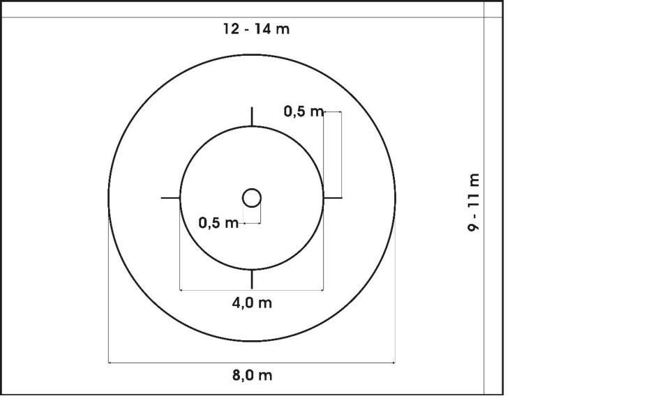
UCI CYCLING REGULATIONS8.1.012 Placement of the commissaires The commissaires must be placed at the competition surface, where they have a good view to the competition surface and their independence is guaranteed.
(text modified on 01.01.16)
8.1.013 Coaching area A coaching area (for a coach and an assistant) has to be defined before the start of the competition by the Chief-Commissaire in cooperation with the organiser (at least 2 metres width and with at least a distance of 0.5 metres to the border of the competition surface). In case of electronic judging the display of the official time must be seen from the coaching area.
(text modified on 01.01.16; 01.01.20)
8.1.014 Time measurement In case of electronic judging the display shows the official time. In case of manual judging the time and the acoustic signal has to occur with another visual display or a timekeeper has to announce the first minute.
(article introduced on 01.01.16)
8.1.015 Support lines It is not allowed to apply the support lines at the competition surface. They only are used here to understand the following explanations.
- **Middle longitudinal axis (support line A):** Line parallel to the long
side of the competition surface through the middle of the competition surface.
- **Middle transversal axis (support line B):** Line parallel to the short
side of the competition surface through the middle of the competition surface.
E0126 INDOOR CYCLING 11
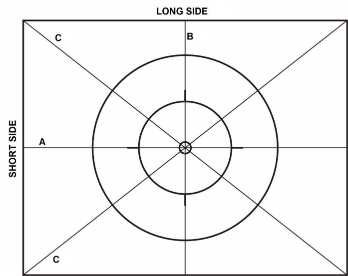
UCI CYCLING REGULATIONS - **Diagonal axis (support line C):** Lines from one corner to the opposite
corner through the middle of the competition surface.
(text modified on 01.01.16)
§ 7 Equipment
8.1.016 Bicycle All aids which are not shown in the drawing below are forbidden. The construction of the bicycles must correspond to the following rules and measures. All deviations which do not correspond with the stated measures have to be approved in advance by the UCI. The bicycle has to be constructed in a way that it is not possible to damage the competition surface.
- **Cranks:** Length from centre bottom bracket bearing to centre pedal
pivot shaft 130 – 170 mm.
- **Handlebar:** The end of the handlebar must be rounded off or closed
by grips. The use of handlebar-tape instead of grips is allowed.
- **Saddle:** The saddle must be a manufactured part. Maximum length
300 mm, maximum width 220 mm, maximum bent (without weight) 60 mm.
- **Wheels:** Front and rear wheel must have the same diametre. From the
height of frame of 46 cm the wheels must have a diametre of at least 24 inches, from 50 cm height of frame the wheels diametre must be at least 25 inches.
- **Transmission:** The front sprocket may not have fewer teeth than the
rear sprocket.
- **Sprocket:** Alternative mechanical drives are permitted, taking into
account the transmission ratios.
- **Rear-pin and front-pin:** It is allowed to equipe the axis of both wheels,
on both sides, with pins, each with a maximum length of 50 mm.
(text modified on 01.01.16)
E0126 INDOOR CYCLING 12
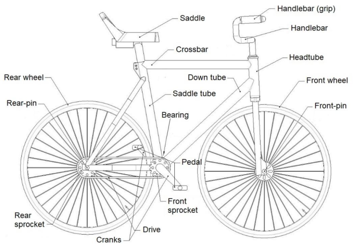
UCI CYCLING REGULATIONS8.1.017 Sports wear At Artistic Cycling competitions, the riders must wear appropriate clothes.
8.1.018 Musical accompaniment Any riding performance may be shown accompanied by music. If riders want to perform to a particular piece of music, the riders themselves have to provide the music.
§ 8 Evaluation sheet
8.1.019 Completion of the evaluation sheet and compilation of riding performance The top part of the evaluation sheet has to be fully completed. The figure number, the name of figure and the point values have to be filled in on the evaluation sheet exactly as in the list of figures. The point values have to be added and the total of points have to be filled in into the field difficulty points. Only figures from the corresponding list of figures in chapter V may be used in all events to create the riding performance, taking into account the respective maximum number of figures. Only one figure of each group of figures (a, b, c etc.) can be listed on the evaluation sheet. It is free for the riders to sequence the figures on the evaluation sheet according to their wishes, but during the competition the written order has to be followed exactly.
(text modified on 01.01.16)
8.1.020 Exceptions After a raiser passage a raiser figure according to the corresponding end position of the passage has always to be showed. Pairs are allowed to show a maximum of 3 turns on the spot. The same maximum of 3 figures is valid for figures with the affix “separate” (Exception: Passages on two bicycles).
(text modified on 01.01.16)
E0126 INDOOR CYCLING 13
UCI CYCLING REGULATIONS
8.1.021 Evaluation sheet sample In all competitions or championships, it is only allowed to use the evaluation sheet shown on this page.
(text modified on 01.01.16; 01.01.18)
E0126 INDOOR CYCLING 14
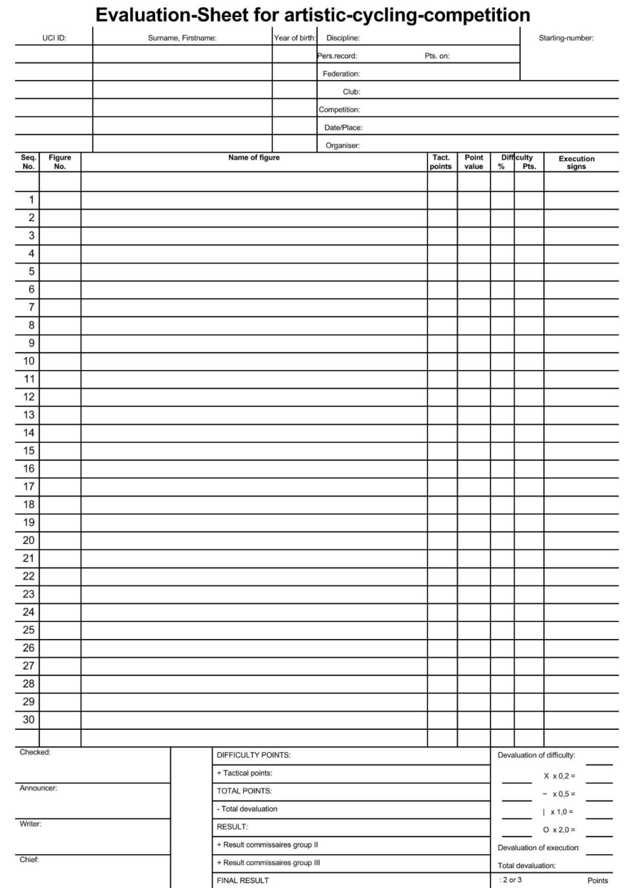
UCI CYCLING REGULATIONS8.1.022 Check of evaluation sheet Is an electronic judging system used in a competition the rider/coach is required to check, correct and sign the evaluation sheet he received. From 1 hour before start of the corresponding event it is not allowed to change the evaluation sheet anymore. Possible disadvantages due to mistakes on the evaluation sheet are in the responsibility of the rider.
(text modified on 01.01.16)
8.1.023 Evaluation of the results The total points are the result of the difficulty points and the respective tactical points. The total devaluation is being calculated from the devaluation of difficulty and the devaluation of execution. The total devaluation subtracted from the total points is the result. Any devaluation of difficulty for tactical figures has to be calculated from the point value of the figure including the attempted tactical points. The final result is being calculated by the total of the single results from the commissaires groups, divided by the number of commissaires groups and has ~~is~~ to be rounded to two digits after the point. If two or more riders end up with the same final result, the lower devaluation of execution will decide about the ranking. In the case it is the same, the riders will receive the same place in the ranking. The final result of each competition has to be published as soon as possible by the Chief Commissaire or organiser. No results below zero will be published. Only the rankings, based on the subtractions, will be published.
(text modified on 01.01.16; 01.01.18)
8.1.024 Release of evaluation sheets After finishing an event, the evaluation sheets or electronic judging documents have to be submitted to the corresponding person. The evaluation sheets have to be treated confidentially and may only be submitted to the concerning head of delegation, rider or coach. At World Championships, the evaluation sheets have to be submitted to the head of delegation.
(text modified on 01.01.16)
§ 9 Commissaires panel
8.1.025 Appointment of commissaires All commissaires appointed at artistic cycling competitions or championships must hold an adequate license, corresponding to the respective category. The commissaires for international championships will be appointed by the authorized international federations or corresponding their guidelines. For all other competitions, the national federations or their subordinate bodies will be responsible for the appointment of the commissaires.
E0126 INDOOR CYCLING 15
UCI CYCLING REGULATIONS
8.1.026 Responsibility of commissaires Any evaluation has to be conducted under the personal responsibility of the commissaire without influence from anybody else and has to be based only on the valid regulations. All commissaires are obliged to be totally neutral towards riders. The published result is a total decision of the commissaires’ panel. Individual members of the commissaires’ panel do not communicate differing opinions towards outside parties.
Composition of commissaires panel 8.1.027 International Championships:
- 1 commissaire as Chief Commissaire;
- 3 announcing commissaires;
- 3 writing commissaires;
Each commissaires group consists of 1 announcing commissaire and 1 writing commissaire.
(text modified on 01.01.20)
8.1.028 Other competitions: bis - 1 commissaire as Chief Commissaire;
- 2-3 announcing commissaires;
- 2-3 writing commissaires;
Each commissaires group consists of 1 announcing commissaire and 1 writing commissaire.
(text modified on 01.01.20)
Tasks of commissaires 8.1.029 Commissaires panel
- Commissaires are responsible for the evaluation and are required to
sign the evaluation sheet (not necessary when an electronic judging system is used).
- Commissaires have to check and approve the measures and the
condition of the competition surface.
- Commissaires are required to check and to sign the evaluation sheets
when the manual judging system (paper) is used. Faults in the evaluation sheet must be corrected in advance of the competition, if possible, together with the rider or his coach.
(text modified on 01.01.16; 01.01.17)
8.1.030 The Chief Commissaire
- decides on the composition of the commissaires groups.
- is allowed to assemble meetings of the commissaires panel to
guarantee the performance of the panel.
- Hands over the evaluation sheets to the commissaires.
- gives a signal (acoustically or visually) to enable the start.
- starts the timekeeping and times the length of the performance
mechanically or electronically and will give an acoustic signal at the end of the official maximum time. It is possible to transfer this task to a separate time-keeper, who has to be situated next to the Chief Commissaire.
- a second (spare) time system has to be used in case of malfunctions.
E0126 INDOOR CYCLING 16
UCI CYCLING REGULATIONS
- in case a rider forgets the “START” call at the beginning of the
performance, the Chief Commissaire will determine the moment of starting the time.
- is observing the performance closely in order to be able to decide in
case of interruptions or extra ordinary occurrences.
- after the end of each performance the Chief Commissaire verifies the
evaluation sheets.
- is responsible that obvious judging mistakes will be corrected (if
possible before the start of the next rider) by majority decision of the entire commissaires panel.
- the Chief Commissaire has to sign the evaluation sheet in case of
manual judging. The Chief Commissaire is responsible for publishing the official final result and to release the evaluation sheet.
- in case of a defect bicycle and/or an injured or ill rider the Chief
Commissaire has to stop the official time. In such a case the Chief Commissaire has to determine the time left. It is up to the Chief Commissaire to decide whether or not a riding performance can be continued. When the riding performance is continued, the rider who fell, has to stand on the floor, next to his bicycle. The bicycle is in the same place and in the same direction as at the moment of the time stop. In pair artistic cycling and ACT4, the other riders take the positions they had immediately before the interruption.
(text modified on 01.01.16; 01.01.17; 01.01.20, 01.01.2023)
8.1.031 Announcing commissaire The announcing commissaire follows the progress of the riding performance to evaluate the difficulty and execution of the figures. After each figure he announces the respective devaluations.
(text modified on 01.01.16)
8.1.032 Writing commissaire
- reads the name of the figure according to the sequence on the
evaluation sheet to the announcing commissaire.
- writes the announced devaluation on the corresponding line of the
figure on the evaluation sheet.
(text modified on 01.01.16; 01.01.17)
E0126 INDOOR CYCLING 17
UCI CYCLING REGULATIONS
Chapter II SPECIFIC RULES
§ 1 Length of riding perfomance
8.2.001 Length of the riding performance For all events and age-groups the maximum time is 5 minutes.
(text modified on 01.01.16)
§ 2 Number of figures
8.2.002 Age-groups Elite and Junior
- Single artistic cycling: max. 30 figures
- Pair artistic cycling: max. 25 figures (with a minimum of 8, but a
maximum of 15 figures on one bicycle). It is required to perform figures on one and on two bicycles.
- Artistic Cycling Team 4: max. 25 figures
8.2.003 Age-group youth
- Single artistic cycling: max. 25 figures
- Pair artistic cycling: max. 20 figures (with a minimum of 4, but a
maximum of 12 figures on one bicycle). It is required to perform figures on one and on two bicycles.
- Artistic Cycling Team 4: max. 25 figures
(text modified on 01.01.23, 01.01.26)
§ 3 Riding performance
8.2.004 Start of the riding performance As soon as one of the riders enters the competition surface the evaluation will start. Before the start of the riding performance the riders present themselves on the competition surface, standing on the surface. Then the riding performance must be started with the clear call “START”; the riders being on the bicycle without touching the competition surface. With the call “START” the timekeeping starts.
(text modified on 01.01.16)
8.2.005 End of the riding performance and descent from bicycle At the end of the performance all riders have to descend from their bicycle correctly ( ACT4: descend correctly and simultaneously) and present themselves, while standing on the competition surface towards the audience. The evaluation ends at this moment (even after the maximum time).
(text modified on 01.01.16; 01.01.17, 01.01.23)
8.2.006 Leaving bicycles During the riding performance the riders are not allowed to leave the bicycle. Exception pair artistic cycling: The one-time change from two bicycles to one, or from one bicycle to two.
E0126 INDOOR CYCLING 18
UCI CYCLING REGULATIONS
8.2.007 Interruption of the riding performance The rider/coach will announce a defect of his bicycle, an injury or illness by raising the arm or/and by a clear call “STOP”.
8.2.008 Commands of execution Commands of execution can be given only by the respective riders on the competition surface.
(text modified on 01.01.16)
8.2.009 Announcing figures During all events announcing and/or showing the figures by outsiders is not allowed.
(text modified on 01.01.16)
8.2.010 Tactical figures (T) For figures which are described as tactical (T) in the tables of figures it is allowed to extend these figures during the performance of this figure as described.
(text modified on 01.01.16)
8.2.011 Final figures Final figures can only be performed as the last figure before the change of bicycles in pair artistic cycling or as the last figure of the riding performance. Final figures are part of the riding performance. The riders have to end the final figure standing on the competition surface, holding the bike with one hand, while stretching the other arm sidewards and horizontally (exception: handstand bicycle lying down).
(text modified on 01.01.16)
8.2.012 Deviations If deviations in these regulations occur between the drawing and the applicable text, the text will prevail in such a case.
Complement for pair artistic cycling 8.2.013 Changing bicycles pair artistic cycling The descent from the bicycle has to be performed correctly. During the hand over / hand in of the bicycle from/to the rider, the coach has to stay within the coaching area. The bicycle has to be stored within the coaching area. The ascent on the bicycle(s) has to be performed without assistance.
(text modified on 01.01.16; 01.01.17)
§ 4 Sequence of the figure
8.2.014 Execution of the figure All figures have to be executed within the competition surface and in accordance with chapter II specific rules, the name of the figure and chapter III explanations of the figures.
(text modified on 01.01.16)
E0126 INDOOR CYCLING 19
UCI CYCLING REGULATIONS
8.2.015 Body posture During the execution of the figures a correct body posture is required in the sense of sportmenlike artistic cycling which may not be changed during the whole execution of a figure. Exceptions are the figures where a changing of the body posture is necessary.
(text modified on 01.01.16)
8.2.016 Free-hand (frh.) If free-hand (frh.) is written in the name of a figure all riders have to ride the entire way of stretch free-hand. A way of stretch is considered to be a freehand distance if all riders have no contact with their hands to the handlebar, the bicycle or another rider, unless a grip connection is prescribed in the explanations of figures. Arms which are not connected by a grip connection have to be stretched, horizontally, sidewards by an angle of 90° to 110° towards the body (see drawing). ( ACT4 : with exception of door-figures, surrounding and compass).
(text modified on 01.01.16, 01.01.23)
8.2.017 Position of the arms Figures which do not have the term “frh.” in the name of the figure, riders have to be connected with one hand to a rider with a grip connection. The other hand is connected to the handlebar (or frh.). The position of the arms has to be identical. When riders are not connected to a partner and are connected to the handlebar with a hand, the other hand/arm has to be stretched sidewards. Possible deviations are described in the explanations of figures.
(text modified on 01.01.16)
8.2.018 Stretching of arms and legs If in the specific rules or in the explanations of figures is mentioned:
- “arm” or “arms”, it refers to the elbow, wrist and finger.
- “leg” or “legs”, it refers to the knee and ankle.
(text modified on 01.01.16)
8.2.019 Both wheels on floor Except figures with the text “raiser” all figures have to be performed with both wheels on the floor during the total way of stretch of the figure. Exceptions are described in the explanations of figures.
(text modified on 01.01.16)
E0126 INDOOR CYCLING 20

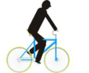
UCI CYCLING REGULATIONS8.2.020 Raiser If “raiser” is written in the name of a figure, the total way of stretch of the figure has to be performed in the described raiser-position.
Only the rear wheel is in contact with the floor.
(text modified on 01.01.16)
8.2.021 Forward All figures have to be performed in forward direction, if they are not marked in the name of the figure as backward. Exceptions are described in the explanations of figures. At all figures with both wheels on the floor, turns, squats and jumps forward is determined by the bicycle. At all raiser figures the direction of the riders’ face is decisive for the forward direction.
(text modified on 01.01.16)
8.2.022 Backward (bw.) When figures are marked in the name of the figure with “backward” they have to be performed during the total way of stretch of the figure in the backward direction. Exceptions are described in the explanations of figures. At all figures with both wheels on the floor, turns, squats and jumps the backward motion is determined by the movement of the rolling bicycle. At all raiser figures the direction against the riders’ face is decisive for the backward direction.
(text modified on 01.01.16)
Complement for single and pair artistic cycling 8.2.023 Figures with straight line
- Bendstands and backstand: Straight line from head over trunk and free leg. The foot of the free leg has to be at least on the same level as the foot of the supporting leg.
- Knee on saddle: Straight line from head over trunk and free leg.
- Waterscale: Straight line of trunk and legs.
(text modified on 01.01.16; 01.01.20)
8.2.024 Saddle handlebarstands, handlebarstands and saddlestands These figures have to be performed in an upright, free-hand position, with sidewards stretched arms and hands.
(text modified on 01.01.16)
8.2.025 L-shape hoDed, scales and straddles
- L-shape hold has to be performed with closed and horizontally stretched legs.
- Scales have to be performed with closed and horizontally stretched legs. The legs and the upper part of the body have to build a straight line.
- At straddles the stretched legs have to be in a horizontally position to the
floor or at right angle to the bicycle. The opening angle of the straddle has to be at least 70°. Exceptions: No 70 degrees required with free support balance legs spread.
E0126 INDOOR CYCLING 21
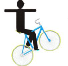
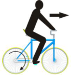
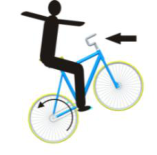
UCI CYCLING REGULATIONS(text modified on 01.01.16; 01.01.20; 01.01.25)
8.2.026 Squats and turning jumps All these figures have to be performed without bracing, pushing off and leaning onto the handlebars, frame or saddle with legs or feet.
(text modified on 01.01.16)
8.2.027 Stillstands and handstand bicycle lying down These figures have to be performed at least 3 seconds.
(text modified on 01.01.16)
8.2.028 Passages (P.) All passages can be performed in any way, without touching the floor and without any other assistance. The figure has to be shown from the starting position to the endposition without taking another figure position. If the described endposition is a raiser-position, the following figure must be shown in the same kind of raiser. The start and the end of the passage has to be shown according the description of the start- and endposition in the explanations of figures. Pair artistic cycling: passages on two bicycles must be performed in grip connection (except the passages backhang raiser headtube reverse / standraiser).
(text modified on 01.01.16)
8.2.029 Counterwise If the term “counterwise” appears in the text this means the same position is possible with the opposite foot or leg, with opposite pedal and/or opposite rearor frontpin.
Complement for pair artistic cycling 8.2.030 Stands and shoulderseats on one bicycle All the pin-, saddle handlebar-, handlebar-, saddle-, shoulderstands and shoulderseats must be performed with horizontally, sidewards, stretched arms (except ring-grip), without support from the partner and in an upright body posture. For the figure Saddle handlebarstand/Saddle handlebarstand, it is not required to have sidewards stretched arms for one rider. During this figure, it is allowed to touch or hold the partner. For the figure Raiser regular seat/Stand on pins, it is not required to have sidewards stretched arms for the position Stand on pins. It is allowed to touch or hold the partner which is in the raiser-position.
(text modified on 01.01.16)
8.2.031 Headstands, shoulderstands and handstands on one bicycle Figures with these positions have to be performed without support. It is not allowed to touch or hold the partner during the execution of these figures.
(text modified on 01.01.16)
E0126 INDOOR CYCLING 22
UCI CYCLING REGULATIONS
8.2.032 Simultaneous execution of figures All the figures on two bicycles have to be performed simultaneously.
(text modified on 01.01.16)
8.2.033 Figures performed “separate” During circles or half circles, which have to be executed separately (in pair), the distance between the two riders has to be identical.
Complement for pair artistic cycling and ACT4 8.2.034 Grip connections The following kinds of grip connections are allowed:
- hand-in-hand grip,
- double-arm grip,
- double-shoulder grip
- shoulder grip (only ACT4)
Other grip connections are not allowed. Exceptions are described in the explanations of figures. Pair artistic cycling: When in the explanations of figures or in the name of figures the term “separate” is not prescribed for a figure on two bicycles, or in these regulations just a touch of hands is being asked for, the figure must be shown totally or partially in grip connection.
(text modified on 01.01.16, 01.01.23)
8.2.035 Forehead-line The required number of riders (2 con., 3 con., 4 con.) ride and/or stand, side by side, in the same direction. They are connected to each other by a grip connection. The distance between the riders has to be identical.
(text modified on 01.01.16; 01.01.26)
Complement for ACT4 8.2.036 Counter direction (count. dir.) If the term “counter direction” is prescribed in the name of the figure, a rider or a group of riders have to ride in clockwise direction and the other rider or group of riders have to ride in anti-clockwise direction. The way of execution is described in the respective explanation of the figure. The riding-direction (forward or backward) has to be identical.
(text modified on 01.01.20, 01.01.23)
8.2.037 Figures next to each other and following each other
- Next to each other (n.e.o.) a) For figures, which are performed next to each other, the distance
between the riders has to be identical. b) For figures, where riders ride next to each other, the way of stretch
is to be measured according to the position of the outside riding rider (exception for line-figures and pull-figures). 2. Following each other (f.e.o.) a) For figures, which are performed following each other, the distance
between the riders has to be identical.
E0126 INDOOR CYCLING 23
UCI CYCLING REGULATIONS
b) For line-figures, pull-figures, S and 8, the distance between the
riders may not be more than 2 metres. Exceptions are described in the explanations of figures.
8.2.038 Rules for figures performed “inside individual”, “turn on” and “outside individual” Explanation: Inside individual, turn on and outside individual are extensions of a figure as it is described in the explanations of figures. The riders ride with a uniform way of riding to the position of the figure, grap simultaneously the position of the figure (inside individual or turn on) and leave the position of the figure uniformly (outside individual). A figure can be performed either only inside individual or turn on or inside and outside individual or turn on and outside individual. For this, the following rules apply:
- Inside individual: a) All riders ride at least 2 metres in the respective way of riding
according to the name of figure, separate and without grip connection into the position which is described in the explanation of figures. b) After the inside individual, the grip connections have to be closed
simultaneously and in motion. Exception: For “Stars” the grip connection doesn’t have to be closed in motion. c) For figures, which have to be performed within the middle circle or
around the inner circle, the inside individual has to be started outside of the middle circle. d) For “Stars” which are performed 2 con., 4 con. as inside individual,
the inside individual has to be performed in grip connection. 2. Turn on: a) The turn on has to be executed after the inside individual (see 1. a)
within a diametre of maximum 50cm. The turn on motion can be less than 360°. b) After the turn on the riders have to ride free-handed and separate
into the position which is described in the explanation of figures. The grip connections have to be closed, simultaneously and in motion. c) The tactical enlargement has to be awarded after closing all grip
connections within 2 metres after the turn on. d) For figures, which have to be perfomed within the 4-metre-circle, the
inside individual has to be started outside the middle circle. 3. Outside individual: a) After the corresponding figure, the riders have to release the grip
connections simultaneously and in motion. b) All riders have to perform the outside individual at least 2 metres in
the respective way of riding according to the name of the figure. c) For figures, which have to be perfomed within the middle circle the
outside individual has to end outside of the middle circle.
Rules for the way of riding:
- inside individual or inside and outside individual a) inside individual (inside indiv.)
The inside individual and the figure can be executed in any way: free-hand, with one or both hands on the handlebar. The way of riding of all riders has to be uniform. b) inside and outside individual (in- a. outside indiv.)
E0126 INDOOR CYCLING 24
UCI CYCLING REGULATIONS
Execution of inside individual (see a). The outside individual can be executed in any way. The way of riding of all riders has to be uniform. 2. free-hand inside individual / free-hand inside and outside individual: a) free-hand inside individual (frh. inside indiv.)
The figure which is described in the explanation of figures has to be executed free-hand. The inside individual can be executed in any way. The way of riding of all riders has to be uniform. b) free-hand inside and outside individual (frh. in- a. outside indiv.)
Execution of frh. inside individual (see a). The outside individual can be executed in any way. The way of riding of all riders has to be uniform. 3. inside individual free-hand / inside and outside individual free-hand a) inside individual free-hand (inside indiv. frh.)
The inside individual into the figure which is described in the explanation of figures and the figure has to be executed free-hand. b) inside and outside individual free-hand (in- a. outside indiv. frh.)
Execution of inside individual frh. (see a). The outside individual has to be executed free-hand, too. 4. turn on free-hand / turn on and outside individual free-hand a) turn on free-hand (turn on frh.)
The turn on into the figure which is described in the explanation of figures and the figure has to be executed free-hand. b) turn on and outside individual free-hand (turn on a. outside indiv.
frh.) The turn on frh. (see a). The outside individual has to be executed free-hand, too.
(text modified on 01.01.16; 01.01.17; 01.01.22; 01.01.26)
8.2.039 Lowering and rising of the frontwheel If riders before the first figure, or between figures obviously lower or rise the frontwheel, it has to occur simultaneously.
(text modified on 01.01.16)
8.2.040 Grab and release of the bicycle If riders before the first figure, or between figures obviously release or grab the bicycle, it has to occur simultaneously.
(text modified on 01.01.16)
§ 5 Way of stretch
8.2.041 Explanation way of stretch Way of stretch is the designation for the progress of figures on the competition surface. All figures have to be performed within the competition surface. The distance ridden at the outside of the competition surface has to be repeated inside.
8.2.042 Circle (C.) Only the distance ridden outside the middle circle is valid for the evaluation. During the execution of a circle the distance to the centre of the competition surface have to stay the same for the total way of stretch. A circle ends after at least one complete drive around the middle circle.
E0126 INDOOR CYCLING 25
UCI CYCLING REGULATIONS
(text modified on 01.01.16)
8.2.043 Half circle (HC.) Only the distance ridden outside the middle circle is valid for the evaluation. During the execution of a half circle the distance to the centre of the competition surface have to stay the same for the total way of stretch. A half circle ends after at least a half drive around the middle circle.
(text modified on 01.01.16)
8.2.044 Eight (8) An eight is formed by two circles. Both circles must have the same diametre with a minimum of 4 metres. One circle has to be performed clockwise, the other circle has to be performed anti-clockwise. The change of direction has to be performed within the inner circle. The inner circle has to be crossed twice during the execution of an 8. The circles have to be executed each in one half of the competition surface. The competition surface is split in two by an imaginary straight line, which runs through the inner circle.
8.2.045 Half eight (S) A half eight is formed by two half circles. Both half circles must have the same diametre with a minimum of 4 metres. One circle has to be performed clockwise, the other half circle has to be performed anti-clockwise. The change of direction has to be performed within the inner circle. The inner circle has to be crossed once during the execution of a S. The sequence of the figure starts at the longitudinal or transversal axis of the competition surface. The half circles have to be executed at two, across from each other, placed quarters of the competition surface (one half circle in each quarter). The competition surface is split in 4 quarters by the longitudinal and transversal axis.
(text modified on 01.01.16)
8.2.046 50cm-spinnings (spin.) Spinnings have to be performed on a spot with a maximum diametre of 50cm. The spinnings start being judged when the diametre has been achieved by all
E0126 INDOOR CYCLING 26
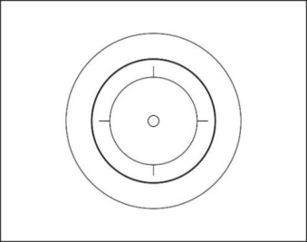
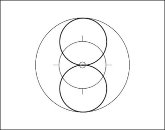
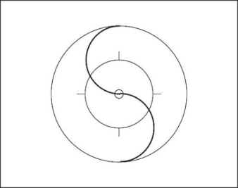
UCI CYCLING REGULATIONSriders. At least 3 complete, successive, spinnings, within the mentioned diametre of 50cm, have to be performed simultaneously by all riders. When spinnings are performed as part of a figure with described grip connection at the beginning and/or at the end of the figure the release and grapple of the grip connection must be performed simultaneously and in motion. For pair artistic cycling it is allowed to change the riding-direction. ACT4: All figures with the term “spinnings“ in the name of the figure have to be executed at least 2 metres before and after the 50cm-spinnings in the described position of the figure. The tactical enlargement has to be awarded after closing all grip connections within 2 metres after the 50cm-spinnings. Exception “Remmlinger spinnings”: This figure has to be executed according to the explanations of the figure.
(text modified on 01.01.16; 01.01.17; 01.01.22, 01.01.23)
8.2.047 Turn on the spot During the figure, the grip connections have to be released from the corresponding position of the figure simultaneously. Then, all riders have to turn on the spot immediately for ½ turn, 1 turn or multiple times, simultaneously and without pedalling. The riders rotate around their own body longitudinal axis. After the turn on the spot the grip connections have to be closed simultaneously, and the riders have to stand without moving. The distances between the riders have to be identical.
(text modified on 01.01.16)
8.2.048 Single rings (s.r.) A single ring is a small circle, completely performed around a spot on the competition surface. The release of the starting position in single rings, and the grapple into the end position have to be performed in motion. The single ring ends, when the point is rounded completely with released grip connection and when the riders have reached the starting position. For the following figures the riders have to touch one of their hands, before and after the single rings, indicating the start and the end of the figure: Saddlehandlebarstand, Handlebarstand and Saddlestand. During the performance of single rings in mills the riders have to leave the middle circle. Single rings may only be as large as the other rider cannot be rounded.
(text modified on 01.01.16)
8.2.049 Figures which may be shown anywhere on the competition surface: Handlebar spinnings, handlebarstand turns, stillstands, turns, squats, jumps, 50cm-spinnings, turns on the spot, single rings out of forehead-line, passages and final figures. Exceptions for ACT4 are described in chapter II specific rules and in the explanations of figures.
(text modified on 01.01.16, 01.01.23)
E0126 INDOOR CYCLING 27
UCI CYCLING REGULATIONS
Complement for pair artistic cycling 8.2.050 Counter eight (Count. 8) Each rider executes an eight. The sequence of the figure starts on the inner circle, where both riders ride from opposite directions, with a touch of hands of the riders (except handstand). The figure ends after completing the total way of stretch with a touch of hands (except handstand) of the riders, again on the inner circle.
8.2.051 Counter circle (Count. C) Each rider executes each on a separate half of the competition surface a complete circle with a minimum diametre of 4 metres around a point. The points are located with the same distance to the inner circle on the longitudinal axis. The competition surface is imaginary split, by the transversal axis. The sequence of the figure starts and ends on the inner circle with a touch of hands of the riders. The way of stretch which is executed during the handlebar-turn belongs to the content of the total way of stretch of the counter circle.
(text modified on 01.01.16)
8.2.052 Mill
- Connected by hand-in-hand grip with their left or right hands, the riders show the figure in the middle of the competition surface. A way of stretch with at least one complete drive around the inner circle has to be performed.
- At performing a mill with single-rings (s.r.) or mill-spinnings (mill. spin.) the riders have to show a grip connection at the middle of the competition surface at the start of the figure. Then the riders release their hands; execute the single-rings or mill-spinnings; and grab back to the hand-in-hand grip connection in the middle of the competition surface in motion. For single rings, combined with a mill, the riders have to leave the middle circle during the single ring.
(text modified on 01.01.16)
Complement for ACT4 8.2.053 Single ring left (s.r.l.) / single ring left through (s.r.l. through)
- Single ring left: a single ring left is performed with a way of stretch of a complete drive around a spot. In forward direction the riding direction is anti-clockwise. In backward direction, the riding direction is clockwise. A single ring ends after all riders have performed a complete drive and reached the starting position again.
- Single ring left through: execution similar to single ring left, except that
the single rings of the riders have to overlap.
Execution of single rings left during a figure:
- simultaneously, in same size and form
E0126 INDOOR CYCLING 28
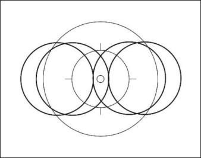
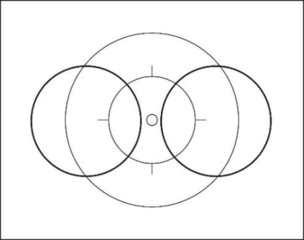
UCI CYCLING REGULATIONS - before and after the single rings left, at least 2 metres have to be
performed in the starting position (exception: stars) The way of stretch has to be measured on the outside riding rider.
- before the single rings left, the required grip connections have to be
released simultaneously and in motion.
- after the single rings left, the required grip connections have to be
closed simultaneously and in motion.
(article introduced on 01.01.16; text modified on 01.01.17; 01.01.20)
8.2.054 Single ring right (s.r.r.) / single ring right through (s.r.r. through)
- Single ring right: a single ring right is performed with a way of stretch of a complete drive around a spot. In forward direction the riding direction is clockwise. In backward direction, the riding direction is anticlockwise. A single ring ends after all riders have performed a complete drive and reached the starting position again.
- Single ring right through: execution similar to single ring right, except
that the single rings of the riders have to overlap.
Execution of single rings right during a figure:
- simultaneously, in same size and form - before and after the single rings right, at least 2 metres have to beperformed in the starting position exception: stars) The way of stretch has to be measured on the outside riding rider.
- before the single rings right, the required grip connections have to bereleased simultaneously and in motion.
- after the single rings right, the required grip connections have to beclosed simultaneously and in motion.
(article introduced on 01.01.16; text modified on 01.01.20; 01.01.26)
8.2.055 2 connected single ring left (2 con. s.r.l.) A 2 connected single ring left is performed with a way of stretch of a complete drive around a common point. Two riders ride with grip connection and in same direction side by side. In forward direction the riding direction is anti-clockwise. In backward direction the riding direction is clockwise. The single ring ends after all riders have performed a complete drive and reached the starting position again. Execution of 2 connected single rings left during a figure:
- simultaneously, in same size and form
- before and after the 2 con. single rings left, at least 2 metres have to
be performed in the starting position. The way of stretch has to be measured on the outside riding rider.
- before the 2 con. single rings left the required grip connections have to
be released simultaneously and in motion.
- after the 2 con. single rings left the required grip connections have to
be closed simultaneously and in motion.
(article introduced on 01.01.16)
8.2.056 2 connected single ring right (2 con. s.r.r.) A 2 connected single ring right is performed with a way of stretch of a complete drive around a common point. Two riders ride with grip connection and in same direction side by side. In forward direction the riding direction is clockwise. In backward direction the riding direction is anti-clockwise. The single ring ends
E0126 INDOOR CYCLING 29
UCI CYCLING REGULATIONS
after all riders have performed a complete drive and reached the starting position again. Execution of 2 connected single rings right during a figure:
- simultaneously, in same size and form
- before and after the 2 con. single rings right, at least 2 metres have to
be performed in the starting position. The way of stretch has to be measured on the outside riding rider.
- before the 2 con. single rings right the required grip connections have
to be released simultaneously and in motion.
- after the 2 con. single rings right the required grip connections have to
be closed simultaneously and in motion.
(article introduced on 01.01.16)
8.2.057 Half alternate ring (half a.r.) A half alternate ring consists of two half drives, around a spot each. Both half drives have to be performed in same size and uniform. One of the two half drives have to be performed clockwise; the other half drive has to be performed anticlockwise.
(article introduced on 01.01.16; text modified on 01.01.20)
8.2.058 Alternate ring (a.r.) / alternate ring overlapping (a.r. overlapping)
- Alternate ring: An alternate ring consists of two drives, around a spot each. Both drives have to be performed in same size and uniform. One of the two drives has to be performed clockwise; the other drive has to be performed anti-clockwise.
- Alternate ring overlapping: The way of stretch of the second drive overlaps with the first drive of the rider riding behind or riding ahead.
(article introduced on 01.01.16; text modified on 01.01.17, 01.01.20; 01.01.22)
8.2.059 Half shortline opposite direction alternate ring (half shortline opp. dir. a.r.) Two or three riders ride, next to each other, without grip connection on an axis which runs parallel to the long side of the competition surface. They form a pair of riders or a group of riders. The pair of riders or group of riders have to perform a half shortline opposite direction alternate ring (see article 8.2.057 ) with the same speed during the figure and they ride from one other long side of the border of the competition surface to the respectively opposite side.
8.2.060 Shortline opposite direction alternate ring (shortline opp. dir. a.r.) Two or three riders ride, next to each other, without grip connection on an axis which runs parallel to the long side of the competition surface. They form a pair of riders or a group of riders. The pair of riders or group of riders have to perform a shortline opposite direction alternate ring (see article 8.2.058 No. 1) with the same speed during the figure and they ride from one other long side of the border of the competition surface to the respectively opposite side and back.
E0126 INDOOR CYCLING 30
UCI CYCLING REGULATIONS
8.2.061 Star inside All riders are standing, at the same distances between each other, without moving, around the inner circle. All are connected to each other by hand-in-hand grip connection. The bicycle head tubes have to point to the inner circle.
(article introduced on 01.01.16, 01.01.23)
8.2.062 Star outside All riders are standing, at the same distances between each other, without moving, around the inner circle. All are connected to each other by hand-in-hand grip connection. The bicycle rear wheels have to point to the inner circle.
(article introduced on 01.01.16, 01.01.23)
8.2.063 Alternate-star All riders stand, without moving and the same distance between each other, around the inner circle. They are connected by a hand-in-hand grip connection. The head tube is alternately directed to the inner circle by a rider and the rear wheel by the following rider.
8.2.064 Shortline At a shortline the riders, pairs of rider or groups of riders are aligned parallel to the long side of the competition surface. They ride from a long side of the border of the competition surface to the other side on an axis which runs parallel to the short side of the competition surface. At a shortline following each other all riders ride on a common axis. At a shortline next to each other the riders ride on an own axis each. All line figures start 1 metre of the riders’ distance to the border of the competition surface and they end 1 metre from the opposite border of the competition surface. The way of stretch has to be straight. At line figures the way of stretch has to be measured at the front wheel or rear wheel which is the nearest to the border of the competition surface.
(article introduced on 01.01.16)
8.2.065 Shortline opposite direction At a shortline opposite direction the riders, pairs of rider or groups of riders are aligned parallel to the long side of the competition surface. They ride from one other long side of the border of the competition surface to the respectively opposite side, on an axis which runs parallel to the short side of the competition surface, at the same speed in the opposite direction, passing each other. At a shortline opposite direction following each other all riders ride on a common axis. At a shortline opposite direction next to each other the riders ride on an own axis each. All line figures start 1 metre from the riders' distance to the border of the competition surface, and they end 1 metre from the opposite border of the competition surface. The way of stretch has to be straight. For line figures the way of stretch has to be measured from the front wheel or rear wheel which is the nearest to the border of the competition surface.
E0126 INDOOR CYCLING 31
UCI CYCLING REGULATIONS
8.2.066 Longline At a longline the riders, pairs of rider or groups of riders are aligned parallel to the short side of the competition surface. They ride from a short side of the border of the competition surface to the other side, on an axis which runs parallel to the long side of the competition surface. At a longline following each other all riders ride on a common axis. At a longline next to each other the riders ride on an own axis each. All line figures start 1 metre from the riders’ distance to the border of the competition surface, and they end 1 metre from the opposite border of the competition surface. The way of stretch has to be straight. For line figures the way of stretch has to be measured from the front wheel or rear wheel which is the nearest to the border of the competition surface.
8.2.067 Longline opposite direction At a longline opposite direction, the riders, pairs of rider or groups of riders are aligned parallel to the short side of the competition surface. They ride from one other short side of the border of the competition surface to the respectively opposite side, on an axis which runs parallel to the long side of the competition surface, at the same speed in the opposite direction, passing each other. At a longline opposite direction following each other all riders ride on a common axis. At a longline opposite direction next to each other the riders ride on an own axis each. All line figures start 1 metre from the riders’ distance to the border of the competition surface, and they end 1 metre from the opposite border of the competition surface. The way of stretch has to be straight. For line figures the way of stretch has to be measured from the front wheel or rear wheel which is the nearest to the border of the competition surface.
8.2.068 Diagonal pull At a diagonal pull, the riders, pairs of rider or groups of riders, ride in a straight line from one corner of the border of the competition surface to the diagonal opposite corner. All line figures start 1 metre from the riders’ distance to the border of the competition surface, and they end 1 metre from the opposite border of the competition surface. The way of stretch has to be straight. For line figures the way of stretch has to be measured from the front wheel or rear wheel which is the nearest to the border of the competition surface.
8.2.069 Diagonal pull opposite direction At a diagonal pull opposite direction the riders, pairs of rider or groups of riders, ride in a straight line from one corner of the border of the competition surface to the diagonal opposite corner, at the same speed in the opposite direction, passing each other. All line figures start 1 metre from the riders’ distance to the border of the competition surface, and they end 1 metre from the opposite border of the competition surface. The way of stretch has to be straight. For line figures the way of stretch has to be measured from the front wheel or rear wheel which is the nearest to the border of the competition surface.
8.2.070 Mill For a mill all riders have to ride, with same distances and following each other, a complete drive around the inner circle. They are connected by a grip connection with their left hands. The figure has to be performed within the middle circle.
8.2.071 2 Mills Two riders have to ride, with same distances and following each other, a complete drive around one point each. They are connected by a grip connection
E0126 INDOOR CYCLING 32
UCI CYCLING REGULATIONS
with their left hands. All mills have to be performed uniformly distributed on the longitudinal or transversal axis. The mills start when all riders are connected. Each rider has to be on a common axis, which runs parallel to the long or short side of the competition surface, with one rider of the other mill/s. The mills have to be performed simultaneously. Exceptions applicable to the end of the figure are described in the explanations of figures. If the mills have to be performed during another figure, the starting position has to be shown at least 2 metres before and after the mills.
(text modified on 01.01.20; 01.01.24, 01.01.26)
8.2.072 2 con. wingmill Two riders have to ride with grip connection, next to each other on an axis. They form a pair of riders. The pairs of riders have to ride with same distances and following each other, a half / a complete drive around the inner circle. The inside riding riders are connected with their left hands by a hand-in-hand grip connection, which is located above the inner circle. Exceptions applicable to the end of the figure are described in the explanations of figures.
(text modified on 01.01.26)
8.2.073 Insidering For insidering all riders have to ride, with same distances and following each other a complete drive around the inner circle. Each rider has to take his right hand forward and grip the left hand of the rider in front of him. The insidering starts when all riders are connected. The insidering has to be performed within the middle circle. Exceptions applicable to the end of the figure are described in the explanations of figures.
8.2.074 2 insiderings
Two riders have to ride, with same distances and following each other, a complete drive around one point each. They form a pair of riders. Each rider has to take his right hand forward and grip the left hand of the rider in front of him. All rings have to be performed uniformly distributed on the longitudinal or transversal axis. The insiderings start when all riders are connected. Each rider has to be on a common axis, which runs parallel to the long or short side of the competition surface, with one rider of the other ring/s. The insiderings has to be performed simultaneously. Exceptions applicable to the end of the figure are described in the explanations of figures.
(text modified on 01.01.20; 01.01.26)
8.2.075 2 con. wingring
Two riders have to ride, with grip connection, next to each other on an axis. They form a pair of riders. The pairs of riders ride with same distances and following each other, a complete drive around the inner circle. Each inside riding rider grip with the right hand to the left hand of the rider in front of him. The outside riding riders grip with the left hand on the shoulder of one of the inside riding rider.
E0126 INDOOR CYCLING 33
UCI CYCLING REGULATIONS
Exceptions applicable to the end of the figure are described in the explanations of figures.
(text modified on 01.01.26)
8.2.076 Outsidering For outsidering all riders have to ride, with same distances and following each other, a complete drive around the inner circle. Each rider has to take his left hand forward and grip the right hand of the rider in front of him. The outsidering starts when all riders are connected. The outsidering has to be performed within midlle circle. Exceptions applicable to the end of the figure are described in the explanations of figures.
8.2.077 2 outsidering Two riders have to ride, with same distances and following each other, a complete drive around one point each. They form a pair of riders. Each rider takes his left hand forward and grips the right hand of the rider in front of him. All rings have to be performed uniformly distributed on the longitudinal or transversal axis. The outsiderings start when all riders are connected. Each rider has to be on a common axis, which runs parallel to the long or short side of the competition surface, with one rider of the other ring/s. The outsiderings have to be performed simultaneously. Exceptions applicable to the end of the figure are described in the explanations of figures.
(text modified on 01.01.20; 01.01.26)
8.2.078 Ring with alternate grips For ring with alternate grips all riders have to ride, with same distances and following each other, a complete drive around the inner circle. Rider 1 and 3 have to take their left hand forward and grip the left hand of the rider in front of them. Rider 2 and 4 grip with the right hand the right hand of the rider in front of them. The ring with alternate grips starts when all riders are connected. The figure has to be performed within the middle circle. Exceptions applicable to the end of the figure are described in the explanations of figures.
(text modified on 01.01.26)
8.2.079 Door Two riders have to stand on the longitudinal or transversal axis. They are connected by a hand-in-hand grip connection. The arms which are not connected have to be stretched sideward and horizontally. The grip connections are above the inner circle. Thus, the riders form a door.
8.2.080 Double door Three riders have to stand on the longitudinal or transversal axis, the central rider has to stand on the inner circle. The three riders are connected by a hand-inhand grip connection. The arms which are not connected have to be stretched sideward and horizontally. Thus, the riders form a double door. The distance between the riders has to be identical.
E0126 INDOOR CYCLING 34
UCI CYCLING REGULATIONS
8.2.081 Turbine Three riders have to ride on a common axis, the center rider has to be located on the inner circle. The two outside riders are connected by a hand-in-hand grip with the center rider and ride around him. The center rider has to turn on his spot without pedalling, while the two outside riders rotate the center rider around his body longitudinal axis. Thus, the riders form a turbine.
(article modified on 01.01.20)
8.2.082 [abrogated on 01.01.26]
Chapter III EXPLANATIONS OF FIGURES
§ 1 Single artistic cycling
8.3.001 Figures with both wheels on the floor Reg. seat Seat on the saddle, chest directed to the handlebar, feet on the pedals. 1002c: with continuous handlebarspinning, a complete single ring has to be performed free-hand.
Reg. seat rev. Seat on the saddle, back directed to the handlebar, feet on the pedals. 1004e: with continuous handlebarspinning, a complete single ring has to be performed free-hand.
Steering with feet Seat on the saddle, chest directed to the handlebar, feet on the handlebar.
Lady seat Seat on the saddle, chest directed to the handlebar, one foot on a pedal. The free leg stretched over the crossbar to the opposite side of the bicycle and below the handlebar, without touching the handlebar with the leg.
Handlebarseat Seat on the handlebar, back directed to the saddle. The free leg stretched forward, horizontally. Other foot on the down tube.
Handlebarseat rev. Seat on the handlebar, chest directed to the saddle, feet on the pedals.
E0126 INDOOR CYCLING 35
1001 1002
1003 1004
1011
1012 1013
1016
1017
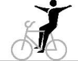
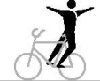
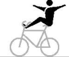
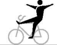
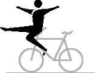
 UCI CYCLING REGULATIONS
UCI CYCLING REGULATIONS
Split Left foot standing on the left rear-pin, right foot standing on the right front-pin (or counterwise). Chest directed to the handlebar, without touching the handlebar with the leg.
Split rev. Right foot standing on the left rear-pin, left foot standing on the right-frontpin (or counterwise). Chest directed to the saddle, without touching the handlebar with the leg.
Frontstand Stand in front of the handlebar, back directed to the saddle. One foot on the frontpin, other foot on the down tube.
Backstand Stand with one foot on the frontpin, handlebar in front of the rider, chest directed to the saddle. The free leg has to be stretched in moving direction, without touching the handlebar with the legs.
Side pedal stand Stand with feet and closed legs on one pedal, chest directed to the handlebar.
Sidestand foot cranking Stand with one foot on the left rear-pin, other foot on the left pedal (or counterwise), chest directed to the handlebar.
Sidestand Stand with one foot on the left rear-pin, other foot on the left front-pin (or counterwise), chest directed to the handlebar, without touching the handlebar with the leg.
Sidestand rev. Stand with one foot on the left rear-pin, other foot on the left front-pin (or counterwise), chest directed to the saddle, without touching the handlebar with the leg.
Side kneeling foot cranking Knee of one leg across the saddle, without extending the outer edge of the saddle. Foot of the other leg on a pedal.
Frameseat Pushing one foot through the frame and placing foot on the front-pin. Free leg stretched forward, seat in the frame.
E0126 INDOOR CYCLING 36
1021 1022
1023 1024
1031
1032
1036
1037
1038
1039
1040
1041

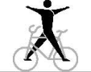
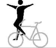
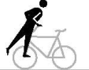
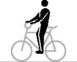
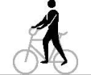
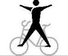
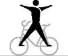
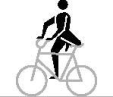
UCI CYCLING REGULATIONSStand on pins Stand with feet each on a rear-pin. Both knees behind the saddle.
Stand bent on pin Stand with one foot on the rear-pin, trunk bent-forward to the handlebar, free leg stretched backwards.
Bent knee seat In squat position with one foot on the crossbar, free leg horizontally stretched forward, back directed to the saddle.
Knee on saddle Knee on the saddle, trunk bent-forward to the handlebar, free leg stretched backwards in straight line with trunk and head.
Stand bent on saddle Stand with one foot on the saddle, trunk bent-forward to the handlebar, free leg stretched backwards.
Stand bent on frame Stand with one foot on the crossbar, trunk bent-forward to the handlebar, free leg stretched backwards.
Stand bent on frame rev. Stand with one foot on the crossbar, trunk bent-forward to the saddle, free leg stretched in moving direction.
Stand bent on handlebar rev. Stand with one foot on the handlebar, trunk bent-forward to the saddle, free leg stretched in moving direction, one hand on the saddle, other hand on the handlebar.
Pedal side stand rev. One leg through the frame, feet standing on the pedals, chest directed to the saddle.
Framestand Standing upright with one foot solely on the down tube, other foot solely on the saddle tube, chest directed to the handlebar. Without touching the feet each other and without touching the handlebar with the leg.
E0126 INDOOR CYCLING 37
1046
1047 1048
1051
1053 1054
1061 1062
1063 1064
1065
1066
1071
1076

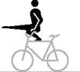

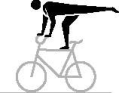
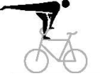
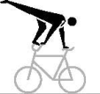
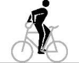
 UCI CYCLING REGULATIONS
UCI CYCLING REGULATIONS
Framestand rev. Standing upright with one foot solely on the down tube, other foot solely on the saddle tube, chest directed to the saddle. Without touching the feet each other and without touching the handlebar with the leg.
Fronthang Both hands behind the back on the handlebar, frontwheel between the legs, feet on the pedals.
Backhang In front of the headtube hanging on the handlebar, chest directed to the saddle, frame between the legs, feet on the pedals.
Lying on handlebar Lying with front of the body on the handlebar, head directed to the saddle, closed legs stretched horizontally in moving direction.
Lying on saddle, Lying on saddle and handlebar a-b: Lying with front of on the saddle, closed legs stretched horizontally backwards. c-d: Lying with front of the body on the saddle, arms stretched sidewards free-hand on the handlebar-grips. Closed legs stretched horizontally backwards.
Waterscale Lying with back of the body in a straight line on the handlebar, stretched legs or feet under ( a and b ), or on ( c and d ) the saddle.
Walk on front wheel ¼ circle Walking with feet on the front wheel tyre, both hands on the handlebar, chest directed to the saddle. The way of stretch for this figure has to be ¼ circle.
Saddle handlebarstand Stand free with one foot on the saddle and the other foot on the handlebar.
Saddlestand Stand free with feet on the saddle.
E0126 INDOOR CYCLING 38
1077
1081 1082
1083 1084
1091
1092
1093
1096
1101 1102
1103
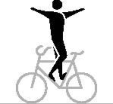
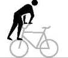
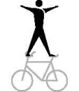
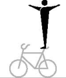
UCI CYCLING REGULATIONSFronthandlebarstand, Fronthandlebarstand turn (T) Stand free with feet on the handlebar-grips, back directed to the saddle. From one turn a tactical enlargement of the fronthandlebarstand turn(s) is possible up to four half-turns in maximum. e - h: The rider jumps from regular seat to fronthandlebarstand. i - l: From fronthandlebarstand with half or multiple front wheel turn(s) to the fronthandlebarstand or handlebarstand reverse. After the last turn, the end position has to be held for at least 2 metres. m - p: The rider jumps from regular seat to the fronthandlebarstand; further according figure i – l .
Handlebarstand rev. Stand free with feet on the handlebar-grips, chest directed to the saddle.
Saddle support scale One hand on the saddle, elbow supporting the body, other hand on the handlebar (handlebar-grip may be used as support for the forearm). Head in moving direction, legs stretched backwards.
Handlebar support scale One hand on the handlebar, elbow supporting the body, other hand on the saddle. Head to the saddle, legs stretched in moving direction.
Handlebar grip scale, legs front Both hands on the handlebar, elbows supporting the body. Head to the saddle, legs stretched in moving direction.
Handlebar grip scale, legs rear Both hands on the handlebar, elbows supporting the body. Head in moving direction, legs stretched above the saddle.
E0126 INDOOR CYCLING 39
1104
1105
1111
1112 a 1112 b 1112 c
1112 d 1112 e 1112 f 1112 g
1112 h 1112 i 1112 j 1112 k
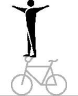

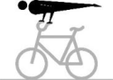
UCI CYCLING REGULATIONSFree support balance one leg extended The free support balance one leg extended must be performed for at least 2 seconds. Both hands on the handlebars. The arms are stretched. Upper body and one leg are stretched horizontally and form a straight line. The other leg is bent. The bike and the outstretched arms must not touch the bent leg.
Free support balance legs spread The free support balance legs spread must be performed for at least 2 seconds. Both hands on the handlebars. The arms are stretched. The upper body and the stretched and spread legs are stretched horizontally in one line.
Free support balance closed legs The free support balance closed legs must be performed for at least 2 seconds. Both hands on the handlebars. The arms are extended. The upper body and the outstretched, closed legs are horizontally in a line.
Handlebar L-shape hold Arms stretched, hands placed on the handlebar-grips, legs stretched, back directed to the saddle.
Handlebar L-shape hold rev. Arms stretched, hands placed on the handlebar-grips, legs stretched, chest directed to the saddle.
L-shape hold sidewards Arms stretched, one hand placed on the saddle, other hand placed on the handlebar. Legs stretched, without leaning against the handlebar-grip with the forearm or wrist.
Handlebar support straddle, Saddle support straddle. a-b: Arms stretched, hands placed on the handlebargrips. Legs stretched, straddled on the outside of the arms. c-d: Arms stretched, hands placed on the saddle. Legs stretched, straddled on the outside of the arms, without touching the handlebar.
Headstand Headstand on the saddle, both hands on the handlebar. Legs closed and stretched straight upwards.
E0126 INDOOR CYCLING 40
1113a
1113b
1113c
1115
1116
1117
1118
1121
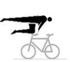
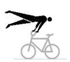
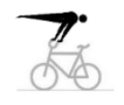
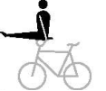
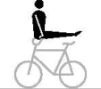
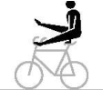
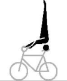
UCI CYCLING REGULATIONSShoulderstand Shoulderstand with one shoulder on the saddle or crossbar, boths hands on the handlebar. Legs closed and stretched straight upwards.
Saddle handlebar handstand Handstand with one hand on the handlebar and other hand on the saddle. Arms stretched, legs closed and stretched straight upwards, without leaning against the handlebar-grip with the forearm or wrist.
L-shape hold sidewards saddle handlebar handstand (T) From L-shape hold sidewards, which has to be performed for at least 2 metres, going directly to the handstand without touching the frame with foot/feet. The handstand has to be performed as described in 1123a-d . The way of stretch HC., C., S or 8 starts in the position of the saddle handlebar handstand. The tactical enlargement is possible for the kind of execution as Swiss saddle handlebar handstand which has to be performed as described in 1123i-l . The tactical enlargement is possible for the kind of execution as German saddle handlebar handstand which has to be performed as described in 1123m-p .
L-shape hold sidewards Swiss saddle handlebar handstand From L-shape hold sidewards, which has to be performed for at least 2 metres, going directly to the handstand with stretched legs over the frame but without touching the frame with foot/feet. After passing the frame, with stretched and straddled legs and stretched arms to the handstand, which has to be performed as described in 1123a-d . The way of stretch HC., C., S or 8 starts in the position of the saddle handlebar handstand.
L-shape hold sidewards German saddle handlebar handstand From L-shape sidewards, which has to be performed for at least 2 metres, going directly to the handstand with stretched legs over the frame without touching the frame or else with foot/feet. After passing the frame with stretched, closed legs and stretched arms to the handstand, which has to be performed as described in 1123a-d. The way of stretch HC., C., S or 8 starts in the position of the saddle handlebar handstand.
E0126 INDOOR CYCLING 41
1122
1123 a 1123 b 1123 c 1123 d
1123 e
1123 f 1123 g 1123 h
1123 i
1123 j 1123 k 1123 l
1123m
1123 n 1123 o 1123 p
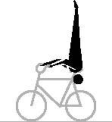
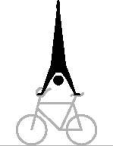
UCI CYCLING REGULATIONSHandlebar handstand Handstand with both hands on the handlebar-grips. Arms stretched, legs closed and stretched straight upwards.
L-shape hold handlebar handstand (T) From L-shape hold or L-shape hold rev., which has to be performed for at least 2 metres, going directly to the handstand without touching the handlebar and/or frame with foot/feet. The handstand has to be performed as described in 1124a-d . The way of stretch HC., C., S or 8 starts in the position of the handlebar handstand. The tactical enlargement is possible for the kind of execution as Swiss handlebar handstand, which has to be performed as described in 1124i-l . The tactical enlargement is possible for the kind of execution as German handlebar handstand, which has to be performed as described in 1124m-p .
L-shape hold Swiss handlebar handstand From L-shape hold or L-shape hold rev., which has to be performed for at least 2 metres, going directly to the handstand with stretched legs over the handlebar without touching the handlebar and/or frame with foot/feet. After passing the handlebar, with stretched and straddled legs and stretched arms to the handstand, which has to be performed as described in 1124a-d . The way of stretch HC., C., S or 8 starts in the position of the handlebar handstand.
L-shape hold German handlebar handstand From L-shape hold or L-shape hold rev., which has to be performed for at least 2 metres, going directly to the handstand with stretched legs over the handlebar without touching the handlebar or else with foot/feet. After passing the handlebar with stretched, closed legs and stretched arms to the handstand, which has to be performed as described in 1124a-d . The way of stretch HC., C., S or 8 starts in the position of the handlebar handstand.
Handlebar support straddle handlebar handstand From handlebar support straddle, which has to be performed for at least 2 metres, with stretched legs and stretched arms directly to the handstand, which has to be performed as described in 1124a-d . The way of stretch of HC., C., S or 8 starts in the position of the handlebar handstand.
E0126 INDOOR CYCLING 42
1124 a 1124 b 1124 c 1124 d
1124 e
1124 f 1124 g 1124 h
1124 i
1124 j 1124 k 1124 l
1124m
1124 n 1124 o 1124 p
1124 q
1124 r 1124 s 1124 t
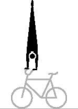
UCI CYCLING REGULATIONSStillstand on pedals, Stillstand pedal front wheel a-b: Stand with feet, solely, on the pedals, back directed to the saddle. The stillstand has to be performed for at least 3 seconds. c-d: Standing with one foot, solely, on a pedal, the other foot on the front wheel tyre, back directed to the saddle. The stillstand has to be performed for at least 3 seconds.
(text modified on 01.01.12; 01.01.16; 01.01.17; 01.01.20; 01.01.25)
8.3.002 Sidestand turn, squats and jumps Sidestand turn Chest directed to the handlebar, right foot on the right frontpin, left foot on the right pedal (or counterwise). With half turn of the handlebar and the front wheel to the backhang. While performing the turn, the foot must not leave the pedal.
Reg. seat squat Squat from regular seat over the handlebar to the fronthang.
Fronthang squat a : Squat from fronthang over the handlebar to the regular seat. Pushing off with one foot from a front-pin is allowed. b-c : Like a : but without pushing off from the front-pin.
Backhang squat a: Squat from backhang over the handlebar to the handlebarseat reverse. Pushing off with one foot from a frontpin is allowed. b-c: Like a: but without pushing off from the front-pin.
Handlebarseat rev. squat Squat from handlebarseat reverse over the handlebar to the backhang.
Handlebarseat rev. scissors jump From handlebarseat reverse crossing stretched legs above the saddle. Then changing grips to regular seat. Turning the upper part of the body while crossing or grip-changing. Intermediate sitting, after crossing, on the frame or the handlebar is allowed.
Backhang scissors jump Squat from backhang over the handlebar without an intermediate seat in position handlebarseat rev., crossing stretched legs above the saddle. Then changing grips to regular seat. Turning the upper part of the body while crossing or grip-changing. Intermediate sitting, after crossing, on the frame or the handlebar is allowed.
E0126 INDOOR CYCLING 43
1141
1151 a
1156
1157
1158
1159
1171 a
1171 b
 UCI CYCLING REGULATIONS
UCI CYCLING REGULATIONS
Turning jump / Turning-scissors jump a: From sidestand foot-cranking jump with half turn of the front wheel, then squat over the handlebar to handlebarseat reverse. The foot has to be removed from the pedal during the jump. b : From regular seat jump with half turn of the front wheel, then squat over the handlebar to the handlebarseat reverse. c : From handlebarseat reverse squat over the handlebar, immediately followed by jump with half turn of the front wheel to the regular seat. d : From regular seat jump with half turn of the front wheel to stand bent on frame reverse. e: From regular seat jump with half turn of the front wheel over the handlebar, without an intermediate seat in position handlebarseat rev., crossing stretched legs above the saddle, and changing grips to the regular seat. Turning the upper part of the body while crossing or grip-changing. Intermediate sitting, after crossing, on the frame or the handlebar is allowed.
Turning jump a: From sidestand foot cranking jump with half turn of the front wheel to walking on the front wheel. The foot has to be removed from the pedal during the jump. b: From regular seat jump with half turn of the front wheel to walking on the front wheel.
Turning jump a: From sidestand foot cranking with half turn of the front wheel to backhang. The foot has to be removed from the pedal during the jump. b: From regular seat with half turn of the front wheel to the backhang. c: From backhang with half turn of the front wheel to the regular seat.
Turning jump (T) The tactical enlargement of the turning jumps is possible from two to seven, three to eight, from four to nine and from five to ten turning jumps. a: From regular seat jump with complete turn of the front wheel to the regular seat. b-e: From regular seat jump with, continuous multiple turns to the regular seat.
E0126 INDOOR CYCLING 44
1172
1173
1174
1175
UCI CYCLING REGULATIONS
Pedal jump From side pedal stand jump simultaneously with feet over the crossbar to side pedal stand on the other side of the bicycle.
Jump Saddle handlebarstand to fronthandlebarstand Jump from the Saddle handlebarstand to the fronthandlebarstand that must be performed after the jump, for at least 2 metres.
Maute jump Jump from the saddlestand to the fronthandlebarstand which has to be performed, after the jump, for at least 2 metres.
(text modified on 01.01.16; 01.01.26)
8.3.003 Raiser figures Raiser reg. seat a-d/i: Seat on the saddle, chest directed to the handlebar, feet on the pedals. e-h: Seat on the saddle, chest directed to the handlebar, one foot on a pedal. The free leg has to be stretched without touching the bicycle.
Raiser reg. seat rev. a-d/g : Seat on the saddle, back directed to the handlebar, feet on the pedals. 1203e-f: Seat on the saddle, back directed to the handlebar, one foot on a pedal. The free leg has to be stretched without touching the bicycle.
Raiser lady seat Seat on the saddle, chest directed to the handlebar, one foot on a pedal. The free leg has to be stretched over the crossbar to the opposite side of the bicycle and below the handlebar without holding on the front wheel with the foot.
Raiser stand on pin / raiser stand on pin bw. 1216a-d/1217a-e: Stand with the left foot on the left rear-pin and with the right foot on the right pedal (or counterwise), chest directed to the handlebar.
Raiser sidestand / raiser sidestand bw. 1216e-h/1217f-g: Stand with one foot on the right rear-pin and with the other on the right pedal (or counterwise), chest directed to the handlebar.
E0126 INDOOR CYCLING 45
1181
1184
1201 1202
1203 1204
1211 1212
1216 1217
1216 1217
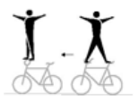
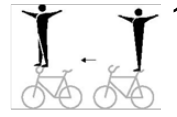
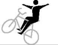
UCI CYCLING REGULATIONS
Raiser stand on pin rev. Stand with the right foot on the left rear-pin and the left foot on the right pedal (or counterwise), back directed to the handlebar.
Raiser sidestand rev. Stand with one foot on the right rear-pin and the other foot on the right pedal (or counterwise), back directed to the handlebar.
Raiser handlebarseat Seat in the lower part of the handlebar, chest directed to the front wheel, feet on the pedals.
Raiser handlebarseat rev. Seat in the lower part of the handlebar, back directed to the front wheel, feet on the pedals.
Raiser head tube Seat on the head tube, front wheel in front of oneself, feet on the pedals.
Raiser head tube 1 leg Seat on the head tube, front wheel in front of oneself, one foot on the pedal. The free leg has to be stretched, whithout touching the bicycle.
Raiser head tube rev. Seat on the head tube, front wheel behind oneself, feet on the pedals.
Standraiser Saddle directed downwards, holding the front wheel in front of oneself, standing with feet on the pedals.
Standraiser rev. Saddle directed downwards, holding the front wheel behind oneself, standing with feet on the pedals.
1219 a 1219 b
1219 c 1219 d
1226 1227
1228 1229
1236 a 1236 b 1236 e 1237
1236 c 1236 d
1238 1239
1246 1247
1248 1249


(text modified on 01.01.17)
8.3.004 Raiser passages Passages Execution according 8.2.028.
E0126 INDOOR CYCLING 46
1281-
1293
UCI CYCLING REGULATIONS
8.3.005 Final figures A final figure can only be performed as last figure of the riding performance. The rider has to finish the figure standing on the competition surface (except for figure o and p ), holding the bicycle in one hand. The other arm has to be stretched, horizontally sidewards.
Reg. seat handlebar squat From position regular seat squat over the handlebar with feet standing on the floor. During the jump, the handlebar has to be held with both hands.
Side pedal stand squat over the bicycle Feet on one pedal, squat over the frame with feet standing on the floor. During the jump the handlebar has to be held with both hands.
Reg. seat handlebar straddle From position regular seat jump with straddled legs over the handlebar ~~to~~ with feet standing on the floor. The handlebar has to be released during the jump.
Reg. seat handlebar squat ½ twist From position regular seat squat over the handlebar with a ½ twist with feet standing on the floor. The ½ twist has to end before the rider is standing on the floor. After the jump over the handlebar the rider has to release the handlebar until the end of the ½ twist.
Handlebarseat rev. handlebar squat From position handlebarseat reverse squat over the handlebar with feet standing on the floor. During the jump the handlebar has to be held with both hands.
Handlebarseat rev. handlebar straddle From position handlebarseat reverse jump with straddled legs over the handlebar with feet standing on the floor. The handlebar has to be released during the jump.
Stand bent on saddle handstandloop From position stand bent on saddle with handstandloop with feet standing on the floor in front of the handlebar. The handstand has to be performed with stretched arms, stretched and closed legs above the handlebar. A short stop of the loop at this position is no obligation. After the handstand both hands have to be released from the handlebar, after the following rotation around the body width axis the rider has to land on the floor.
E0126 INDOOR CYCLING 47
1301 a
1301 b
1301 c
1301 d
1301 e
1301 f
1301 g
UCI CYCLING REGULATIONS
Reg. seat handstandloop From position regular seat jump, without an intermediate position, with handstandloop to standing with feet on the floor in front of the handlebar. The handstand has to be performed with stretched arms, stretched and closed legs above the handlebar. A short stop of the loop at this position is no obligation. After the handstand both hands have to be released from the handlebar, after the following rotation of the body the rider has to land with feet on the floor.
Fronthandlebarstand stretchjump behind the bicycle From position fronthandlebarstand with stretchjump upwards, with complete stretched body and closed legs, to stand on the floor with feet behind the bicycle. At the highest position of the jump the arms have to be stretched vertically upwards.
Fronthandlebarstand stretchjump ½ twist in front of the bicycle From position fronthandlebarstand with stretchjump upwards, with complete stretched body and closed legs, and a ½ twist to stand on the floor with feet in front of the bicycle. At the highest position of the jump the arms have to be stretched vertically upwards.
Fronthandlebarstand straddlejump behind the bicycle From position fronthandlebarstand with straddle-jump, with straddled and horizontally stretched legs, to stand on the floor with feet behind the bicycle. At the stretched-straddled position the hands have to touch the feet.
Handlebarstand rev. stretchjump in front of the bicycle From position handlebarstand reverse with stretchjump upwards, with complete stretched body and closed legs, to stand on the floor with feet in front of the bicycle. At the highest position of the jump the arms have to be stretched vertically upwards.
Handlebarstand rev. stretchjump 1 twist in front of the bicycle From position handlebarstand reverse with stretchjump upwards, with complete stretched body and closed legs, and 1 twist, to stand on the floor with feet in front of the bicycle. At the highest position of the jump the arms have to be stretched vertically upwards.
Handlebarstand rev. somersault bw. hooked legs From position handlebarstand reverse somersault-jump backwards with hooked legs, to stand on the floor with feet in front of the bicycle.
Fronthandlebarstand ~~rev.~~ somersault bw. hooked legs From position fronthandlebarstand ~~reverse~~ somersault-jump backwards with hooked legs, to stand on the floor with feet behind the bicycle.
E0126 INDOOR CYCLING 48
1301 h
1301 i
1301 j
1301 k
1301 l
1301 m
1301 n
1301 q
UCI CYCLING REGULATIONS
Handstand bicycle lying down Handstand, on the frame of the bicycle, which is lying on the floor, with stretched arms, legs closed and stretched straight upwards without leaning on the handlebar, saddle or pedal with the forearms or wrists. The handstand has to be performed for at least 3 seconds.
L-shape hold swiss handstand bicycle lying down From position L-shape hold performed on the frame of the bicycle, which is lyin ~~g o~~ n the floor. The L-shape hold has to be shown for at least 3 seconds, then going to the handstand with stretched legs, without touching the bicycle with foot/feet. After passing the frame/bicycle, with stretched and straddled legs and stretched arms direct to the handstand, which has to be performed as described in 1301o . The handstand has to be performed for at least 3 seconds.
(text modified on 01.01.16; 01.01.17, 01.01.25)
§ 2 Pair artistic cycling
8.3.006 Figures with both wheels on floor on two bicycles Reg. seat Seat on the saddle, chest directed to the handlebar, feet on the pedals.
Reg. seat rev. Seat on the saddle, back directed to the handlebar, feet on the pedals.
Steering with feet Seat on the saddle, chest directed to the handlebar, feet on the handlebar.
Lady seat Seat on the saddle, chest directed to the handlebar, one foot on a pedal. The free leg stretched over the crossbar to the opposite side of the bicycle and below the handlebar, without touching the handlebar with the leg.
Handlebarseat Seat on the handlebar, back directed to the saddle. The free leg stretched forward, horizontally. Other foot on the down tube.
E0126 INDOOR CYCLING 49
1301 o
1301 p
2001 2002 2003 2004
2005
2011
2012 2013
2021
 UCI CYCLING REGULATIONS
UCI CYCLING REGULATIONS
Handlebarseat rev. Seat on the handlebar, chest directed to the saddle, feet on the pedals.
Split Left foot standing on the left rear-pin, right foot standing on the right front-pin (or counterwise). Chest directed to the handlebar, without touching the handlebar with the leg.
Split rev. Right foot standing on the left rear-pin, left foot standing on the right-frontpin (or counterwise). Chest directed to the saddle, without touching the handlebar with the leg.
Frontstand Stand in front of the handlebar, back directed to the saddle. One foot on the frontpin, other foot on the down tube.
Sidestand foot cranking Stand with one foot on the left rear-pin, other foot on the left pedal (or counterwise), chest directed to the handlebar.
Sidestand Stand with one foot on the left rear-pin, other foot on the left front-pin (or counterwise), chest directed to the handlebar, without touching the handlebar with the leg.
Stand on pins Stand with feet each on a rear-pin. Both knees behind the saddle.
Stand bent on pin Stand with one foot on the rear-pin, trunk bent forward directed to the handlebar, free leg stretched backwards.
Bent knee seat In squat position with one foot on the crossbar, free leg horizontally stretched forward, back directed to the saddle.
Knee on saddle Knee on the saddle, trunk bent-forward to the handlebar, free leg stretched backwards in straight line with trunk and head.
E0126 INDOOR CYCLING 50
2022
2026
2027
2031
2036
2037
2046
2047
2051
2052
UCI CYCLING REGULATIONS
Lying on saddle; Lying on saddle and handlebar a-b: Lying with front of the body on the saddle, closed legs stretched horizontally backwards. c-d: Lying with front of the body on the saddle, arms stretched sidewards free-hand on the handlebar-grips. Closed legs stretched horizontally backwards.
Waterscale Lying with back of the body in a straight line on the handlebar, stretched legs or feet under ( a and b ), or on ( c and d ) the saddle.
Framestand Stand upright with one foot solely on the down tube, other foot solely on the saddle tube, chest directed to the handlebar. Without touching the feet each other and without touching the handlebar with the leg.
Saddle handlebarstand Stand free with one foot on the saddle and the other foot on the handlebar.
Saddlestand Stand free with feet on the saddle.
Fronthandlebarstand, Fronthandlebarstand turn (T) From one turn a tactical enlargement of the fronthandlebarstand turn(s) is possible up to four half-turns in maximum. a-f: Stand free with feet on the handlebar-grips, back directed to the saddle. g-j: From fronthandlebarstand after releasing grip connection with half or multiple front wheel turn(s) to the fronthandlebarstand or handlebarstand reverse. After the last turn, and before the grip connection, at least 2 metres must be ridden in the handlebar position. The exercise ends with the grip connection. aa-ja: The riders jump simultaneously from regular seat to fronthandlebarstand; further according figure a-f ; g-j.
E0126 INDOOR CYCLING 51
2061
2062
2066
2067 2068
2069
2070
UCI CYCLING REGULATIONS
Counter circle fronthandlebarstand (T) k-n: From fronthandlebarstand with half or multiple front wheel turn(s) to the fronthandlebarstand or handlebarstand reverse. Execution of the figure according to the rule for counter circle 8.2.051 . After the last handlebarstand turn, but before the required hand touch, the end position has to be held for at least 2 metres. ka-na: The riders jump simultaneously from regular seat to the fronthandlebarstand; further according figure k-n .
Handlebarstand rev. Stand free with feet on the handlebar-grips, chest directed to the saddle.
Headstand Separate performed headstand on the saddle, both hands on the handlebar. Legs closed and stretched straight upwards.
Shoulderstand Separate performed shoulderstand with one shoulder on the saddle or crossbar, both hands on the handlebar. Legs closed and stretched straight upwards.
Saddle handlebar handstand Separate performed handstand with one hand on the handlebar and the other hand on the saddle. Arms stretched, legs closed and stretched straight upwards, without leaning against handlebar-grip with the forearm and wrist.
L-shape hold sidewards saddle handlebar handstand (T) From L-shape hold sidewards, which has to be performed for at least 2 metres, going directly to the handstand without touching the frame with foot/feet. The handstand has to be performed as described in 2076a-c. The way of stretch HC., C. or count. 8 starts in the position of the saddle handlebar handstand. The tactical enlargement is possible for the kind of execution as Swiss saddle handlebar handstand, which has to be performed as described in 2076g-i . The tactical enlargement is possible for the kind of execution as German saddle handlebar handstand, which has to be performed as described in 2076j-l .
E0126 INDOOR CYCLING 52
2070 k
2070 l 2070 m 2070 n
2071
2073
2074
2076 a 2076 b 2076 c
2076 d
2076 e 2076 f

UCI CYCLING REGULATIONS
L-shape hold sidewards Swiss saddle handlebar handstand From L-shape hold sidewards, which has to be performed for at least 2 metres, going directly to the handstand with stretched legs over the frame but without touching the frame and/or handlebar with foot/feet. After passing the frame, with stretched and straddled legs and stretched arms to the handstand, which has to be performed as described in 2076a- c. The way of stretch HC., C. or count. 8 starts in the position of the saddle handlebar handstand.
L-shape hold sidewards German saddle handlebar handstand From L-shape sidewards, which has to be performed for at least 2 metres, going directly to the handstand with stretched legs over the frame without touching the frame or else with foot/feet. After passing the frame with stretched, closed legs and stretched arms to the handstand, which has to be performed as described in 2076a-c. The way of stretch HC., C. or count. 8 starts in the position of the saddle handstand.
Handlebar handstand Separate performed handstand with both hands on the handlebar-grips. Arms stretched, legs closed and stretched straight upwards.
L-shape hold handlebar handstand (T) From L-shape hold or L-shape hold rev, which has to be performed for at least 2 metres, going directly to the handstand without touching the handlebar and/or frame with foot/feet. The handstand has to be performed as described in 2077a-c. The way of stretch HC., C. or count. 8 starts in the position of the handlebar handstand. The tactical enlargement is possible for the kind of execution as Swiss handlebar handstand, which has to be performed as described in 2077g-i . The tactical enlargement is possible for the kind of execution as German handlebar handstand, which has to be performed as described in 2077j-l .
L-shape hold Swiss handlebar handstand From L-shape hold or L-shape hold rev, which has to be performed for at least 2 metres, going directly to the handstand with stretched legs over the handlebar without touching the handlebar and/or frame with foot/feet. After passing the handlebar, with stretched and straddled legs and stretched arms to the handstand, which has to be performed as described in 2077a-c. The way of stretch HC, C or count. 8 starts in the position of the handlebar handstand.
E0126 INDOOR CYCLING 53
2076 g
2076 h 2076 i
2076 j
2076 k 2076 l
2077 a 2077 b 2077 c
2077 d
2077 e 2077 f
2077 g
2077 h 2077 i
UCI CYCLING REGULATIONS
L-shape hold German handlebar handstand From L-shape hold or L-shape hold rev, which has to be performed for at least 2 metres, going directly to the handstand with stretched legs over the handlebar without touching the handlebar or else with foot/feet. After passing the handlebar with stretched, closed legs and stretched arms to the handstand, which has to be performed as described in 2077a-c. The way of stretch HC., C. or count. 8 starts in the position of the handlebar handstand.
Handlebar support straddle handlebar handstand From handlebar support straddle, which has to be performed for at least 2 metres with stretched legs and stretched arms directly to the handstand, which has to be performed as described in 2077a-c . The way of stretch of HC., C., S or 8 starts in the position of the handlebar handstand.
Jump Saddle handlebarstand to fronthandlebarstand Jump from the Saddle handlebarstand to the fronthandlebarstand that must be performed after the jump, for at least 2 metres. It is only allowed to perform the jumps riding opposite to each other during execution of a circle or after a counter eight. The jumps have to be performed simultaneously. Riders do not have to touch hands before and after the jump.
Maute jump Jump from the saddlestand separate to the fronthandlebarstand which has to be performed, after the jump, for at least 2 metres. It is only allowed to perform the jumps riding opposite to each other during execution of a circle or after a counter eight. The jumps have to be performed simultaneously. Riders do not have to touch hands before and after the jump.
Stillstand on pedals, Stillstand pedal front wheel a-b: Stand with feet, solely, on the pedals, back directed to the saddle. The stillstand has to be performed for at least 3 seconds. c-d: Stand with one foot, solely, on a pedal, the other foot on front wheel tyre, back directed to saddle. The stillstand has to be performed for at least 3 seconds.
(text modified on 01.01.12; 01.01.16; 01.01.17; 01.01.20; 01.01.26)
8.3.007 Raiser figures on two bicycles Raiser reg. seat Seat on the saddle, chest directed to the handlebar, feet on the pedals.
E0126 INDOOR CYCLING 54
2077 j
2077 k 2077 l
2077 m
2077 n 2077 o
2081
2091
2131 2132 2133 2134
UCI CYCLING REGULATIONS
Raiser reg. seat rev. Seat on the saddle, back directed to the handlebar, feet on the pedals.
Raiser lady seat Seat on the saddle, chest directed to the handlebar, one foot on a pedal. The free leg has to be stretched over the crossbar to the opposite side of the bicycle and below the handlebar without holding on the front wheel with the foot.
Raiser stand on pins Stand with the left foot on the left rear-pin and with the right foot on the right pedal (or counterwise), chest directed to the handlebar.
Raiser handlebarseat Seat in the lower part of the handlebar, chest directed to the front wheel, feet on the pedals.
Raiser handlebarseat rev. Seat in the lower part of the handlebar, back directed to the front wheel, feet on the pedals.
Raiser head tube Seat on the head tube, front wheel in front of oneself, feet on the pedals.
Raiser head tube rev. Seat on the head tube, front wheel behind oneself, feet on the pedals.
Standraiser Saddle directed downwards, holding front wheel in front of oneself, standing with feet on the pedals.
Standraiser rev. Saddle directed downwards, holding front wheel behind oneself, standing with feet on the pedals.
(text modified on 01.01.17)
E0126 INDOOR CYCLING 55
2135 2136 2137 2138
2147
2151 2152 2154
2161 2162 2163 2164
2165 2166 2167 2168
2176 2177 2178 2179
2180 2181 2182 2183
2191 2192 2193 2194
2195 2196 2197 2198


 UCI CYCLING REGULATIONS
UCI CYCLING REGULATIONS
8.3.008 Turns on the spot on two bicycles Turns on the spot (T) The tactical enlargement of the turns on the spot is possible from 2 turns up to 4 turns. Execution according 8.2.047.
2211
The tactical enlargement of the turns on the spot is possible 2212 from 2 turns up to 4 turns. 2213 Execution according 8.2.047. 2214
2215 2216
8.3.009 Passages on two bicycles Passages 2236 Execution according 8.2.028. 2237
2236
Execution according 8.2.028. 2237
2238 2239 2240 2241 2242 2243
8.3.010 Final figures on two bicycles Handlebarstand rev. somersault bw. hooked legs From position handlebarstand reverse somersault-jump backwards with hooked legs to stand on the floor with feet in front of the bicycle. Both somersaults have to be performed simultaneously. It is only allowed to perform the somersault riding opposite to each other during execution of a circle or after a counter eight. It is not necessary to touch hands before and after the somersault.
2250 a
(text modified on 01.01.16)
8.3.011 Figures on one bicycle Reg. seat / Stand on pins; Saddlestand a-b: Seat on the saddle, chest directed to the handlebar, feet on the pedals. / Stand with feet each on a rear-pin. Both knees behind the saddle. c-d: Like a-b until slash / Stand with feet on the saddle.
Reg. seat / Shoulderseat Seat on the saddle, chest directed to the handlebar, feet on the pedals. / Seat on the partner’s shoulders.
Reg. seat / Shoulderstand Seat on the saddle, chest directed to the handlebar, feet on the pedals. / Stand with feet on the partner’s shoulders.
E0126 INDOOR CYCLING 56
2261
2266 2267
2268 2269
 UCI CYCLING REGULATIONS
UCI CYCLING REGULATIONS
Reg. seat / Chest suspended hang Seat on the saddle, chest directed to the handlebar, feet on the pedals. / Hanging with chest-grip on the partner’s back, head downwards, upwards stretched and closed legs in straight line with the body.
Reg. seat / Handlebarstand Seat on the saddle, chest directed to the handlebar, feet on the pedals. / Stand with feet on the handlebar-grips.
Reg. seat / Handlebar handstand Seat on the saddle, chest directed to the handlebar, feet on the pedals. / Handstand with both hands on the handlebargrips, arms stretched, legs closed and stretched straight upwards.
Reg. seat / Handlebar support straddle handlebar handstand Seat on the saddle, chest directed to the handlebar, feet on the pedals / From handlebar support straddle, which has to be performed for at least 2 metres, with stretched legs and stretched arms directly to the handstand. The handstand has to be performed as described in 2277a-b. The way of stretch of HC. or C. starts in the position of the handlebar handstand.
Reg. seat rev. / Shoulderseat Seat on the saddle, back directed to the handlebar, feet on the pedals. / Seat on the partner’s shoulders.
Reg. seat rev. / Shoulderstand Seat on the saddle, back directed to the handlebar, feet on the pedals. / Stand with feet on the partner’s shoulders.
Reg. seat rev. / Chest suspended hang Seat on the saddle, back directed to the handlebar, feet on the pedals. / Hanging with chest-grip on the partner’s back, head downwards, upwards stretched and closed legs in straight line with the body.
E0126 INDOOR CYCLING 57
2270 2271
2276
2277 a 2277 b
2277 c
2277 d
2281 2282
2283
2285 2286
UCI CYCLING REGULATIONS
Handlebarseat / Stand on pins; Saddlestand a-d: Seat on the handlebar, back directed to the saddle. The free leg stretched forward, horizontally. Other foot on the down tube. / Stand with feet each on a rear-pin. Both knees behind the saddle. e-h: Like a-d until slash / Stand with feet on the saddle.
Handlebarseat rev. / Stand on pins Seat on the handlebar, chest directed to the saddle, feet on the pedals. / Stand with feet each on a rear-pin. Both knees behind the saddle.
Handlebarseat rev. / Saddle handlebarstand; Saddlestand a-d: Seat on the handlebar, chest directed to the saddle, feet on the pedals. / Stand with one foot on the saddle and with the other foot on the handlebar. e-h: Like a-d until slash / Stand with both feet on the saddle.
Handlebarseat rev. / Shoulderseat Seat on the handlebar, chest directed to the saddle, feet on the pedals. / Seat on the partner’s shoulders.
Handlebarseat rev. / Shoulderstand Seat on the handlebar, chest directed to the saddle, feet on the pedals. / Stand with feet on the partner’s shoulders.
Handlebarseat rev. / Chest suspended hang Seat on the handlebar, chest directed to the saddle, feet on the pedals. / Hanging with chest-grip on the partner’s back, head downwards, upwards stretched and closed legs in straight line with the body.
Handlebarseat rev. / Headstand Seat on the handlebar, chest directed to the saddle, feet on the pedals. / Headstand on the saddle, both hands on the handlebar. Legs closed and stretched straight upwards.
E0126 INDOOR CYCLING 58
2296
2301
2302
2303
2304
2305
2306
UCI CYCLING REGULATIONS
Frontstand / Stand on pins; Saddlestand a-d: Stand in front of the handlebar, back directed to the saddle. One foot on the front-pin, other foot on the down tube. / Stand with feet each on a rear-pin. Both knees behind the saddle. e-h: Like a-d until slash / Stand with feet on the saddle.
Split / Shoulderseat Left foot standing on the left rear-pin, right foot standing on the right front-pin (or counterwise). Chest directed to the handlebar, without touching the handlebar with the leg. / Seat on the partner’s shoulders.
Sidestand / Sidestand, Ring grip Stand with one foot on the left rear-pin, other foot on the left front-pin (or counterwise). Chest directed to the handlebar, without touching the handlebar with the leg. / Similar stand on the opposite side of the bicycle. Partners are connected by hand-in-hand grip to a ring, with stretched arms.
Stand bent on saddle / Stand bent on handlebar rev. Stand with one foot on the saddle, trunk bent-forward to the handlebar, free leg stretched backwards. / Stand with one foot on the handlebar, trunk bent-forward to the saddle, free leg stretched in moving direction, one hand on the saddle, other hand on the handlebar.
Frameseat / Stand bent on saddle Pushing one foot through the frame and placing the foot on the front-pin. Free leg stretched forward, seat in the frame. / Stand with one foot on the saddle, trunk bent-forward to the handlebar, free leg stretched backwards.
Frameseat / Saddle handlebarstand; Saddlestand a-b: Pushing one foot through the frame and placing the foot on the front-pin. Free leg stretched forward, seat in the frame. / Stand with one foot on the saddle and the other foot on the handlebar. c-d: Like a-b until slash / Stand with feet on the saddle.
Frameseat / Saddle support scale Pushing one foot through the frame and placing the foot on the front-pin. Free leg stretched forward, seat in the frame. / One hand on the saddle, elbow supporting the body, other hand on the handlebar (handlebar-grip may be used as support for the forearm). Head in moving-direction, legs stretched backwards.
E0126 INDOOR CYCLING 59
2311
2316
2317
2319
2321
2322
2323
UCI CYCLING REGULATIONS
Fronthang / Stand bent on saddle Both hands behind the back on the handlebar, front wheel between the legs, feet on the pedals. / Stand with one foot on the saddle, trunk bent-forward to the handlebar, free leg stretched backwards.
Fronthang / Saddle handlebarstand; Saddlestand a-b: Both hands behind the back on the handlebar, front wheel between the legs, feet on the pedals. / Stand with one foot on the saddle and the other foot on the handlebar. c-d: Like a-b until slash / Stand with feet on the saddle.
Fronthang / Headstand; Saddle handlebar handstand a-b: Both hands behind the back, on the handlebar, front wheel between the legs, feet on the pedals. / Headstand on the saddle, both hands on the handlebar. Legs closed and stretched straight upwards. c-d: Like a-b until slash / Handstand with one hand on the handlebar and the other hand on the saddle. Arms stretched, legs closed and stretched straight upwards, without leaning against the handlebar-grip with the forearm or wrist.
Backhang / Stand on pins In front of the headtube hanging on the handlebar, chest directed to the saddle, frame between the legs, feet on the pedals. / Stand with feet each on a rear-pin. Both knees behind the saddle.
Backhang / Saddle handlebarstand; Saddlestand a-b: In front of the headtube hanging on the handlebar, chest directed to the saddle, frame between the legs, feet on the pedals. / Stand with one foot on the saddle and the other foot on the handlebar. c-d: Like a-b until slash / Stand with feet on the saddle.
Backhang / Handlebarstand In front of the headtube hanging on the handlebar, chest directed to the saddle, frame between the legs, feet on the pedals. / Stand with feet on the handlebar-grips.
Backhang / Headstand; Saddle handlebar handstand a-b: In front of the headtube hanging on the handlebar, chest directed to the saddle, frame between the legs, feet on the pedals. / Headstand on the saddle, both hands on the handlebar. Legs closed and stretched straight upwards. c-d: Like a-b until slash / Handstand with one hand on the handlebar and the other hand on the saddle. Arms stretched, legs closed and stretched straight upwards, without leaning against the handlebar-grips with the forearm or wrist.
E0126 INDOOR CYCLING 60
2331
2332
2334
2341
2342
2343
2346
UCI CYCLING REGULATIONS
Lying on handlebar / Stand bent on saddle; Saddlestand a-b: Lying with front of the body on the handlebar, head directed to the saddle, closed legs stretched horizontally in moving direction. / Stand with one foot on the saddle, trunk bent-forward directed to the handlebar, free leg stretched backwards. c-d: Like a-b until slash / Stand with feet on the saddle.
Lying on saddle / Handlebarstand; Handlebar handstand a-b: Lying with front of the body on the saddle, closed legs stretched horizontally backwards. / Stand with feet on the handlebar-grips. c-d: Like a-b until slash / Handstand with both hands on the handlebar-grips. Arms stretched, legs closed and stretched straight upwards.
Waterscale / Stand bent on saddle; Saddlestand a-b: Lying with back of the body in a straight line on the handlebar, stretched legs or feet under the saddle. / Stand with one foot on the saddle, trunk bent-forward to the handlebar, free leg stretched backwards. c-d: Like a-b : until slash / Stand with feet on the saddle.
Saddle handlebarstand / Saddle handlebarstand Both stand with one foot on the saddle and the other foot on the handlebar.
Saddle handlebarstand / Stand on pins; Saddlestand; Handlebarstand a-b: Stand with one foot on the saddle and the other foot on the handlebar. / Stand with feet each on a rear-pin. Both knees behind the saddle. c-d: Like a-b until slash / Stand with feet on the saddle. e-f: Like a-b : until slash / Stand with feet on the handlebar-grips.
Handlebarstand / Stand on pins Stand with feet on the handlebar-grips. / Stand with feet each on a rear-pin. Both knees behind the saddle. g-h: The rider jumps from regular seat to the fronthandlebarstand; further according a-b .
E0126 INDOOR CYCLING 61
2351
2352
2353
2356
2357
2358 a 2358 b 2358 g 2358 h
UCI CYCLING REGULATIONS
Handlebarstand-turn ½ to multiple (T) / Stand on pins From one turn a tactical enlargement of the handlebarstand turn(s) is possible up to four half-turns in maximum. c-f: From the respective handlebarstand with half or multiple front wheel turn(s) to the fronthandlebarstand or handlebarstand reverse. After the last turn, the end position has to be held for at least 2 metres. / Stand with feet each on a rear-pin. Both knees behind the saddle, during the complete sequence of the figure. i-l: The rider jumps from regular seat to the fronthandlebarstand; further according c-f.
Handlebarstand / Saddlestand a-b: Stand with feet on the handlebar-grips. / Stand with feet on the saddle. Riders are connected by hand-in-hand grip connection to a ring with stretched arms. c-f: Like a-b but without grip-connection.
Handlebar L-shape hold / Stand on pins; Saddlestand; Saddle support straddle a-b: Arms stretched, hands placed on the handlebargrips, legs stretched, back directed to the saddle. / Stand with feet each on a rear-pin. Both knees behind the saddle. c-d: Like a-b until slash / Stand with feet on the saddle. e-f: Like a-b until slash / Arms stretched, hands placed on the saddle. Legs horizontally stretched, straddled on the outside of the arms, without touching the partner or the handlebar.
Handlebar support straddle / Saddle support straddle Arms stretched, hands placed on the handlebar-grips. Legs stretched, straddled on the outside of the arms. / Arms stretched, hands placed on the saddle. Legs stretched, straddled on the outside of the arms, without touching the partner or the handlebar.
Headstand / Handlebarstand Headstand on the saddle, both hands on the handlebar. Legs closed and stretched straight upwards. / Stand with feet on the handlebar-grips.
Headstand / Frame shoulderstand Headstand on the saddle, both hands on the handlebar. Legs closed and stretched straight upwards. / Shoulderstand with one shoulder on the crossbar, boths hands on the handlebar. Legs closed and stretched straight upwards.
E0126 INDOOR CYCLING 62
2358 c
2358 d 2358 e 2358 f 2358 i 2358 j 2358 k 2358 l
2359
2366 a 2366 b 2366 c 2366 d 2366 e 2366 f
2366 g 2366 h
2371
2372

UCI CYCLING REGULATIONS
Headstand / Handlebar support straddle Headstand on the saddle, both hands on the handlebar. Legs closed and stretched straight upwards. / Arms stretched, hands placed on the handlebar-grips. Legs horizontally stretched, straddled on the outside of the arms.
Headstand / Handlebar handstand Headstand on the saddle, both hands on the handlebar. Legs closed and stretched straight upwards. / Handstand with both hands on the handlebar-grips. Arms stretched, legs closed and stretched straight upwards.
Headstand / Handlebar support straddle handlebar handstand Headstand on the saddle, both hands on the handlebar. Legs closed and stretched straight upwards. / From handlebar support straddle, which has to be performed for at least 2 metres (partner in headstand), with stretched legs and stretched arms directly to the handstand. The handstand has to be performed as described in 2374a-d. The way of stretch of HC., C., S or 8 starts in the position of the handlebar handstand.
Saddle handlebar handstand / Handlebarstand Handstand with one hand on the handlebar and other hand on the saddle. Arms stretched, legs closed and stretched straight upwards without leaning against the handlebar-grip with the forearm or wrist. / Stand with feet on the handlebargrips.
Handlebar handstand / Saddlestand Handstand with both hands on the handlebar-grips. Arms stretched, legs closed and stretched straight upwards. / Stand with feet on the saddle.
Handlebar handstand / Saddle handlebar handstand Handstand with both hands on the handlebar-grips. Arms stretched, legs closed and stretched straight upwards. / Handstand with one hand on the handlebar and the other hand on the saddle. Arms stretched, legs closed and stretched straight upwards, without leaning against handlebar-grip with the forearm or wrist.
E0126 INDOOR CYCLING 63
2373
2374 a 2374 b 2374 c 2374 d
2374 e
2374 f 2374 g 2374 h
2376 a 2376 b
2376 c 2376 d
2377

UCI CYCLING REGULATIONS
Stillstand on pedals / Shoulderseat, Shoulderstand a-b: Stand with feet, solely on the pedals, back directed to the saddle. The stillstand has to be performed for at least 3 seconds. / Seat on the partner’s shoulders. c-d: Like a-b until slash / Stand with feet on the partner’s shoulders.
(text modified on 01.01.16; 01.01.17; 01.01.20)
8.3.012 Raiser figures on one bicycle Raiser reg. seat / Stand on pins Seat on the saddle, chest directed to the handlebar, feet on the pedals. / Stand with one foot on a rear-pin or stand with feet each on a rear-pin.
Raiser reg. seat / Shoulderseat Seat on the saddle, chest directed to the handlebar, feet on the pedals. / Seat on the partner’s shoulders.
Raiser reg. seat / Chest suspended hang Seat on the saddle, chest directed to the handlebar, feet on the pedals. / Hanging with chest-grip on the partner’s back, head downwards, upwards stretched and closed legs in straight line with the body.
Raiser reg. seat / Shoulderstand Seat on the saddle, chest directed to the handlebar, feet on the pedals. / Stand with feet on the partner’s shoulders.
Raiser reg. seat rev. / Shoulderseat Seat on the saddle, back directed to the handlebar, feet on the pedals. / Seat on the partner’s shoulders.
Raiser reg. seat rev. / Chest suspended hang Seat on the saddle, back directed to the handlebar, feet on the pedals. / Hanging with chest-grip on the partner’s back, head downwards, upwards stretched and closed legs in straight line with the body.
E0126 INDOOR CYCLING 64
2391
2411
2412 2413
2414 2415
2416 2417
2418 2419
2420 2421

UCI CYCLING REGULATIONS
Raiser reg. seat rev. / Shoulderstand Seat on the saddle, back directed to the handlebar, feet on the pedals. / Stand with feet on the partner’s shoulders.
Raiser handlebarseat / Shoulderseat Seat in the lower part of the handlebar, chest directed to the front wheel, feet on the pedals. / Seat on the partner’s shoulders.
Raiser handlebarseat / Shoulderstand Seat in the lower part of the handlebar, chest directed to the front wheel, feet on the pedals. / Stand with feet on the partner’s shoulders.
Raiser head tube / Shoulderseat Seat on the head tube, front wheel in front of oneself, feet on the pedals. / Seat on the partner’s shoulders.
Raiser head tube / Shoulderstand Seat on the head tube, front wheel in front of oneself, feet on the pedals. / Stand with feet on the partner’s shoulders.
Raiser head tube rev. / Shoulderseat Seat on the head tube, front wheel behind oneself, feet on the pedals. / Seat on the partner’s shoulders.
Raiser head tube rev. / Shoulderstand Seat on the head tube, front wheel behind oneself, feet on the pedals. / Stand with feet on the partner’s shoulders.
(text modified on 01.01.16; 01.01.17; 01.01.20)
E0126 INDOOR CYCLING 65
2422
2426 2427
2428 2429
2436 2437
2438 2439
2446 2447
2448 2449


UCI CYCLING REGULATIONS
8.3.013 Passages on one bicycle Passages Execution according 8.2.028.
2471
Execution according 8.2.028. 2472
2473
§ 3 Artistic Cycling Team 4
8.3.014 Artistic Cycling Team 4
4001 4002 4003 4004
Half circle (8.2.043) Circle (8.2.042)
A 4 f.e.o. half circle / circle 4 s.r.l. During the figure, each rider has to perform a single ring left.
Single ring left (8.2.053)
B 4 f.e.o. half circle / circle 4 s.r.r. During the figure, each rider has to perform a single ring right.
Single ring right (8.2.054)
C 4 f.e.o. half circle / circle 2 s.r.l. 2 s.r.r. During the figure, two riders have to perform each a single ring left and two riders have to perform each a single ring right. The riders who ride on the same axis have to perform the same type of single ring.
Single ring left (8.2.053) Single ring right (8.2.054)
E0126 INDOOR CYCLING 66
4001 c-d 4002 c-d 4003 e-f 4003 g-h 4004 c-d
4001 e-f 4004 e-f
4001 g-h 4004 g-h
UCI CYCLING REGULATIONS
4 alternate ring overlapping All riders have to ride with equal distances between each other and at same distances to the middle circle, outside of the middle circle. During the figure, each rider has to perform an alternate ring. Each second ring has to overlap with the first ring of the rider riding behind or riding ahead.
Alternate ring (8.2.058)
4 f.e.o. diagonal pull All riders have to ride, following each other, performing a diagonal pull.
Diagonal pull (8.2.068)
A 4 f.e.o. diagonal pull 2 s.r.l. 2 s.r.r. During the figure, two riders have to perform each a single ring left and two riders have to perform each a single ring right. Rider 1 and 3 and rider 2 and 4 have to perform the same type of single ring.
Single ring left (8.2.053) Single ring right (8.2.054)
4 f.e.o. half eight (S) All riders have to ride, following each other, performing a half eight (S).
Half eight (8.2.045)
4 f.e.o. eight (8) All riders have to ride, following each other, performing an eight (8).
Eight (8.2.044)
E0126 INDOOR CYCLING 67
4001i 4002e 4005a
4006
4006 b
4007 a 4008 a 4010 a
4007 b 4008 b 4010 b
UCI CYCLING REGULATIONS
4 f.e.o. eight through All riders have to ride, following each other, around a spot on a half of the competition surface (starting position). Rider 1 and 3 have to perform an eight without changing the distances between each other. After completing the eight they have to circle the spot at least once. Rider 2 and 4 have to circle the spot at least once. After circling the spot, they perform an eight without changing the distance between each other. End of figure: When all riders have reached the starting position again.
Eight (8.2.044)
4 f.e.o. longline All riders have to ride, following each other, performing a longline.
Longline (8.2.066)
A 4 f.e.o. longline 2 s.r.l. 2 s.r.r. During the figure, two riders have to perform each a single ring left and two riders have to perform each a single ring right. Rider 1 and 3 and rider 2 and 4 have to perform the same type of single ring.
Single ring left (8.2.053) Single ring right (8.2.054)
2 f.e.o. longline opposite direction Each two riders have to ride, following each other, performing a longline opposite direction.
Lonline opposite direction (8.2.067)
A 2 f.e.o. longline opposite direction 2 mills During the figure, two mills have to be performed. At the moment that all riders are on the same level, they have to connect into two mills.
2 mills (8.2.071)
2 n.e.o. longline opposite direction Each two riders have to ride, next to each other, without grip connection performing a longline opposite direction.
Lonline opposite direction (8.2.067)
A 2 n.e.o. longline opposite direction 4 s.r.l. During the figure, each rider has to perform a single ring left.
Single ring left (8.2.053)
E0126 INDOOR CYCLING 68
4007 c 4008 c 4010 c
4011
4011 b
4012
4012 b
4013
4013 b
UCI CYCLING REGULATIONS
B 2 n.e.o. longline opposite direction through After half of the way of stretch one rider of each group has to ride through the space between the two other riders.
C 2 n.e.o. longline opposite direction through 4 s.r.l. After half of the way of stretch one rider of each group has to ride through the space between the two other riders. During the figure, each rider has to perform a single ring left.
Single ring left (8.2.053)
D 2 n.e.o. longline opposite direction through 4 s.r.r. After half of the way of stretch one rider of each group has to ride through the space between the two other riders. During the figure, each rider has to perform a single ring right.
Single ring right (8.2.054)
E 2 n.e.o. longline opposite direction through 2 mills After half of the way of stretch one rider of each group has to ride through the space between the two other riders. During the figure, two mills have to be performed. At the moment that all riders are on the same level, they have to connect into two mills.
2 mills (8.2.071)
2 f.e.o diagonal pull opposite direction Each two riders have to ride, following each other, performing a diagonal pull opposite direction.
Diagonal pull opp. dir. (8.2.069)
4 n.e.o. half shortline alternate ring All riders have to ride, next to each other, without grip connection on a common axis which runs parallel to the long side of the competition surface to the other side. Each rider has to perform a half alternate ring.
Half alternate ring (8.2.057)
4 n.e.o. shortline alternate ring All riders have to ride, next to each other, without grip connection on a common axis which runs parallel to the long side of the competition surface. Each rider has to perform an alternate ring.
Alternate ring (8.2.058)
E0126 INDOOR CYCLING 69
4013 c
4013 d
4013 e
4013 f
4014
4015 a 4016 a
4015 b 4016 b

UCI CYCLING REGULATIONS
4 n.e.o. shortline All riders have to ride, next to each other, without grip connection performing a shortline.
Shortline (8.2.064)
A 4 n.e.o shortline 4 s.r.l. During the figure, each rider has to perform a single ring left.
Single ring left (8.2.053)
2 con wingmill HD. spinnings (T) / 2 con. wingmill spinnings (T) All riders have to perform a 2 connnected wingmill. During the figure, each rider has to perform 50cm-spinnings on a common axis which runs through the inner circle.
2 con. wingmill (8.2.072) 50cm-spinnings (8.2.046)
Remmlinger spinnings (T) All riders have to form the grip connection of a 2 connected wingmill and have to release the grip connection in motion, then all riders have to perform 50cm-spinnings on the longitudinal axis or on the transversal axis. After completing the 50cm-spinnings the inside riders have to grip each other with their left hands above the inner circle and have to perform one mill. Then they release the grip connection again and all riders perform one 50cm-spinning (360°) on a common axis. The outside riders have to perform the 50cm-spinnings continuously. All spinnings have to be performed on the same axis. The tactical enlargement has to be awarded after all grip connections have been closed within 2 metres after all 50cm-spinnings. End of figure: At the moment that all riders have reached the grip connection to the position 2 mills, simultaneously.
2 con. wingmill (8.2.072) 50cm-spinnings (8.2.046) 2 mills (8.2.071)
E0126 INDOOR CYCLING 70
4017 4018
4017 b 4018 b
4024 a 4024 b
4024 c


UCI CYCLING REGULATIONS
2 f.e.o. half double circle / double circle Two riders each have to ride, with same distances, following each other, a half circle / a complete circle around a common point, thus they form a group of riders. The points are located on the longitudinal or transversal axis with equal distances to the inner circle. One rider of each group has to ride with a rider on the other half of the competition surface on a common axis which runs parallel to the long side of the competition surface. The diametre of each half double circle / double circle has to be at least 4 metres.
A 2 f.e.o. half double circle / double circle 4 s.r.l. During the figure, each rider has to perform a single ring left.
Single ring left (8.2.053)
B 2 f.e.o. double circle through During the figure, each rider has to ride through the space between the other group of riders.
C 2 f.e.o. double circle through 4 s.r.l. During the figure, each rider has to ride through the space between the other group of riders. During the figure, each rider has to perform a single ring left.
Single ring left (8.2.053)
2 f.e.o. shortline Two riders each have to ride, following each other, without grip connection performing a shortline, next to each other.
Shortline (8.2.064)
A 2 f.e.o. shortline 4 s.r.l. During the figure, each rider has to perform a single ring left.
Single ring left (8.2.053)
E0126 INDOOR CYCLING 71
4026 4027 4028 4029
4026 d-e 4027 d-e 4028 g-h 4028 j-k 4029 d-e
4026 c 4027 c 4028 c 4028 f 4029 c
4026 f 4027 f 4028 i 4028 l 4029 f
4031 4032
4031 b 4032 b


UCI CYCLING REGULATIONS
B 2 f.e.o. shortline 2 s.r.l. 2 s.r.r. During the figure, two riders have to perform each a single ring left and two riders have to perform each a single ring right. Rider 1 and 3 and rider 2 and 4 have to perform the same type of a single ring.
Single ring left (8.2.053) Single ring right (8.2.054)
2 n.e.o. shortline opposite direction Two riders each have to ride, next to each other, without grip connection performing a shortline opposite direction.
Shortline opposite direction (8.2.065)
A 2 n.e.o. shortline opposite direction 4 s.r.l. During the figure, each rider has to perform a single ring left.
Single ring left (8.2.053)
B 2 n.e.o. shortline opposite direction through After half of the way of stretch one rider of each group has to ride through the space between the two other riders.
C 2 n.e.o. shortline opposite direction through 4 s.r.l. After half of the way of stretch one rider of each group has to ride through the space between the two other riders. During the figure, each rider has to perform a single ring left.
Single ring left (8.2.053)
D 2 n.e.o. shortline opposite direction through 2 mills After half of the way of stretch one rider of each group has to ride through the space between the two other riders. During the figure two mills have to be performed. At the moment that all riders are on the same level, they have to connect into two mills.
2 mills (8.2.071)
E0126 INDOOR CYCLING 72
4031 c 4032 c
4044 a-e 4045 a-c
4044 b 4045 c
4044 c 4045 b
4044 d
4044 e
UCI CYCLING REGULATIONS
2 n.e.o. half shortline opposite direction alternate ring Two riders each have to ride, next to each other, without grip connection performing a half shortline opposite direction alternate ring.
Half alternate ring (8.2.057) Half shortline opp. dir. alternate ring (8.2.059)
2 n.e.o. shortline opposite direction alternate ring Two riders each have to ride, next to each other, without grip connection performing a shortline opposite direction alternate ring.
Alternate ring (8.2.058) Shortline opp. dir. alternate ring (8.2.060)
2 n.e.o. shortline opposite direction alternate ring through (T) Two riders each have to ride, next to each other, without grip connection performing a shortline opposite direction alternate ring. During the figure, one rider each has to ride through the space between the two other riders. At that moment all riders have to be situated on the longitudinal axis (= crossing). The tactical enlargement has to be awarded after all riders have crossed within the middle circle. For each crossing a tactical enlargement is possible.
Alternate ring (8.2.058) Shortline opp. dir. alternate ring (8.2.060)
2 con. half circle / circle Two riders each have to ride, next to each other, and are connected by a grip connection, thus they form a pair of riders. Both pairs have to ride a half circle / circle, following each other.
Half circle (8.2.043) Circle (8.2.042)
A 2 con. half circle / circle 2 con. s.r.l. During the figure, each pair of riders have to perform a 2 connected single ring left.
2 con. single ring left (8.2.055)
E0126 INDOOR CYCLING 73
4044 f 4045 d 4048 a
4044 g 4045 e 4048 b
4048 c
4071 4072 4073 4074
4071 c-d 4072 c-d 4073 e-h 4074 c-d

 UCI CYCLING REGULATIONS
UCI CYCLING REGULATIONS
B 2 con. half circle / circle 4 s.r.l. During the figure, each rider has to perform a single ring left.
Single ring left (8.2.053)
C 2 con. half circle / circle 4 s.r.l. through During the figure, each rider has to perform a single ring left. The single rings left of the riders have to overlap. During the single rings one rider of each pair of riders has to ride through the space which is formed by the other pair of riders.
Single ring left through (8.2.053)
2 con. f.e.o. longline Two riders each have to ride, next to each other, and are connected by a grip connection, thus they form a pair of riders. Both pairs have to perform a longline, following each other.
Longline (8.2.066)
A 2 con f.e.o. longline 2 con. s.r.l. During the figure, each pair of riders have to perform a 2 connected single ring left.
2 con. single ring left (8.2.055)
B 2 con. f.e.o. longline 2 con s.r.r. During the figure, each pair of riders have to perform a 2 connected single ring right.
2 con. single ring right (8.2.056)
C 2 con. f.e.o. longline 4 s.r.l. During the figure, each rider has to perform a single ring left.
Single ring left (8.2.053)
E0126 INDOOR CYCLING 74
4071 e-f 4072 e-f 4073 i-l 4074 e-f
4073 m-p 4074 g-h
4081 4082
4081 b
4081 c
4081 d
 UCI CYCLING REGULATIONS
UCI CYCLING REGULATIONS
D 2 con. f.e.o. longline 2 s.r.l. 2 s.r.r. During the figure, two riders each have to perform a single ring left and two riders each have to perform a single ring right. Rider 1 and 3 and rider 2 and 4 have to perform the same type of single ring.
Single ring left (8.2.053) Single ring right (8.2.054)
2 con. longline opposite direction Two riders each have to ride, next to each other, and are connected by a grip connection, thus they form a pair of riders. Both pairs have to perform a longline opposite direction.
Longline opposite direction (8.2.067)
A 2 con longline opposite direction through 4 s.r.l. During the figure, each rider has to perform a single ring left on the transversal axis. During the single ring left each pair has to ride through the space between the two other riders.
Single ring left (8.2.053)
B 2 con. longline opposite direction through 4 s.r.r. During the figure, each rider has to perform a single ring right on the transversal axis. During the single ring right, each pair has to ride through the space between the two other riders.
Single ring right (8.2.054)
C 2 con. longline opposite direction through 2 mills After half of the way of stretch, one rider each has to ride through the space between the two other riders. During the figure, two mills have to be performed. At the moment that all riders are on the same level, they have to connect into 2 mills.
2 mills (8.2.071)
2 con. shortline Two riders each have to ride, next to each other, and are connected by a grip connection, thus they form a pair of riders. Both pairs have to perform a shortline.
Shortline (8.2.064)
E0126 INDOOR CYCLING 75
4082 b
4083
4083 a
4083 b
4083 c
4086 4087 4088 4089

 UCI CYCLING REGULATIONS
UCI CYCLING REGULATIONS
A 2 con. shortline 2 con. s.r.l. During the figure, each pair of riders has to perform a 2 connected single ring left.
2 con. single ring left (8.2.055)
B 2 con. shortline 2 con. s.r.r. During the figure, each pair of riders has to perform a 2 connected single ring right.
2 con. single ring right (8.2.056)
C 2 con. shortline 4 s.r.l. During the figure, each rider has to perform a single ring left.
Single ring left (8.2.053)
2 con. half shortline alternate ring Two riders each have to ride, next to each other, and are connected by a grip connection, thus they form a pair of riders. Both pairs of riders, ride on a common axis which runs parallel to the long side of the competition surface, from the long side of the competition surface to the other side. Both pairs have to perform a half alternate ring.
Half alternate ring (8.2.057)
2 con. shortline alternate ring Two riders each have to ride, next to each other, and are connected by a grip connection, thus they form a pair of riders. Both pairs of riders, ride on a common axis which runs parallel to the long side of the competition surface and have to perform an alternate ring.
Alternate ring (8.2.058)
E0126 INDOOR CYCLING 76
4086 b 4087 b 4088 c-d 4089 b
4086 c 4088 e 4089 c
4086 d 4087 c 4088 f-g 4089 d
4096 a 4097 a 4098 a 4098 c 4099 a
4096 b 4097 b 4098 b 4098 d 4099 b


UCI CYCLING REGULATIONS
2 con. shortline opposite direction Two riders each have to ride, next to each other, and are connected by a grip connection, thus they form a pair of riders. Both pairs perform a shortline opposite direction.
Shortline opposite direction (8.2.065)
A 2 con. shortline opposite direction 2 con. s.r.l. During the figure, each pair of riders has to perform a 2 connected single ring left.
2 con. single ring left (8.2.055)
B 2 con. shortline opposite direction 4 s.r.l. During the figure, each rider has to perform a single ring left.
Single ring left (8.2.053)
C 2 con. shortline opposite direction 2 s.r.l. 2 s.r.r. During the figure, two riders have to perform each a single ring left and two riders have to perform each a single ring right. From each pair of riders one rider has to perform a single ring left and the other rider has to perform a single ring right.
Single ring left (8.2.053) Single ring right (8.2.054)
Surrounding 1 around 1 Two riders each are connected by hand-inhand-grip, thus they form a pair of riders. Both pairs of riders are on the same, imaginary axis, which runs through the inner circle or parallel to the long or short side of the competition surface. The distance between the pairs of riders has to be equal. One rider of each pair has to stand on a spot, without pedalling, while the partner has to circle the standing rider completely. The way of riding has to be identical.
E0126 INDOOR CYCLING 77
4105 4106 4107 4108
4105 b 4106 b 4107 c-d
4105 c 4106 c 4107 e-f 4108 b
4108 c
4116 4117


UCI CYCLING REGULATIONS
2 mills Two riders each have to perform a mill.
2 mills (8.2.071)
A Two mills 4 s.r.r. During the figure, each rider has to perform a single ring right.
Single ring right (8.2.054)
B Two mills spinnings (T) During the figure, each rider has to perform 50cm-spinnings.
50cm-spinnings (8.2.046)
Two insiderings Two riders each have to perform an insidering.
2 insiderings (8.2.074)
A Two insiderings 4 s.r.r. During the figure, each rider has to perform a single ring right.
Single ring right (8.2.054)
B Two insiderings spinnings (T) During the figure, each rider has to perform 50cm-spinnings.
50cm-spinnings (8.2.046)
E0126 INDOOR CYCLING 78
4121 4122 4123 4124
4121 b 4124 e
4124 d
4133 4134
4134 d
4134 e
 UCI CYCLING REGULATIONS
UCI CYCLING REGULATIONS
Two outsiderings Two riders each have to perform an outsidering.
2 outsiderings (8.2.077)
A Two outsiderings 4 s.r.r. During the figure, each rider has to perform a single ring right.
Single ring right (8.2.054)
B Two outsiderings spinnings (T) During the figure, each rider has to perform 50cm-spinnings.
50cm-spinnings (8.2.046)
4 con. half circle / circle All riders are connected by a grip connection and have to ride, next to each other, on an imaginary axis which runs through the inner circle, a half circle / circle.
Half circle (8.2.043) Circle (8.2.042)
A 4 con. half circle / circle 2 con. s.r.l. During the figure, the grip connection between rider 2 and 3 has to be released. Thus, two pairs of riders are formed, and each pair has to perform a 2 connected single ring left.
2 con. single ring left (8.2.055)
B 4 con. half circle / circle 4 s.r.l. During the figure, each rider has to perform a single ring left.
Single ring left (8.2.053)
E0126 INDOOR CYCLING 79
4135 4136
4136 d
4136 e
4151 4152 4153 4154
4151 c-d 4152 c-d 4153 e-h 4154 c-d
4151 e-f 4152 e-f 4153 i-l 4154 e-f
 UCI CYCLING REGULATIONS
UCI CYCLING REGULATIONS
C 4 con. half circle / circle spinnings During the figure, each rider has to perform 50cm-spinnings.
50cm-spinnings (8.2.046)
4 con. shortline All riders are connected by a grip connection performing a shortline, next to each other.
Shortline (8.2.064)
A 4 con. shortline 2 con s.r.l. During the figure, the grip connection between rider 2 and 3 has to be released. Thus, two pairs of riders are formed, and each pair has to perform a 2 connected single ring left.
2 con. single ring left (8.2.055)
B 4 con. shortline 2 con. s.r.r. During the figure, the grip connection between rider 2 and 3 has to be released. Thus, two pairs of riders are formed, and each has to perform a 2 connected single ring right.
2 con. single ring right (8.2.056)
C 4 con. shortline 4 s.r.l. During the figure, each rider has to perform a single ring left.
Single ring left (8.2.053)
E0126 INDOOR CYCLING 80
4154 g-h
4161 4162 4163 4164
4161 b 4162 b 4163 c-d 4164 b
4161 c 4162 c
4161 d 4162 d 4163 e-f 4164 c
 UCI CYCLING REGULATIONS
UCI CYCLING REGULATIONS
D 4 con. shortline 2 s.r.l. 2 s.r.r. During the figure, rider 1 and 2 have to perform each a single ring left. Rider 3 and 4 have to perform each a single ring right.
Single ring left (8.2.053) Single ring right (8.2.054)
E 4 con. shortline spinnings During the figure, each rider has to perform 50cm-spinnings.
50cm-spinnings (8.2.046)
Surrounding 3 around 1 All riders are connected by a grip connection. One rider has to stand on a spot, without pedalling, while the other riders have to circle the standing rider completely. The other three riders have to ride, next to each other on the same, imaginary axis, which runs through the standing rider.
Coach half circle / circle All riders have to ride around the middle circle. Rider 1 has to grip with the right hand to the left handlebar-grip of rider 2. Rider 2 has to grip with the left hand backwards to the right shoulder of rider 3. Rider 3 has to grip with the left hand forward to the right shoulder of rider 4. Rider 4 has to grip with the right hand to the left shoulder of rider 1.
Half circle (8.2.043) Circle (8.2.042)
Coach raiser half circle / circle All riders have to ride around the middle circle. Rider 1 has to grip with the right hand to the right hand of rider 2. Rider 2 has to grip with the left hand to the right hand of rider 3. Rider 3 has to grip with the left hand to the right hand of rider 4. Rider 4 has to grip with the left hand to the left hand of rider 1.
Half circle (8.2.043) Circle (8.2.042)
E0126 INDOOR CYCLING 81
4164 d
4164 e
4171 4172 4173 4174
4181
4182
UCI CYCLING REGULATIONS
Snake half circle / circle All riders have to ride around the middle circle in a left-right position, shifted in steps to the back. Rider 1 has to grip with the right hand to the left handlebar-grip of rider 2. Rider 2 has to grip with the left hand to the right handlebar-grip of rider 3. Rider 3 has to grip with the right hand to the left handlebar-grip of rider 4. Rider 4 has to grip with both hands to the handlebar.
Half circle (8.2.043) Circle (8.2.042)
Chain half circle / circle All riders have to ride around the middle circle in right-left position, shifted in steps to the back. Rider 1 has to grip with both hands to the own handlebar-grip. Rider 2 has to grip with the left hand the right shoulder of rider 1. Rider 3 has to grip with the right hand the left shoulder of rider 2. Rider 4 has to grip with the left hand the right shoulder of rider 3.
Half circle (8.2.043) Circle (8.2.042)
Chain raiser half circle / circle All riders have to ride around the middle circle in right-left position, shifted in steps to the back. Rider 1 has to grip with the right hand to the right hand of rider 2. Rider 2 has to grip with the left hand to the left hand of rider 3. Rider 3 has to grip with the right hand the right hand of rider 4. The arms which are not connected have to be stretched sidewards.
Half circle (8.2.043) Circle (8.2.042)
E0126 INDOOR CYCLING 82
4183
4191
4192
UCI CYCLING REGULATIONS
Saddlegrip half circle / circle All riders have to ride around the middle circle, shifted in steps to the back. Rider 1 has to grip with both hands to the handlebar. Rider 2 has to grip with the left hand to the saddle of rider 1. Rider 3 has to grip with the left hand to the saddle of rider 2. Rider 4 has to grip with the left hand to the saddle of rider 3.
Half circle (8.2.043) Circle (8.2.042)
A Saddlegrip pass through Starting position is the saddlegrip. Rider 1 and 2 are connected by their left hands. Rider 2, 3, and 4 are still connected to each other by saddlegrip and have to pass rider 1 at the inside. Thus, the riders perform a pass through. End of figure: When the saddlegrip or saddlegrip-ring is reached (see figure 4198).
Saddlegrip-ring All riders have to ride, following each other, around the inner circle. Rider 1 has to grip with the left hand to the saddle of rider 4. Rider 2 has to grip with the left hand to the saddle of rider 1. Rider 3 has to grip with the left hand to the saddle of rider 2. Rider 4 has to grip with the left hand to the saddle of rider 3. End of figure: After a complete drive around the inner circle.
A Saddlegrip-ring 4 s.r.r. During the figure, each rider has to perform a single ring right.
Single ring right (8.2.054)
E0126 INDOOR CYCLING 83
4196 4197
4197 a
4198 4199
4198 b


UCI CYCLING REGULATIONS
2 con. wingmill All riders have to perform a 2 con. wingmill.
2 con. wingmill (8.2.072)
A 2 con. wingmill HD. 2 con. s.r.r. / 2 con. wingmill 2 con s.r.r. During the figure, the grip connection between the inside riders has to be released. Each of the two pairs has to perform a 2 connected single ring right.
2 con. single ring right (8.2.056)
B 2 con. wingmill HD. 4 s.r.r. / 2 con. wingmill 4 s.r.r. During the figure, each rider has to perform a single ring right.
Single ring right (8.2.054)
C 2 con. wingmill HD. mill with 2 s.r.r. During the figure, the two outside riders have to release their grip connections and have to perform each a single ring right. The two inside riders have to perform a mill.
Mill (8.2.070) Single ring right (8.2.054)
D 2 con. wingmill HD. mill with spinnings (T) During the figure, the two outside riders have to release their grip connections and have to perform 50cm-spinnings each, on a common axis which runs through the inner circle. The two inside riders have to perform a mill.
50cm-spinnings (8.2.046) Mill (8.2.070)
E0126 INDOOR CYCLING 84
4211 4212 4213 4214
4233 c
4211 b-c 4212 b-c 4214 e-f
4211 d-e 4214 g-l
4214 d
4233 c
UCI CYCLING REGULATIONS
2 con. wingring All riders have to perform a 2 connected wingring.
2 con. wingring (8.2.075)
2 con. wingmill mill with 2 f.e.o circle The riders have to connect to the grip connection of a 2 connected wingmill. The two outside riders have to release their grip connections simultaneously and in motion and have to perform, following each other, one complete circle. The two inside riders have to perform a mill. End of figure: When the riders have reached the starting position simultaneously and in motion again.
Mill (8.2.070) Circle (8.2.042)
2 con. wingring insidering with 2 f.e.o. circle The riders have to connect to the grip connection of a 2 connected wingring. The two outside riders have to release their grip connections simultaneously and in motion and have to perform, following each other, one complete circle. The two inside riders have to perform an insidering. End of figure: When the riders have reached the starting position simultaneously and in motion again.
Insidering (8.2.073) Circle (8.2.042)
Mill All riders have to perform a mill.
Mill (8.2.070)
E0126 INDOOR CYCLING 85
4223 4224
4230 4231 4232 a-b 4233 a
4232 c-d 4233 b
4241 4242 4243 4244


 UCI CYCLING REGULATIONS
UCI CYCLING REGULATIONS
A Mill 4 s.r.r. During the figure, each rider has to perform a single ring right.
Single ring right (8.2.054)
Insidering around 1 Three riders have to perform an insidering around the fourth rider. The fourth rider is connected by any grip with one of the three other riders and turns on the spot around his longitudinal axis, without pedalling. The figure has to be performed within the middle circle.
Insidering (8.2.073)
A Insidering around 1 – 3 s.r.r. around spinnings During the figure, the 3 Insidering-driving riders have to perform a single ring right simultaneously, while the 4 [th] rider has to perform 50 cm spinnings in the middle point. The spinnings must be performed within the 4-meter-circle
50cm-spinnings (8.2.046) Single ring right (8.2.054)
Insidering / Insidering (T) All riders have to perform an insidering.
Insidering (8.2.073)
Ring with alternate grips / Ring with alternate grips (T) All riders have to perform a ring with alternate grips.
Ring with alternate grips (8.2.078)
E0126 INDOOR CYCLING 86
4241 b 4244 d-e
4251 4252
4252 e
4258 4259
4267 a 4267 c-f 4268 a 4268 c-e


 UCI CYCLING REGULATIONS
UCI CYCLING REGULATIONS
Ring with alternate grips HD. / insidering HD. Starting position is the ring with alternate grips. After a half drive all riders have to change their grip connection into the position insidering. The change of grips has to be performed simultaneously and in motion. End of figure: After a further half drive in the position insidering.
Ring with alternate grips (8.2.078) Insidering (8.2.073)
Outsidering All riders have to perform an outsidering.
Outsidering (8.2.076)
Outsidering HD. / insidering HD. Starting position is the outsidering. After a half drive all riders have to change their grip connection into the position insidering. The change of grips has to be performed simultaneously and in motion. End of figure: After a further half drive in the position insidering.
Outsidering (8.2.076) Insidering (8.2.073)
Outsidering 4 s.r.r. All riders have to perform an outsidering. During the figure, each rider has to perfom a single ring right.
Outsidering (8.2.076) Single ring right (8.2.054)
Door / synchronous door / opposite direction door simultaneously / Single-ring-door simultaneously Two riders have to form a door. Start of figure: 2 metres before the first passing through the door. End of figure: 2 metres after the last rider passing through. The door has to stand at least until the riders who are passing the door, have finished the total way of stretch.
Door (8.2.079)
E0126 INDOOR CYCLING 87
4267 b 4268 b
4272 a-e 4273 a-c
4272 f 4273 d
4273 e
4280 4281 a-e 4282 4283 4284 a 4285 4286 4287 4290


UCI CYCLING REGULATIONS
A Half door / door The two other riders have to ride, with equal distances, following each other, through the door each once (half door) / each twice (door). These two riders have to ride around one of the two riders who are forming the door.
B Half synchronous door / synchronous door The two other riders have to ride on a common axis, which runs parallel to the short or long side of the competition surface. Both riders have to pass through the door once (half synchronous door) / twice (synchronous door). These two riders have to ride each around one rider, who are forming the door.
C Opposite direction door simultaneously The two other riders have to ride each around one of the two riders, who are forming the door and they pass twice simultaneously through the space between the door.
D Single-ring-door simultaneously One of the two other riders has to ride around one of the riders who are forming the door, performing two single rings left. The other rider has to ride around the other rider who is forming the door, performing two single rings right. Thus, both riders have to ride simultaneously through the space between the door.
Single ring left (8.2.053) Single ring right (8.2.054)
E0126 INDOOR CYCLING 88
4280 a-b 4281 a-b 4282 a-d 4283 a-b
4280 c-d 4281 c-d 4285 a-d 4286 a-b
4280 e 4281 e 4284 a 4287 a-b
4290 a

UCI CYCLING REGULATIONS
Opposite direction door alternate rings simultaneously Two riders have to form a door. The two other riders have to perform a counter single ring with same size and same form. They each pass twice and simultaneously the space between the door. Each of the alternate rings has to start on one half of the competition surface. The competition surface is divided by the longitudinal or transversal axis. Start of figure: At the latest 2 metres before the first passing through the door. End of figure: At the earliest 2 metres after the last rider passing through. The door has to stand at least until the riders who are passing the door, have reached the starting position again.
Door (8.2.079) Alternate ring (8.2.058)
Mill with half synchronous door / with synchronous door / with opposite direction door simultaneously Two riders have to perform a mill. Start of figure: 2 metres before the first passing through the space which is formed by the mill. End of figure: 2 metres after the last rider passing through. The mill has to ride at least until the riders who are passing through the space, which is formed by the mill, have finished the total way of stretch.
Mill (8.2.070)
A Mill with half synchronous door The two other riders are shifted a half way of their stretch, each on one half of the competition surface. Each rider is riding once through the space between the mill. The competition surface is split by the longitudinal or transversal axis. To pass the mill the own half of the competition surface may be left.
B Mill with synchronous door The two other riders are shifted a half way of their stretch, each on one half of the competition surface. Each rider is riding twice through the space between the mill. The competition surface is split by the longitudinal or transversal axis. To pass the door, the own half of the competition surface may be left.
E0126 INDOOR CYCLING 89
4281 f 4298 a
4284 b 4288 4289
4288 a
4288 b 4289 a
UCI CYCLING REGULATIONS
C Mill with opposite direction door simultaneously The two other riders ride each around a point, passing twice simultaneously through the space which is formed by the mill.
Double door Three riders have to form a double door. The fourth rider has to pass each of the two spaces between the doors twice and alternately. Start of figure: 2 metres before the first passing through the double door. End of figure: 2 metres after the the last rider passing through. The double door has to stand at least until the rider who is passing the double door, has finished the total way of stretch.
Double door (8.2.080)
Snake double door Three riders have to form a double door. The fourth rider has to pass each of the two spaces between the double door twice and has to change the moving direction each time he is passing the door. Start of figure: 2 metres before the first passing through the double door. End of figure: 2 metres after the last rider passing through. The double door has to stand at least until the rider who is passing the double door, has finished the total way of stretch.
Double door (8.2.080)
Turbine double door counter direction Three riders have to perform a turbine. The fourth rider has to pass each of the two moving spaces between the turbine alternately. During the figure, both spaces have to be passed through at least twice. Start of figure: 2 metres before the first passing through the turbine. End of figure: 2 metres after the last rider passing through. The turbine has to ride at least until the rider who is passing the turbine, has finished the total way of stretch.
Turbine (8.2.081) Counter direction (8.2.036)
E0126 INDOOR CYCLING 90
4284 b 4289 b
4291 a 4292 a 4293 a
4292 b 4294 a
4293 b

 UCI CYCLING REGULATIONS
UCI CYCLING REGULATIONS
Turbine snake double door counter direction Three riders have to perform a turbine. The fourth rider has to pass each of the two moving spaces between the turbine twice and has to change the moving direction each time he is passing through. Start of figure: 2 metres before the first passing through the turbine. End of figure: 2 metres after the last rider passing through. The turbine has to ride at least until the rider who is passing the turbine has finished the total way of stretch.
Turbine (8.2.081) Counter direction (8.2.036)
Alternate ring door Two riders have to form a door. The two other riders have to perform, following each other with equal distances, an alternate ring which has to have the same size and same form. Thus, they have to pass the space between the door twice. Start of figure: At the latest 2 metres before the first passing through the door. End of figure: At the earliest 2 metres after the last rider passing through. The door has to stand at least until the riders who are passing the door, have reached the starting position again.
Door (8.2.079) Alternate ring (8.2.058)
Mill with opposite direction door alternate ring simultaneous Two riders have to perform a mill. The two other riders have to perform an alternate ring which has to have the same size and same form. They have to pass the space between the mill twice and simultaneously. The alternate rings have to start each on one half of the competition surface. The competition surface is split by the longitudinal or transversal axis. Start of figure: At the latest 2 metres before the first passing through the mill. End of figure: At the earliest 2 metres after the last rider passing through. The mill has to ride at least until the riders who are passing the mill have reached the starting position again.
Mill (8.2.070) Alternate ring (8.2.058)
E0126 INDOOR CYCLING 91
4294 b
4296 a 4297 a
4298 b
 UCI CYCLING REGULATIONS
UCI CYCLING REGULATIONS
Half door ring / door ring Two riders have to form a door. The two other riders have to ride at equal distances, following each other, each once (half door ring) / each twice (door ring) through the space between the door. Thus, the riders who are passing the door perform an insidering. End of figure: The door has to stand at least until the riders who are passing the door have finished the total way of stretch.
Door (8.2.079) Insidering (8.2.073)
Compass with insidering counter direction Two riders are within the middle circle. They are connected by hand-inhand-grip. The inside compass rider has to stand in the inner circle and turn on a spot around his longitudinal axis without pedalling, while the outside compass rider has to perform a complete circle around the stationary inside compass rider. Thus, the riders form a compass. The two ring riders have to ride in counter direction at equal distances following each other each once through the space which is formed by the compass. They form an insidering around the compass rider in the inner circle. One part of the figure has to be performed in clockwise direction, the other part of the figure has to be performed in anti-clockwise direction. End of figure: After a complete rotation of the compass and after the insidering riders have finished the total way of stretch.
Insidering (8.2.073) Counter direction (8.2.036)
Star inside All riders have to perform a star inside.
Star inside (8.2.061)
Star inside 4 s.r.l. All riders have to ride with equal distances, following each other, around the middle circle. During the figure all riders have to perform a single ring left. After finishing the single ring left all riders have to form a star inside around the inner circle.
Single ring left (8.2.053) Star inside (8.2.061)
E0126 INDOOR CYCLING 92
4307 a-b
4307 c
4316 a 4317 a-f
4316 b 4317 g
UCI CYCLING REGULATIONS
Star inside 4.s.r.r. All riders have to ride with equal distances, following each other, around the middle circle. During the figure, all riders have to perform a single ring right. After finishing the single ring right all riders have to form a star inside around the inner circle.
Single ring right (8.2.054) Star inside (8.2.061)
Star outside All riders have to perform a star outside.
Star outside (8.2.062)
Star outside 4 s.r.l. All riders have to ride with equal distances, following each other, around the middle circle. During the figure, all riders have to perform a single ring left. After finishing the single ring left all riders have to form a star outside around the inner circle.
Single ring left (8.2.053) Star outside (8.2.062)
Star outside 4.s.r.r. All riders have to ride with equal distances, following each other, around the middle circle. During the figure, all riders have to perform a single ring right. After finishing the single ring right all riders have to form a star outside around the inner circle.
Single ring right (8.2.054) Star outside (8.2.062)
Alternate-star All riders have to perform an alternate-star.
Alternate-star (8.2.063)
E0126 INDOOR CYCLING 93
4317 h
4326 a-b 4328 a-d
4326 c 4328 e
4328 f
4327
UCI CYCLING REGULATIONS
Star inside ½ / 1 turn on the spot Starting position is the star inside. During the figure, all riders have to release the grip connection and each rider has to perform ½ / 1 turn on the spot. End of figure: In the position star outside / star inside.
Star inside (8.2.061) Star outside (8.2.062) Turn on the spot (8.2.047)
2 con. raiser turn on the spot Each two riders are connected by a grip connection. During the figure, the grip connections have to be released, and all riders have to turn on the spot ½ turn up to 4 half turns.
Turn on the spot (8.2.047)
4 con. raiser turn on the spot All riders are connected by a grip connection and have to stand on a common axis. During the figure, the grip connections have to be released, and all riders have to turn on the spot ½ turn up to 4 half turns.
Turn on the spot (8.2.047)
(text modified on 01.01.16; 01.01.17; 01.01.20; 01.02.21; 01.01.26)
E0126 INDOOR CYCLING 94
4331
4341
4342
 UCI CYCLING REGULATIONS
UCI CYCLING REGULATIONS
Chapter IV EVALUATION
§ 1 General rules for evaluation
8.4.001 Start of the evaluation As soon as one of the riders enter the competition surface the evaluation starts (see article 8.2.004 ).
8.4.002 End of the evaluation Regulations regarding the end of the evaluation, see article 8.2.005 .
(article introduced on 01.01.16)
§ 2 Evaluation of difficulty
8.4.003 Decisive for the evaluation of difficulty are: The general rules (chapter I), the specific rules (chapter II) and the explanations of figures (chapter III). With the evaluation of difficulty all faults have to be devalued if they occur during the performance.
(text modified on 01.01.16)
8.4.004 Sequence If the sequence of figures is not performed according to the riding performance, the left out figures have to be devalued with: 100% If there are mixed up figures the commissaires panel will decide about the devaluations by majority decision.
(text modified on 01.01.16)
8.4.005 Presentation If the riders are not presenting themselves standing on the competition surface, the first figure will be devalued by: 100%
(text modified on 01.01.16)
8.4.006 Start of riding performance The riding performance will start with a clear “START” call, announced by the performing rider. If not, the first figure has to be devalued by: 100%
(text modified on 01.01.16; 01.01.20)
8.4.007 Start of a figure
- Each figure starts with its prescribed position, if necessary, with its prescribed grip connection and described conditions in the explanations of figures. Deviations from this have to be devalued: 100%
- Line figures start independently of the riders’ distance to the border of the competition surface, but they end 1 metre before the end of the border of the competition surface. A devaluation occurs corresponding the missing way of stretch.
- Half eights start independently from the longitudinal or transverse axis after reaching the starting position of the figure, a devaluation occurs corresponding the missing way of stretch.
E0126 INDOOR CYCLING 95
UCI CYCLING REGULATIONS
- Counter circles and counter eights start independently from the touch of hands always on the inner circle, a devaluation occurs corresponding the missing way of stretch.
- If a touch of hands over the inner circle at the beginning and/or at the end of a figure is required, but is not shown, devaluation of: 10%
(text modified on 01.01.16)
8.4.008 Not recognisability of figures All figures listed on the evaluation sheet have to be shown according to the explanations in these regulations. Figures which cannot be recognised have to be devalued: 100%
(text modified on 01.01.16)
8.4.009 Way of stretch “Way of stretch” is the description for the whole process of a figure which is determined in chapter II specific rules, in the explanations of figures (chapter III) or in the corresponding list of figures (chapter V).
All figures on the evaluation sheet must be entirely shown by all riders together from beginning until the end of a figure in the defined manner of riding and modality over the entire way of stretch. For the start and end of a figure, the body balance point is relevant.
- If the figure is shown less than half of the way of stretch, devaluation of: 100%
- If the figure is shown less than 9/10 of the way of stretch, devaluation of: 50%
- If the figure is shown less than the total way of stretch, devaluation of: 10%
- With an incorrect descending of the front wheel over more than 1 second, the way of stretch ends.
- With falling or standing on the floor over more than 1 second the way of stretch ends.
- With forbidden leaning and/or pushing of over more than 1 second the figure ends.
- If a rider at a half eight or 8 is missing the middle point more than 75 centimetres, a devaluation occurs corresponding the missing way of stretch.
- If a rider touches the handlebar, the bicycle, or other riders during freehand figures for more than 1 second, the way of stretch ends.
(text modified on 01.01.16; 01.01.20)
8.4.010 Tactical figures (single and pair artistic cycling) The tactical enlargement has to be awarded as soon as it has become recognisable that a tactical extension is attempted by the increase in number If a tactical extension is possible in the form of an altered execution method, this will only be evaluated and recognized when the tactical extension has been fully executed. A devaluation of difficulty occurs corresponding to the rules for the missing way of stretch according article 8.4.009. The required way of stretch includes the tactical enlargement.
(article introduced on 01.01.18; text modified on 01.01.22; 01.01.24)
E0126 INDOOR CYCLING 96
UCI CYCLING REGULATIONS
8.4.011 Announced figures Figures which are announced or shown from outside the competition surface have to be devalued: 100%
(text modified on 01.01.16)
8.4.012 End of maximum time All figures of a riding performance have to be performed within the maximum time. After the maximum time has elapsed the missing way of stretch of the corresponding figure/figures has to be devalued ( Exception: star figures, article 8.4.025 applies). The maximum time ends with finishing the last figure.
(text modified on 01.01.16; 01.01.20)
Complement for single and pair 8.4.013 Body posture
- Stretched legs: Deviations of stretched knees (that means straight line) of more than 20° have to be devalued: 100%
- Bendstands, backstand and knee on saddle: Deviations of the free leg more than 20° downwards in comparison with the prescribed straight line have to be devalued: 100%
- Bendstands and backstand: the foot of the free leg is lower than the foot of the supporting leg, it has to be devalued: 100%
- Waterscale and free support balance: Deviations of the upper part of the body more than 10° of the prescribed straight line have to be devalued: 100%
- Scales and free support balance: Deviations of the prescribed straight line from more than 10° have to be devalued: 100%
- L-shape holds and all other figures with a mandatory horizontally, stretched position of the leg(s): a) Deviations of the position of the legs downwards in comparison with
the prescribed position have to be devalued: 100% b) Deviations of the position of the legs more than 20° upwards in
comparison with the prescribed position have to be devalued: 100% 7. Straddles a) Deviations of the position of the legs downwards in comparison with
the prescribed position have to be devalued: 100% b) Deviations of the position of the legs more than 20° upwards in
comparison with the prescribed position have to be devalued: 100% c) The angle of the straddle (“opening angle” of the legs) must have a
minimum of 70°. Deviations have to be devalued: 100% 8. Free balance support : Deviation of the upper body leg line downwards from the prescribed position have to be devalued: 100%.
(text modified on 01.01.16; 01.01.20; 01.01.25)
8.4.014 Passages
- During a passage, it is not allowed – according to chapter II specific rules and chapter V list of figures – to stay (show) longer than 1 second in a position which is a known figure. Deviations have to be devalued: 50%
E0126 INDOOR CYCLING 97
UCI CYCLING REGULATIONS
- During passages, it is not allowed to stay (show) longer, in a position which is an unknown figure (according to chapter II specific rules and chapter V list of figures) more than a way of stretch of 2 metres. Deviations have to be devalued: 50%
(text modified on 01.01.16)
8.4.015 Maute jump, jump Saddle handlebarstand to fronthandlebarstand and fronthandlebarstand turn
- If the rider does not reach the handlebar with his feet or only with one foot while performing the Maute jump or the jump Saddle handlebarstand to fronthandlebarstand. Devaluation: 100%
- If the rider reaches the handlebar with his feet while performing the Maute jump or the jump Saddle handlebarstand to fronthandlebarstand but can’t stand. Devaluation: 50%
- If the two metres or parts of it are missing. Devaluation: 10%
(article introduced on 01.01.16; text modified on 01.01.20; 01.01.26)
8.4.016 Final figures
- If during a straddlejump one or both hands do not touch the feet. Devaluation: 100%
- Stretchjumps have to be performed with closed legs. At the highest position of the jump the arms have to be stretched vertically upwards. If not, devaluation: 100%
- If the handstandloop is not performed above the handlebars with closed legs (a stop is not required). Devaluation: 100%
- If at the end of a final figure, the rider is standing, but the bicycle cannot be held. Devaluation: 10%
(text modified on 01.01.16; 01.01.20)
Complement for pair 8.4.017 Figures within the middle circle If part of figures which have to be performed according to chapter II § 5 way of stretch with a grip connection above the inner circle are executed outside the middle circle, they have to be devalued: 50% The centre of the figure is decisive.
(text modified on 01.01.16)
8.4.018 Simultaneous performance of figures on two bicycles
- Passages / jumps out of regular seat a) Passages and jumps out of regular seat on two bicycles which are
performed one after another have to be devalued: 50% b) If one rider has reached the end position before the partner has
started with the passage/jump out of regular seat, the figure is perfomed one after another. 2. Maute jump, jump Saddle handlebarstand to fronthandlebarstand and fronthandlebarstand turn a) The second rider has to start performing the Maute jump before the
first rider has finished the described 2 metres way of stretch after
E0126 INDOOR CYCLING 98
UCI CYCLING REGULATIONS
the Maute jump or the jump Saddle handlebarstand to fronthandlebarstand otherwise devaluation: 50% b) The second rider has to start performing the fronthandlebarstand
turn before the first rider has finished the described 2 metres way of stretch after the fronthandlebarstand turn otherwise devaluation: 50% 3. Somersault The second rider is required to jump before the first rider is standing on the competition surface. If not devaluation: 50%
(text modified on 01.01.12; 01.01.16; 01.01.26)
8.4.019 Grip connection into starting position If the grip connection back to the starting position is not executed in motion (exception turns on the spot), devaluation: 10%
(text modified on 01.01.16)
8.4.020 Single rings Single rings may not be performed rounding the partner. Deviations have to be devalued: 50%
Complement for pair and ACT4 8.4.021 Turns on the spot
- Pedalling during turning from one or more riders more than ¼ crankturn, a devaluation occurs corresponding the missing way of stretch.
- Turns on the spot have to be performed by each rider on an own spot with a maximum diameter of 50 cm. Deviations have to be devalued corresponding the missing way of stretch.
- If the required standing after the turns on the spot is missing, it has to be devalued: 10%
(text modified on 01.01.12; 01.01.16, 01.01.23)
Complement for ACT4 8.4.022 Simultaneous performance of figures Simultaneous releasing and closing of grip connection: If the releasing and closing of grip connections are not performed simultaneously, only a devaluation of difficulty has to be made.
- If the connection and disconnection process of the grips at the start and/or the end of the figure and if described during the figure are not performed simultaneously, this has to be devalued: 10%
- If the last grip connection is connected, after the first rider already has performed 2 metres, devaluation: 50%
-
If the grip connection(s) as described is not performed while the bicycle is riding (chapter II specific rules and chapter III explanations of figures), devaluation: 10% Simultaneous passing through at door and mill with door: If the simultaneous passing or crossing through is performed more than 25cm outside of the door, this has to be devalued:
-
If maximum half of the passing through is not simultaneous: 50%
- If more than half of the passing through is not simultaneous: 100%
E0126 INDOOR CYCLING 99
UCI CYCLING REGULATIONS
(text modified on 01.01.16; 01.01.20; 01.01.22, 01.01.23)
8.4.023 Figures within the middle circle
- If figures which have to be performed in the middle circle are executed outside the middle circle, they have to be devalued: 50% . The centre of the figure is decisive.
- If the prescribed inside individual of figures, which has to be performed inside the middle circle, did not start outside the middle circle, devaluation: 100%
- If the prescribed outside individual of figures, which has to be performed inside the middle circle, is not leading out of the middle circle, devaluation: 10%
(text modified on 01.01.16)
8.4.024 Turn on, inside and outside individual
- If the required 2 metres of inside individual have not been performed, then the figure didn’t start, devaluation: 100%
- If the required 2 metres of inside individual have not been performed completely, devaluation: 10%
- If the required 2 metres of outside individual have not been performed completely, devaluation: 10%
- If the required 2 metres of inside individual and of outside individual have not been performed completely, devaluation 10%
- If the turn on has not been performed within a diametre of 50 cm, devaluation: a) more than a half of the riders, devaluation: 100% b) a maximum of a half of the riders, devaluation: 50%
(article introduced on 01.01.16; text modified on 01.01.17; 01.01.20; 01.01.22)
8.4.025 Stars
- If in the required endposition of the figure the headtubes of the bicycle resp. the back wheels (star outside resp. alternate-star) are not directed to the inner circle, a positional error occurs a) more than a half of the riders, devaluation: 100% b) a maximum of a half of the riders, devaluation: 50%
- If in the required endposition of the figure the required grip connection doesn’t occur from all riders, devaluation: 100%
- Riding in grip connection to the endposition of the figure, it has to be devalued: 100%
- If the required standing after the turns on the spot is missing, it has to be devalued: 10%
(article introduced on 01.01.16)
8.4.026 Mill with door If during a “mill with door”, the riders performing the mill are standing, it has to be devalued:
- Standing at maximum half of the passing through: 50%
- Standing at more than half of the passing through: 100%
(article introduced on 01.01.20; text modified 01.01.22)
E0126 INDOOR CYCLING 100
UCI CYCLING REGULATIONS
§ 3 Evaluation of execution
8.4.027 The following elements are decisive for the evaluation of execution: The general rules (chapter I), specific rules (chapter II), the explanations of figures (chapter III), and the following elements of the evaluation of execution which have to be used when noted mistakes occur during the performance of the riders. Exceptions:
- mistake-group 1f-1g (valid from entering until leaving the competition
surface)
- mistake-group 2 and 3 (valid from entering the competition surface until
the end of the maximum time).
Touching the floor or standing on the floor which is part of the presentation cannot be devalued.
(text modified on 01.01.16)
8.4.028 Mistake-groups 1a, 1b and 1f Mistakes of these mistake-groups have to be devalued as they happen.
A. Slight, short, arising shortly: mistake sign x (X) devaluation value: 0.2 point B. Fierce, permanently, arising longer: mistake sign ~ (wave) devaluation value: 0.5 point
8.4.029 Mistake-groups 1c, 1d, 1e and 1g
A. Mistakes of these mistake-groups have to be devalued by: mistake sign ~ (wave) devaluation value: 0.5 point
8.4.030 Mistake-group 2
A. Mistakes of this mistake group have to be devalued by: mistake sign I (line) devaluation value: 1.0 point
8.4.031 Mistake-group 3
A. Mistakes of this mistake-group have to be devalued by: mistake sign O (circle) devaluation value: 2.0 points
8.4.032 Remark on mistake-groups 1 and 2 If mistakes which are described in mistake-groups 1 and 2 are directly followed by mistakes of mistake-group 3, only the devaluation of mistake-group 3 may be devalued.
Mistake-group 1 8.4.033 Mistake-group 1a (x, ~) Devaluation per kind of mistake, per rider and figure only once:
- Hands and/or arms not stretched, or having an incorrect position;
- Rowing or rotating movements of arms;
- Jerky pedalling;
- Incorrect posture of the upper part of the body;
- Unsteadiness;
- Wandering during 50 cm spinnings;
- Post motion of bicycle, correction step, or hopping at final figures;
- Incorrect position of legs, less than 20°;
- Knee not stretched, less than 20°
E0126 INDOOR CYCLING 101
UCI CYCLING REGULATIONS
- Feet not stretched or having an incorrect position.
(text modified on 01.01.16; 01.01.17)
8.4.034 Mistake-group 1b (x, ~) Devaluation per kind of mistake and figure only once:
- Different sizes of circles during half eight and all kinds of an eight;
- Different size at half alternate rings, alternate rings and all kind of single rings;
- Displacement of circles during a half eight and all kinds of an eight;
- Non-simultaneous execution of figures;
- Incorrect direction;
- Unequal distances;
- Correction movings within grip connections during standing after turns on the spot and stars.
(text modified on 01.01.16; 01.01.20)
8.4.035 Mistake-group 1c (~) Devaluation per kind of mistake and figure only once:
- Wrong positions on the competition surface;
- Deviation of the constant distance to the inner circle during circles or half circles (only single and pair) from more than 2 metres.
(text modified on 01.01.16; 01.01.17; 01.01.26)
8.4.036 Mistake-group 1d (~) Devaluation per kind of mistake per rider only once:
- Incorrect changing of the bicycle(s) (only pair);
- Incorrect descending from the bicycle;
- Incorrect presentation of the rider(s) before the start of the maximum time;
- Incorrect descending from the bicycle after the end of the maximum time;
- Incorrect presentation of the rider(s) after the end of the maximum time.
(text modified on 01.01.16; 01.01.20)
8.4.037 Mistake-group 1e (~) Devaluation of this kind of mistake as often as it appears; only between the figures.
- Crossing the border of the competition surface.
(text modified on 01.01.16)
8.4.038 Mistake-group 1f (x, ~) Devaluation when this kind of mistake occurs, before the first and between the figures, only once:
- Unsteadiness.
(text modified on 01.01.16; 01.01.20)
8.4.039 Mistake-group 1g (~) Devaluation when this kind of mistake occurs, before the first and between the figures, only once:
E0126 INDOOR CYCLING 102
UCI CYCLING REGULATIONS
- Arms not stretched, or have a wrong position between free-hand figures;
- Non-synchronous grapple and/or release of the bicycle;
- Non-synchronous lowering and/or rising of the frontwheel during raiser figures.
(text modified on 01.01.16; 01.01.17; 01.01.20, 01.01.23, 01.02.26)
8.4.039 Mistake-group 1h (~) bis Devaluation per kind of mistake, per rider and figure only once:
- Only once or not crossing the inner circle during an eight;
- Not crossing the inner circle during a half eight.
(article integrated on 01.01.26, modified on 01.02.26)
Mistake-group 2 8.4.040 Mistake-group 2 (I) Devaluation of mistakes per rider and kind of mistake, as often they arise (also before the first and between the figures):
- Grab and release the handlebar, bicycle or team members with, one or two hands, during free-hand figures (not more than 1 second);
- Lowering and raising of the front wheel during raiser figures (not more than 1 second);
- Lowering and raising of the front wheel during raiser passages;
- Touching the floor or standing on the competition surface, each foot (not more than 1 second);
- Leaning on/pushing of, resting on handlebar, frame or saddle with either leg(s) or foot/feet during squats and turning jumps;
- Catching (with parts of body) the frame after finishing a turning jump before taking the pedals;
- Rider is standing, but the bicycle falls on the competition surface (only final figures);
- Unauthorised touching of the partner (not more than 1 second and only during the performance of a figure).
(text modified on 01.01.16; 01.01.17; 01.01.20)
Mistake-group 3 8.4.042 Mistake-group 3 (O) Devaluation of mistakes per rider and kind of mistake, as often they arise, also before the first and between the figures:
- Falling; from entering the competition surface until the end of the maximum time;
- Standing on the floor (more than 1 second) from start of the maximum time until the end of the maximum time;
- Holding on objects not belonging to the team;
- Persons entering the competition surface in order to hand over the bicycle(s) during the change of bicycle(s) at pair artistic cycling;
- Rider ends not standing on the competition surface (final figures);
- Parking or leaving the bicycle(s) outside the coaching area in pair artistic cycling (the bicycle is parked when the riders have started the next figure).
(text modified on 01.01.16; 01.01.17)
E0126 INDOOR CYCLING 103
UCI CYCLING REGULATIONS
Chapter V LIST OF FIGURES
8.5.001 The values mentioned after ”T” can be reached by tactical enlargement of the belonging figure.
§ 1 Single artistic cycling
8.5.002 Figures with both wheels on the floor Figure No. / Name of figure Point value
1001 a Reg. seat HC. 0,5 1001 b Reg. seat C. 0,7 1001 c Reg. seat frh. HC. 0,7 1001 d Reg. seat frh. C. 0,9
1002 a Reg. seat bw. HC. 2,1 1002 b Reg. seat bw. C. 2,3 1002 c Reg. seat bw. frh. handlebar spinning s.r. 3,0
1003 a Reg. seat rev. HC. 1,2 1003 b Reg. seat rev. C. 1,4
1004 a Reg. seat rev. bw. HC. 1,9 1004 b Reg. seat rev. bw. C. 2,1 1004 c Reg. seat rev. bw. S 2,8 1004 d Reg. seat rev. bw. 8 3,6 1004 e Reg. seat rev. bw. frh. handlebar spinning s.r. 3,6
1011 a Steering with feet HC. 0,7 1011 b Steering with feet C. 0,9 1011 c Steering with feet frh. HC. 0,9 1011 d Steering with feet frh. C. 1,1
1012 a Lady seat HC. 0,8 1012 b Lady seat C. 1,0 1012 c Lady seat frh. HC. 1,2 1012 d Lady seat frh. C. 1,4
1013 a Lady seat bw. HC. 2,5 1013 b Lady seat bw. C. 2,7
1016 a Handlebarseat HC. 1,8 1016 b Handlebarseat C. 2,0 1016 c Handlebarseat frh. HC. 2,0 1016 d Handlebarseat frh. C. 2,2 1016 e Handlebarseat frh. S 2,6 1016 f Handlebarseat frh. 8 3,4
1017 a Handlebarseat rev. HC. 1,2 1017 b Handlebarseat rev. C. 1,4 1017 c Handlebarseat rev. frh. HC. 1,4 1017 d Handlebarseat rev. frh. C. 1,6
1021 a Split HC. 0,9
E0126 INDOOR CYCLING 104
UCI CYCLING REGULATIONS
Figure No. / Name of figure Point value
1021 b Split C. 1,1 1021 c Split frh. HC. 1,1 1021 d Split frh. C. 1,3
1022 a Split bw. HC. 2,6 1022 b Split bw. C. 2,8
1023 a Split rev. HC. 1,3 1023 b Split rev. C. 1,5 1023 c Split rev. frh. HC. 1,5 1023 d Split rev. frh. C. 1,7
1024 a Split rev. bw. HC. 2,6 1024 b Split rev. bw. C. 2,8
1031 a Frontstand HC. 1,8 1031 b Frontstand C. 2,0 1031 c Frontstand frh. HC. 2,0 1031 d Frontstand frh. C. 2,2 1031 e Frontstand frh. S 2,6 1031 f Frontstand frh. 8 3,4
1032 a Backstand HC. 2,0 1032 b Backstand C. 2,2
1036 a Side pedal stand HC. 1,3 1036 b Side pedal stand C. 1,5
1037 a Sidestand foot cranking HC. 1,2 1037 b Sidestand foot cranking C. 1,4
1038 a Sidestand HC. 1,2 1038 b Sidestand C. 1,4 1038 c Sidestand frh. HC. 1,4 1038 d Sidestand frh. C. 1,6
1039 a Sidestand rev. HC. 1,6 1039 b Sidestand rev. C. 1,8 1039 c Sidestand rev. frh. HC. 1,8 1039 d Sidestand rev. frh. C. 2,0
1040 a Side kneeling foot cranking HC. 1,2 1040 b Side kneeling foot cranking C. 1,4
1041 a Frameseat HC. 1,3 1041 b Frameseat C. 1,5
1046 a Stand on pins HC. 1,3 1046 b Stand on pins C. 1,5 1046 c Stand on pins frh. HC. 2,1 1046 d Stand on pins frh. C. 2,3 1046 e Stand on pins frh. S 2,7
E0126 INDOOR CYCLING 105
UCI CYCLING REGULATIONS
Figure No. / Name of figure Point value
1047 a Stand bent on pin HC. 1,6 1047 b Stand bent on pin C. 1,8 1047 c Stand bent on pin frh. HC. 3,0 1047 d Stand bent on pin frh. C. 3,2
1048 a Stand bent on pin bw. HC. 3,0 1048 b Stand bent on pin bw. C. 3,2
1051 a Bent knee seat HC. 1,3 1051 b Bent knee seat C. 1,5
1053 a Knee on saddle HC. 1,9 1053 b Knee on saddle C. 2,1
1054 a Knee on saddle bw. HC. 3,8 1054 b Knee on saddle bw. C. 4,0
1061 a Stand bent on saddle HC. 1,7 1061 b Stand bent on saddle C. 1,9
1062 a Stand bent on saddle bw. HC. 3,4 1062 b Stand bent on saddle bw. C. 3,6
1063 a Stand bent on frame HC. 1,7 1063 b Stand bent on frame C. 1,9
1064 a Stand bent on frame bw. HC. 3,4 1064 b Stand bent on frame bw. C. 3,6
1065 a Stand bent on frame rev. HC. 2,1 1065 b Stand bent on frame rev. C. 2,3
1066 a Stand bent on handlebar rev. HC. 2,2 1066 b Stand bent on handlebar rev. C. 2,3
1071 a Pedal side stand rev. HC, 1,2 1071 b Pedal side stand rev. C. 1,4
1076 a Framestand HC. 1,1 1076 b Framestand C. 1,3 1076 c Framestand frh. HC. 2,5 1076 d Framestand frh. C. 2,7 1076 e Framestand frh. S 3,1
1077 a Framestand rev. frh. HC. 3,1 1077 b Framestand rev. frh. C. 3,3
1081 a Fronthang HC. 1,5 1081 b Fronthang C. 2,1
1082 a Fronthang bw. HC. 3,4
1083 a Backhang HC. 1,3
E0126 INDOOR CYCLING 106
UCI CYCLING REGULATIONS
Figure No. / Name of figure Point value
1083 b Backhang C. 1,5 1083 c Backhang frh. HC. 1,5 1083 d Backhang frh. C. 1,7
1084 a Backhang bw. HC. 2,4
1091 a Lying on handlebar HC. 2,1 1091 b Lying on handlebar C. 2,3
1092 a Lying on saddle HC. 1,3 1092 b Lying on saddle C. 1,5 1092 c Lying on saddle handlebar HC. 1,5 1092 d Lying on saddle handlebar C. 1,7
1093 a Waterscale under saddle HC. 1,6 1093 b Waterscale under saddle C. 1,8 1093 c Waterscale on saddle HC. 1,8 1093 d Waterscale on saddle C. 2,0
1096 a Walk on frontwheel ¼ circle 2,4
1101 a Saddle handlebarstand HC. 2,9 1101 b Saddle handlebarstand C. 3,1 1101 c Saddle handlebarstand S 3,6 1101 d Saddle handlebarstand 8 4,1
1102 a Saddle handlebarstand bw. HC. 6,5 1102 b Saddle handlebarstand bw. C. 6,9 1102 c Saddle handlebarstand bw. S 7,8 1102 d Saddle handlebarstand bw. 8 9,2
1103 a Saddlestand HC. 5,7 1103 b Saddlestand C. 6,1 1103 c Saddlestand S 6,5 1103 d Saddlestand 8 7,3
1104 a Fronthandlebarstand HC. 4,0 1104 b Fronthandlebarstand C. 4,2 1104 c Fronthandlebarstand S 4,7 1104 d Fronthandlebarstand 8 5,2 1104 e Fronthandlebarstand HC. out of reg. seat 4,6 1104 f Fronthandlebarstand C. out of reg. seat 4,8 1104 g Fronthandlebarstand S out of reg. seat 5,3 1104 h Fronthandlebarstand 8 out of reg. seat. 5,8 1104 i Fronthandlebarstand ½ turn 5,1 1104 j Fronthandlebarstand 1 turn T (6,4 - 6,9 - 7,4 - 7,9) 5,9 1104 k Fronthandlebarstand 1½ turn T (7,2 - 7,7 - 8,2 - 8,7) 6,7 1104 l Fronthandlebarstand 2 turns T (8,0 - 8,5 - 9,0 - 9,5) 7,5 1104 m Fronthandlebarstand ½ turn out of reg. seat 5,7 1104 n Fronthandlebarstand 1 turn out of reg. seat T 6,5
(7,0 - 7,5 - 8,0 - 8,5)
1104 - Fronthandlebarstand 1½ turn out of reg. seat T
(7,8 - 8,3 - 8,8 - 9,3)
E0126 INDOOR CYCLING 107
7,3
UCI CYCLING REGULATIONS
Figure No. / Name of figure Point value
1104 p Fronthandlebarstand 2 turns out of reg. seat T
(8,6 - 9,1 - 9,6 - 10,1)
8,1
| Col1 | Given | Col3 | Col4 | Col5 | Col6 |
|---|---|---|---|---|---|
| Shown | 1104i | 1104j | 1104k | 1104l | |
| Shown | ½ | 1 | 1 ½ | 2 | |
| Shown | ½ | 5,1 | |||
| Shown | 1 | 5,9 | |||
| Shown | 1½ | 6,4 | 6,7 | ||
| Shown | 2 | 6,9 | 7,2 | 7,5 | |
| Shown | 2½ | 7,4 | 7,7 | 8,0 | |
| Shown | 3 | 7,9 | 8,2 | 8,5 | |
| Shown | 3½ | 8,7 | 9,0 | ||
| Shown | 4 | 9,5 |
| Col1 | Given | Col3 | Col4 | Col5 | Col6 |
|---|---|---|---|---|---|
| Shown | 1104m | 1104n | 1104o | 1104p | |
| Shown | ½ | 1 | 1 ½ | 2 | |
| Shown | ½ | 5,7 | |||
| Shown | 1 | 6,5 | |||
| Shown | 1½ | 7,0 | 7,3 | ||
| Shown | 2 | 7,5 | 7,8 | 8,1 | |
| Shown | 2½ | 8,0 | 8,3 | 8,6 | |
| Shown | 3 | 8,5 | 8,8 | 9,1 | |
| Shown | 3½ | 9,3 | 9,6 | ||
| Shown | 4 | 10,1 |
Figure No. / Name of figure Point value
1105 a Handlebarstand rev. HC. 4,4 1105 b Handlebarstand rev. C. 4,6 1105 c Handlebarstand rev. S 5,1 1105 d Handlebarstand rev. 8 5,6
1111 a Saddle support scale HC. 2,5 1111 b Saddle support scale C. 3,1 1111 c Saddle support scale S 3,5 1111 d Saddle support scale 8 5,1
1112 a Handlebar support scale HC. 2,5 1112 b Handlebar support scale C. 3,1 1112 c Handlebar support scale S 3,5 1112 d Handlebar grip scale, legs front HC. 3,5 1112 e Handlebar grip scale, legs front C. 4,2 1112 f Handlebar grip scale, legs front S 4,6 1112 g Handlebar grip scale, legs front 8 6,4 1112 h Handlebar grip scale, legs rear HC. 4,1 1112 i Handlebar grip scale, legs rear C. 4,8 1112 j Handlebar grip scale, legs rear S 5,2 1112 k Handlebar grip scale, legs rear 8 7,0
1113 a Free support balance one leg extended (2 seconds) 6,0 1113 b Free support balance legs spread (2 seconds) 7,5 1113 c Free support balance closed legs (2 seconds) 9,0
1115 a Handlebar L-shape hold HC. 2,8 1115 b Handlebar L-shape hold C. 3,2 1115 c Handlebar L-shape hold S 3,6 1115 d Handlebar L-shape hold 8 4,8
1116 a Handlebar L-shape hold rev. HC. 3,2 1116 b Handlebar L-shape hold rev. C. 3,6
E0126 INDOOR CYCLING 108
UCI CYCLING REGULATIONS
Figure No. / Name of figure Point value
1116 c Handlebar L-shape hold rev. S 4,0 1116 d Handlebar L-shape hold rev. 8 5,2
1117 a L-shape hold sidewards HC. 3,8 1117 b L-shape hold sidewards C. 4,4 1117 c L-shape hold sidewards bw. HC. 6,5 1117 d L-shape hold sidewards bw. C. 7,1
1118 a Handlebar support straddle HC. 3,3 1118 b Handlebar support straddle C. 3,9 1118 c Saddle support straddle HC. 4,2 1118 d Saddle support straddle C. 4,8
1121 a Headstand HC. 4,4 1121 b Headstand C. 4,6
1122 a Shoulderstand HC. 4,2 1122 b Shoulderstand C. 4,4
1123 a Saddle handlebar handstand HC. 7,0 1123 b Saddle handlebar handstand C. 7,8 1123 c Saddle handlebar handstand S 8,6 1123 d Saddle handlebar handstand 8 10,2 1123 e L-shape hold sdw. saddle handlebar handstand HC. 8,6
T (9,8 - 10,4)
1123 f L-shape hold sdw. saddle handlebar handstand C. T (10,6 - 11,2) 9,4 1123 g L-shape hold sdw. saddle handlebar handstand S T (11,4 - 12,0) 10,2 1123 h L-shape hold sdw. saddle handlebar handstand 8 T (13,0 - 13,6) 11,8 1123 i L-shape hold sdw. Swiss saddle handlebar handstand HC. 10,4 1123 j L-shape hold sdw. Swiss saddle handlebar handstand C. 11,2 1123 k L-shape hold sdw. Swiss saddle handlebar handstand S 12,0 1123 l L-shape hold sdw. Swiss saddle handlebar handstand 8 13,6 1123 m L-shape hold sdw. German saddle handlebar handstand HC. 11,0 1123 n L-shape hold sdw. German saddle handlebar handstand C. 11,8 1123 - L-shape hold sdw. German saddle handlebar handstand S. 12,6 1123 p L-shape hold sdw. German saddle handlebar handstand 8. 14,2
| Col1 | Given | Col3 | Col4 | Col5 | Col6 |
|---|---|---|---|---|---|
| Shown | 1123e | 1123f | 1123g | 1123h | |
| Shown | 1123i | 9,8 | |||
| Shown | 1123j | 10,6 | |||
| Shown | 1123k | 11,4 | |||
| Shown | 1123l | 13,0 | |||
| Shown | 1123m | 10,4 | |||
| Shown | 1123n | 11,2 | |||
| Shown | 1123o | 12,0 | |||
| Shown | 1123p | 13,6 |
Figure No. / Name of figure Point value
1124 a Handlebar handstand HC. 7,2
E0126 INDOOR CYCLING 109
UCI CYCLING REGULATIONS
Figure No. / Name of figure Point value
1124 b Handlebar handstand C. 8,0 1124 c Handlebar handstand S 8,8 1124 d Handlebar handstand 8 10,4 1124 e L-shape hold handlebar handstand HC. T (10,0 - 10,6) 8,8 1124 f L-shape hold handlebar handstand C. T (10,8 - 11,4) 9,6 1124 g L-shape hold handlebar handstand S T (11,6 - 12,2) 10,4 1124 h L-shape hold handlebar handstand 8 T (13,2 – 13,8) 12,0 1124 i L-shape hold Swiss handlebar handstand HC. 10,6 1124 j L-shape hold Swiss handlebar handstand C. 11,4 1124 k L-shape hold Swiss handlebar handstand S 12,2 1124 l L-shape hold Swiss handlebar handstand 8 13,8 1124 m L-shape hold German handlebar handstand HC. 11,2 1124 n L-shape hold German handlebar handstand C. 12,0 1124 - L-shape hold German handlebar handstand S. 12,8 1124 p L-shape hold German handlebar handstand 8. 14,4 1124 q Handlebar support straddle handlebar handstand HC. 10,0 1124 r Handlebar support straddle handlebar handstand C. 10,8 1124 s Handlebar support straddle handlebar handstand S 11,6 1124 t Handlebar support straddle handlebar handstand 8 13,2
| Col1 | Given | Col3 | Col4 | Col5 | Col6 |
|---|---|---|---|---|---|
| Shown | 1124e | 1124f | 1124g | 1124h | |
| Shown | 1124i | 10,0 | |||
| Shown | 1124j | 10,8 | |||
| Shown | 1124k | 11,6 | |||
| Shown | 1124l | 13,2 | |||
| Shown | 1124m | 10,6 | |||
| Shown | 1124n | 11,4 | |||
| Shown | 1124o | 12,2 | |||
| Shown | 1124p | 13,8 |
Figure No. / Name of figure Point value
1141 a Stillstand on pedals 1,0 1141 b Stillstand on pedals frh. 1,2 1141 c Stillstand pedal frontwheel 1,3 1141 d Stillstand pedal frontwheel frh. 1,5
(text modified on 01.01.12; 01.01.16; 01.01.20; 01.01.25)
8.5.003 Sidestand turn, squats and jumps Figure No. / Name of figure Point value
1151 a Sidestand turn 1,7
1156 a Reg. seat squat 1,7 1156 b Reg. seat squat bw. 3,1
1157 a Fronthang squat with use of pin 1,8 1157 b Fronthang squat 2,0 1157 c Fronthang squat bw. 3,5
E0126 INDOOR CYCLING 110
UCI CYCLING REGULATIONS
Figure No. / Name of figure Point value
1158 a Backhang squat with use of pin 1,7 1158 b Backhang squat 1,9 1158 c Backhang squat bw. 3,5
1159 a Handlebarseat rev. squat 1,7 1159 b Handlebarseat rev. squat bw. 2,9
1171 a Handlebarseat rev. scissors jump 2,2 1171 b Backhang scissors jump 2,6
1172 a Turning jump sidestand handlebarseat rev. 2,0 1172 b Turning jump reg. seat handlebarseat rev. 2,3 1172 c Turning jump handlebarseat rev. reg. seat 2,3 1172 d Turning jump reg. seat stand bent on frame rev. 2,8 1172 e Turning reg. seat, jump, scissors jump 3,8
1173 a Turning jump sidestand front wheel walk 2,2 1173 b Turning jump reg. seat front wheel walk 2,8
1174 a Turning jump sidestand backhang 1,8 1174 b Turning jump reg. seat backhang 2,2 1174 c Turning jump backhang reg. seat 2,3
1175 a Turning jump 1 turn 4,8 1175 b Turning jump 2 turns T (7,5 - 8,2 - 8,9 - 9,6 - 10,3) 6,8 1175 c Turning jump 3 turns T (9,5 - 10,2 - 10,9 - 11,6 - 12,3) 8,8 1175 d Turning jump 4 turns T (10,7 - 11,4 - 12,1 - 12,8 - 13,5) 10,0 1175 e Turning jump 5 turns T (11,8 - 12,5 - 13,2 - 13,9 - 14,6) 11,1
| Col1 | Given | Col3 | Col4 | Col5 | Col6 | Col7 |
|---|---|---|---|---|---|---|
| **Shown ** | 1175a | 1175b | 1175c | 1175d | 1175e | |
| **Shown ** | 1 | 2 | 3 | 4 | 5 | |
| **Shown ** | 1 | 4,8 | ||||
| **Shown ** | 2 | 6,8 | ||||
| **Shown ** | 3 | 7,5 | 8,8 | |||
| **Shown ** | 4 | 8,2 | 9,5 | 10,0 | ||
| **Shown ** | 5 | 8,9 | 10,2 | 10,7 | 11,1 | |
| **Shown ** | 6 | 9,6 | 10,9 | 11,4 | 11,8 | |
| **Shown ** | 7 | 10,3 | 11,6 | 12,1 | 12,5 | |
| **Shown ** | 8 | 12,3 | 12,8 | 13,2 | ||
| **Shown ** | 9 | 13,5 | 13,9 | |||
| **Shown ** | 10 | 14,6 |
Figure No. / Name of figure Point value
1181 a Pedal jump 1,9
1184 a Jump Saddle handlebarstand to fronthandlebarstand 6,0
1186 a Maute jump 7,3
(text modified on 01.01.16; 01.01.26)
E0126 INDOOR CYCLING 111
UCI CYCLING REGULATIONS
8.5.004 Raiser figures Figure No. / Name of figure Point value
1201 a Raiser reg. seat HC. 2,4 1201 b Raiser reg. seat C. 2,6 1201 c Raiser reg. seat frh. HC. 2,5 1201 d Raiser reg. seat frh. C. 2,7 1201 e Raiser reg. seat 1 leg HC. 3,1 1201 f Raiser reg. seat 1 leg C. 3,3 1201 g Raiser reg. seat 1 leg frh. HC. 3,4 1201 h Raiser reg. seat 1 leg frh. C. 3,6
1202 a Raiser reg. seat bw. HC. 4,3 1202 b Raiser reg. seat bw. C. 4,5 1202 c Raiser reg. seat bw. frh. HC. 4,6 1202 d Raiser reg. seat bw. frh. C. 4,8 1202 e Raiser reg. seat bw. 1 leg HC. 5,7 1202 f Raiser reg. seat bw. 1 leg C. 6,5 1202 g Raiser reg. seat bw. 1 leg frh. HC. 6,7 1202 h Raiser reg. seat bw. 1 leg frh. C. 7,5 1202 i Raiser reg. seat spin. bw. frh. 5,3
1203 a Raiser reg. seat rev. frh. HC. 3,1 1203 b Raiser reg. seat rev. frh. C. 3,5 1203 c Raiser reg. seat rev. frh. S 3,9 1203 d Raiser reg. seat rev. frh. 8 5,1 1203 e Raiser reg. seat rev. frh. 1 leg frh. HC. 3,9 1203 f Raiser reg. seat rev. frh. 1 leg frh. C. 4,6 1203 g Raiser reg. seat rev. spin. frh. 5,7
1204 a Raiser reg. seat rev. bw. frh. HC. 4,8 1204 b Raiser reg. seat rev. bw. frh. C. 5,2 1204 c Raiser reg. seat rev. bw. frh. S 6,3 1204 d Raiser reg. seat rev. bw. frh. 8 7,8
1211 a Raiser lady seat HC. 3,1 1211 b Raiser lady seat C. 3,3 1211 c Raiser lady seat frh. HC. 3,4 1211 d Raiser lady seat frh. C. 3,6
1212 a Raiser lady seat bw. HC. 5,4 1212 b Raiser lady seat bw. C. 6,2 1212 c Raiser lady seat bw. frh. HC. 6,4 1212 d Raiser lady seat bw. frh. C. 7,2
1216 a Raiser stand on pin HC. 3,0 1216 b Raiser stand on pin C. 3,2 1216 c Raiser stand on pin frh. HC. 3,3 1216 d Raiser stand on pin frh. C. 3,5 1216 e Raiser sidestand HC. 3,2 1216 f Raiser sidestand C. 3,4 1216 g Raiser sidestand frh. HC. 3,5 1216 h Raiser sidestand frh. C. 3,7
1217 a Raiser stand on pin bw. HC. 5,2
E0126 INDOOR CYCLING 112
UCI CYCLING REGULATIONS
Figure No. / Name of figure Point value
1217 b Raiser stand on pin bw. C. 6,0 1217 c Raiser stand on pin bw. frh. HC. 6,2 1217 d Raiser stand on pin bw. frh. C. 7,0 1217 e Raiser stand on pin spin. bw. 7,2 1217 f Raiser sidestand bw. HC. 4,8 1217 g Raiser sidestand bw. C. 5,6
1219 a Raiser stand on pin rev. bw. HC. 3,9 1219 b Raiser stand on pin rev. bw. C. 4,7 1219 c Raiser sidestand rev. bw. HC. 4,2 1219 d Raiser sidestand rev. bw. C. 5,0
1226 a Raiser handlebarseat HC. 2,5 1226 b Raiser handlebarseat C. 2,7 1226 c Raiser handlebarseat frh. HC. 2,6 1226 d Raiser handlebarseat frh. C. 2,8
1227 a Raiser handlebarseat bw. HC. 4,3 1227 b Raiser handlebarseat bw. C. 4,5 1227 c Raiser handlebarseat bw. frh. HC. 4,4 1227 d Raiser handlebarseat bw. frh. C. 4,6 1227 e Raiser handlebarseat spin. bw. frh. 5,1
1228 a Raiser handlebarseat rev. frh. HC. 3,0 1228 b Raiser handlebarseat rev. frh. C. 3,4 1228 c Raiser handlebarseat rev. frh. S 3,8 1228 d Raiser handlebarseat rev. frh. 8 5,0 1228 e Raiser handlebarseat rev. spin. frh. 5,5
1229 a Raiser handlebarseat rev. bw. frh. HC. 4,8 1229 b Raiser handlebarseat rev. bw. frh. C. 5,2 1229 c Raiser handlebarseat rev. bw. frh. S 5,9 1229 d Raiser handlebarseat rev. bw. frh. 8 7,4
1236 a Raiser headtube frh. HC. 2,6 1236 b Raiser headtube frh. C. 2,8 1236 c Raiser headtube 1 leg frh. HC. 3,0 1236 d Raiser headtube 1 leg frh. C. 3,2 1236 e Raiser headtube spin. frh. 5,1
1237 a Raiser headtube bw. frh. HC. 4,4 1237 b Raiser headtube bw. frh. C. 4,6 1237 c Raiser headtube spin. bw. frh. 5,1
1238 a Raiser headtube rev. frh. HC. 3,0 1238 b Raiser headtube rev. frh. C. 3,4 1238 c Raiser headtube rev. spin. frh. 5,5
1239 a Raiser headtube rev. bw. frh. HC. 4,8 1239 b Raiser headtube rev. bw. frh. C. 5,2
1246 a Standraiser HC. 4,0 1246 b Standraiser C. 4,6
E0126 INDOOR CYCLING 113
UCI CYCLING REGULATIONS
Figure No. / Name of figure Point value
1247 a Standraiser bw. HC. 5,3 1247 b Standraiser bw. C. 5,9 1247 c Standraiser spin. bw. 6,5
1248 a Standraiser rev. HC. 4,2 1248 b Standraiser rev. C. 4,8 1248 c Standraiser rev. spin. 6,5
1249 a Standraiser rev. bw. HC. 5,5 1249 b Standraiser rev. bw. C. 6,1 1249 c Standraiser rev. bw. S 6,8 1249 d Standraiser rev. bw. 8 8,8
(text modified on 01.01.16; 01.01.17)
8.5.005 Raiser passages Figure No. / Name of figure Point value
1281 a P. fronthang raiser headtube 5,0 1281 b P. raiser headtube fronthang 2,4
1282 a P. fronthang standraiser rev. 7,0 1282 b P. standraiser rev. fronthang 3,0
1283 a P. raiser reg. seat raiser handlebarseat 3,1 1283 b P. raiser handlebarseat raiser reg. seat 2,1
1284 a P. raiser reg. seat raiser headtube 5,3 1284 b P. raiser headtube raiser reg. seat 4,3
1285 a P. raiser reg. seat standraiser rev. 6,4 1285 b P. standraiser rev. raiser reg. seat 4,7
1286 a P. raiser handlebarseat raiser headtube 3,6 1286 b P. raiser headtube raiser handlebarseat 2,7
1287 a P. raiser headtube standraiser rev. 4,1 1287 b P. standraiser rev. raiser headtube 1,9
1288 a P. backhang raiser headtube rev. 3,7 1288 b P. raiser headtube rev. backhang 1,4
1289 a P. backhang standraiser 6,1 1289 b P. standraiser backhang 2,4
1290 a P. reg. seat rev. raiser handlebarseat rev. 5,1 1290 b P. raiser handlebarseat rev. reg. seat rev. 1,7
1291 a P. raiser handlebarseat rev. standraiser 6,8 1291 b P. standraiser raiser handlebarseat rev. 5,1
1292 a P. raiser headtube rev. raiser handlebarseat rev. 3,9 1292 b P. raiser handlebarseat rev. raiser headtube rev. 5,8
E0126 INDOOR CYCLING 114
UCI CYCLING REGULATIONS
Figure No. / Name of figure Point value
1293 a P. standraiser raiser headtube rev. 1,8 1293 b P. raiser headtube rev. standraiser 3,6
(text modified on 01.01.16; 01.01.17)
8.5.006 Final figures Figure No. / Name of figure Point value
1301 a Reg. seat handlebar squat 1,4 1301 b Side pedal stand squat over the bicycle 1,9 1301 c Reg. seat handlebar straddle 3,5 1301 d Reg. seat handlebar squat ½ twist 2,5 1301 e Handlebarseat rev. handlebar squat 1,6 1301 f Handlebarseat rev. handlebar straddle 3,7 1301 g Stand bent on saddle handstandloop 9,1 1301 h Reg. seat handstandloop 10,2 1301 i Fronthandlebarstand stretchjump behind the bicycle 4,3 1301 j Fronthandlebarstand stretchjump ½ twist in front of the bicycle 5,1 1301 k Fronthandlebarstand straddlejump behind the bicycle 4,7 1301 l Handlebarstand rev. stretchjump in front of the bicycle 4,6 1301 m Handlebarstand rev. stretchjump 1 twist in front of the bicycle 6,2 1301 n Handlebarstand rev. somersault bw. hooked legs 11,1 1301 - Handstand bicycle lying down 4,1 1301 p L-shape hold Swiss handstand bicycle lying down 6,1 1301 q Fronthandlebarstand rev. somersault bw. Hooked legs 11,1
p q
L-shape hold Swiss handstand bicycle lying down Fronthandlebarstand rev. somersault bw. Hooked legs
6,1 11,1
(text modified on 01.01.16; 01.01.25)
§ 2 Pair artistic cycling
8.5.007 Figures with both wheels on the floor on two bicycles Figure No. / Name of figure Point value
2001 a Reg. seat HC. 0,4 2001 b Reg. seat C. 0,5 2001 c Reg. seat frh. HC. 0,8 2001 d Reg. seat frh. C. 0,9 2001 e Reg. seat mill 0,5 2001 f Reg. seat mill frh. 0,9 2001 g Reg. seat mill s.r. frh. 1,5
2002 a Reg. seat bw. HC. 0,8 2002 b Reg. seat bw. C. 1,0 2002 c Reg. seat s.r. bw. 2,4
2004 a Reg. seat mill bw. 0,9 2004 b Reg. seat mill s.r. bw. 2,0
2005 a Reg. seat rev. HC. 0,7 2005 b Reg. seat rev. C. 0,8 2005 c Reg. seat rev. frh. HC. 1,1
E0126 INDOOR CYCLING 115
UCI CYCLING REGULATIONS
Figure No. / Name of figure Point value
2005 d Reg. seat rev. frh. C. 1,2
2011 a Steering with feet HC. 0,8 2011 b Steering with feet C. 0,9 2011 c Steering with feet frh. HC. 1,0 2011 d Steering with feet frh. C. 1,2
2012 a Lady seat HC. 0,7 2012 b Lady seat C. 0,8 2012 c Lady seat frh. HC. 1,1 2012 d Lady seat frh. C. 1,2
2013 a Lady seat bw. HC. 1,4 2013 b Lady seat bw. C. 1,5
2021 a Handlebarseat HC. 1,8 2021 b Handlebarseat C. 2,0 2021 c Handlebarseat frh. HC. 2,0 2021 d Handlebarseat frh. C. 2,2
2022 a Handlebarseat rev. HC. 0,9 2022 b Handlebarseat rev. C. 1,0 2022 c Handlebarseat rev. frh. HC. 1,3 2022 d Handlebarseat rev. frh. C. 1,5
2026 a Split HC. 0,7 2026 b Split C. 0,8 2026 c Split frh. HC. 1,1 2026 d Split frh. C. 1,2
2027 a Split rev. HC. 1,3 2027 b Split rev. C. 1,5 2027 c Split rev. frh. HC. 1,5 2027 d Split rev. frh. C. 1,7
2031 a Frontstand HC. 1,8 2031 b Frontstand C. 2,0 2031 c Frontstand frh. HC. 2,0 2031 d Frontstand frh. C. 2,2
2036 a Sidestand foot cranking HC. 0,9 2036 b Sidestand foot cranking C. 1,0
2037 a Sidestand HC. 0,8 2037 b Sidestand C. 1,0 2037 c Sidestand frh. HC. 1,2 2037 d Sidestand frh. C. 1,4
2046 a Stand on pins HC. 0,8 2046 b Stand on pins C. 1,0 2046 c Stand on pins frh. HC. 1,7 2046 d Stand on pins frh. C. 1,9
E0126 INDOOR CYCLING 116
UCI CYCLING REGULATIONS
Figure No. / Name of figure Point value
2047 a Stand bent on pin HC. 1,1 2047 b Stand bent on pin C. 1,2 2047 c Stand bent on pin frh. HC. 1,9 2047 d Stand bent on pin frh. C. 2,1
2051 a Bent knee seat HC. 1,2 2051 b Bent knee seat C. 1,3
2052 a Knee on saddle HC. 1,2 2052 b Knee on saddle C. 1,3
2061 a Lying on saddle HC. 1,1 2061 b Lying on saddle C. 1,2 2061 c Lying on saddle handlebar HC. 1,9 2061 d Lying on saddle handlebar C. 2,1
2062 a Waterscale under saddle HC. 1,5 2062 b Waterscale under saddle C. 1,7 2062 c Waterscale on saddle HC. 2,2 2062 d Waterscale on saddle C. 2,4
2066 a Framestand HC. 1,1 2066 b Framestand frh. HC. 1,9 2066 c Framestand frh. C. 2,1
2067 a Saddle handlebarstand separate HC. 2,9 2067 b Saddle handlebarstand separate C. 3,3 2067 c Saddle handlebarstand HC. 2,9 2067 d Saddle handlebarstand C. 3,3 2067 e Saddle handlebarstand s.r. 3,9 2067 f Saddle handlebarstand count. 8 4,4
2068 a Saddle handlebarstand bw. separate HC. 5,8 2068 b Saddle handlebarstand bw. separate C. 6,4
2069 a Saddlestand separate HC. 4,2 2069 b Saddlestand separate C. 4,5 2069 c Saddlestand HC. 4,1 2069 d Saddlestand C. 4,3 2069 e Saddlestand s.r. 5,8 2069 f Saddlestand count. 8 6,7
2070 a Fronthandlebarstand separate HC. 3,7 2070 aa Fronthandlebarstand separate HC. out of regular seat 4,5 2070 b Fronthandlebarstand separate C. 3,9 2070 ba Fronthandlebarstand separate C. out of regular seat 4,7 2070 c Fronthandlebarstand HC. 3,7 2070 ca Fronthandlebarstand HC. out of regular seat 4,5 2070 d Fronthandlebarstand C. 3,9 2070 da Fronthandlebarstand C. out of regular seat 4,7 2070 e Fronthandlebarstand s.r. 4,8 2070 ea Fronthandlebarstand s.r. out of regular seat 5,6 2070 f Fronthandlebarstand count. 8 5,4
E0126 INDOOR CYCLING 117
UCI CYCLING REGULATIONS
Figure No. / Name of figure Point value
2070 fa Fronthandlebarstand count. 8 out of regular seat 6,2 2070 g Fronthandlebarstand ½ turn 6,8 2070 ga Fronthandlebarstand ½ turn out of regular seat 7,6 2070 h Fronthandlebarstand 1 turn T (8,0 - 8,5 - 9,0 - 9,5) 7,5 2070 ha Fronthandlebarstand 1 turn out of reg. seat T 8,3 (8,8 - 9,3 - 9,8 - 10,3)
2070 i Fronthandlebarstand 1½ turns T (8,8 - 9,3 - 9,8 - 10,3) 8,3 2070 ia Fronthandlebarstand 1½ turns out of reg. seat T 9,1 (9,6 - 10,1 - 10,6 - 11,1)
2070 j Fronthandlebarstand 2 turns T (9,5 - 10,0 - 10,5 - 11,0) 9,0 2070 ja Fronthandlebarstand 2 turns out of reg. seat T 9,8 (10,3 - 10,8 - 11,3 - 11,8)
2070 k Count. C fronthandlebarstand ½ turn 6,5 2070 ka Count. C fronthandlebarstand ½ turn out of reg. seat 7,3 2070 l Count. C fronthandlebarstand 1 turn T (7,7 - 8,2 - 8,7 - 9,2) 7,2 2070 la Count. C fronthandlebarstand 1 turn out of reg. seat T 8,0 (8,5 - 9,0 - 9,5 - 10,0)
2070 m Count. C fronthandlebarstand 1½ turns T (8,5 - 9,0 - 9,5 - 10,0)
2070 ma Count. C fronthandlebarstand 1½ turns out of regular seat T
(9,3 - 9,8 - 10,3 - 10,8)
2070 n Count. C fronthandlebarstand 2 turns T (9,2 - 9,7 - 10,2 - 10,7)
2070 na Count. C fronthandlebarstand 2 turns out of regular seat T (10,0 - 10,5 - 11,0 - 11,5)
8,0
8,8
8,7
9,5
| Col1 | Given | Col3 | Col4 | Col5 | Col6 |
|---|---|---|---|---|---|
| **Shown ** | 2070g | 2070h | 2070i | 2070j | |
| **Shown ** | ½ | 1 | 1 ½ | 2 | |
| **Shown ** | ½ | 6,8 | |||
| **Shown ** | 1 | 7,5 | |||
| **Shown ** | 1½ | 8,0 | 8,3 | ||
| **Shown ** | 2 | 8,5 | 8,8 | 9,0 | |
| **Shown ** | 2½ | 9,0 | 9,3 | 9,5 | |
| **Shown ** | 3 | 9,5 | 9,8 | 10,0 | |
| **Shown ** | 3½ | 10,3 | 10,5 | ||
| **Shown ** | 4 | 11,0 |
| Col1 | Given | Col3 | Col4 | Col5 | Col6 |
|---|---|---|---|---|---|
| **Shown ** | 2070k | 2070l | 2070m | 2070n | |
| **Shown ** | ½ | 1 | 1 ½ | 2 | |
| **Shown ** | ½ | 6,5 | |||
| **Shown ** | 1 | 7,2 | |||
| **Shown ** | 1½ | 7,7 | 8,0 | ||
| **Shown ** | 2 | 8,2 | 8,5 | 8,7 | |
| **Shown ** | 2½ | 8,7 | 9,0 | 9,2 | |
| **Shown ** | 3 | 9,2 | 9,5 | 9,7 | |
| **Shown ** | 3½ | 10,0 | 10,2 | ||
| **Shown ** | 4 | 10,7 |
E0126 INDOOR CYCLING 118
UCI CYCLING REGULATIONS
| Col1 | Given | Col3 | Col4 | Col5 | Col6 |
|---|---|---|---|---|---|
| **Shown ** | 2070ga | 2070ha | 2070ia | 2070ja | |
| **Shown ** | ½ | 1 | 1 ½ | 2 | |
| **Shown ** | ½ | 7,6 | |||
| **Shown ** | 1 | 8,3 | |||
| **Shown ** | 1½ | 8,8 | 9,1 | ||
| **Shown ** | 2 | 9,3 | 9,6 | 9,8 | |
| **Shown ** | 2½ | 9,8 | 10,1 | 10,3 | |
| **Shown ** | 3 | 10,3 | 10,6 | 10,8 | |
| **Shown ** | 3½ | 11,1 | 11,3 | ||
| **Shown ** | 4 | 11,8 |
| Col1 | Given | Col3 | Col4 | Col5 | Col6 |
|---|---|---|---|---|---|
| **Shown ** | 2070ka | 2070la | 2070ma | 2070na | |
| **Shown ** | ½ | 1 | 1 ½ | 2 | |
| **Shown ** | ½ | 7,3 | |||
| **Shown ** | 1 | 8,0 | |||
| **Shown ** | 1½ | 8,5 | 8,8 | ||
| **Shown ** | 2 | 9,0 | 9,3 | 9,5 | |
| **Shown ** | 2½ | 9,5 | 9,8 | 10,0 | |
| **Shown ** | 3 | 10,0 | 10,3 | 10,5 | |
| **Shown ** | 3½ | 10,8 | 11,0 | ||
| **Shown ** | 4 | 11,5 |
Figure No. / Name of figure Point value
2071 a Handlebarstand rev. separate HC. 3,9 2071 b Handlebarstand rev. separate C. 4,1 2071 c Handlebarstand rev. HC. 3,9 2071 d Handlebarstand rev. C. 4,1 2071 e Handlebarstand rev. s.r. 5,0 2071 f Handlebarstand rev. count. 8 5,7
2073 a Headstand separate HC. 4,4 2073 b Headstand separate C. 4,6
2074 a Shoulderstand separate HC. 4,2 2074 b Shoulderstand separate C. 4,4
2076 a Saddle handlebar handstand separate HC. 9,2 2076 b Saddle handlebar handstand separate C. 9,6 2076 c Saddle handlebar handstand count. 8 11,4 2076 d L-shape hold sdw. saddle handlebar handstand 10,8
separate HC. T (12,0 - 12,6)
2076 e L-shape hold sdw. saddle handlebar handstand separate C. T (12,4 - 13,0)
2076 f L-shape hold sdw. saddle handlebar handstand count. 8 T (14,2 - 14,8)
2076 g L-shape hold sdw. Swiss saddle handlebar handstand
separate HC.
2076 h L-shape hold sdw. Swiss saddle handlebar handstand
separate C.
11,2
13,0
12,6
13,0
2076 i L-shape hold sdw. Swiss saddle handlebar handstand count. 8 14,8 2076 j L-shape hold sdw. German saddle handlebar handstand 13,2 separate HC.
2076 k L-shape hold sdw. German saddle handlebar handstand separate C.
13,6
2076 l L-shape hold sdw. German saddle handlebar handstand count. 8 15,4
E0126 INDOOR CYCLING 119
UCI CYCLING REGULATIONS
| Col1 | Given | Col3 | Col4 | Col5 |
|---|---|---|---|---|
| Shown | 2076d | 2076e | 2076f | |
| Shown | 2076g | 12,0 | ||
| Shown | 2076h | 12,4 | ||
| Shown | 2076i | 14,2 | ||
| Shown | 2076j | 12,6 | ||
| Shown | 2076k | 13,0 | ||
| Shown | 2076l | 14,8 |
Figure No. / Name of figure Point value
2077 a Handlebar handstand separate HC. 9,1 2077 b Handlebar handstand separate C. 9,5 2077 c Handlebar handstand count. 8 11,3 2077 d L-shape hold handlebar handstand separate HC. T (11,9 - 12,5) 10,7 2077 e L-shape hold handlebar handstand separate C. T (12,3 - 12,9) 11,1 2077 f L-shape hold handlebar handstand count. 8 T (14,1 - 14,7) 12,9 2077 g L-shape hold Swiss handlebar handstand separate HC. 12,5 2077 h L-shape hold Swiss handlebar handstand separate C. 12,9 2077 i L-shape hold Swiss handlebar handstand count. 8 14,7 2077 j L-shape hold German handlebar handstand separate HC. 13,1 2077 k L-shape hold German handlebar handstand separate C. 13,5 2077 l L-shape hold German handlebar handstand count. 8 15,3 2077 m Handlebar support straddle handlebar handstand HC. 11,9 2077 n Handlebar support straddle handlebar handstand separate C. 12,3 2077 - Handlebar support straddle handlebar handstand separate 14,1 count. 8
| Col1 | Given | Col3 | Col4 | Col5 |
|---|---|---|---|---|
| Shown | 2077d | 2077e | 2077f | |
| Shown | 2077g | 11,9 | ||
| Shown | 2077h | 12,3 | ||
| Shown | 2076i | 14,1 | ||
| Shown | 2076j | 12,5 | ||
| Shown | 2076k | 12,9 | ||
| Shown | 2076l | 14,7 |
Figure No. / Name of figure Point value
2079 a Jump Saddle handlebarstand to fronthandlebarstand 8,4
2081 a Maute jump separate 10,2
2091 a Stillstand on pedals 0,8 2091 b Stillstand on pedals frh. 1,2 2091 c Stillstand pedal frontwheel 1,1 2091 d Stillstand pedal frontwheel frh. 1,6
(text modified on 01.01.12; 01.01.16; 01.01.20; 01.01.26)
8.5.008 Raiser figures on two bicycles
E0126 INDOOR CYCLING 120
UCI CYCLING REGULATIONS
Figure No. / Name of figure Point value
2131 a Raiser reg. seat HC. 1,5 2131 b Raiser reg. seat C. 1,7 2131 c Raiser reg. seat frh. HC. 1,9 2131 d Raiser reg. seat frh. C. 2,1 2131 e Raiser reg. seat s.r. 3,1 2131 f Raiser reg. seat s.r. frh. 3,6
2132 a Raiser reg. seat bw. frh. HC. 2,3 2132 b Raiser reg. seat bw. frh. C. 2,5 2132 c Raiser reg. seat s.r. bw. frh. 4,5
2133 a Raiser reg. seat mill 1,6 2133 b Raiser reg. seat mill frh. 2,0 2133 c Raiser reg. seat mill s.r. 2,7 2133 d Raiser reg. seat mill s.r. frh. 3,3
2134 a Raiser reg. seat mill bw. frh. 2,3 2134 b Raiser reg. seat mill bw. s.r. frh. 4,1 2134 c Raiser reg. seat mill spin. bw. frh. 5,5
2135 a Raiser reg. seat rev. frh. HC. 2,3 2135 b Raiser reg. seat rev. frh. C. 2,5 2135 c Raiser reg. seat rev. s.r. frh. 4,7
2136 a Raiser reg. seat rev. bw. frh. HC. 2,9 2136 b Raiser reg. seat rev. bw. frh. C. 3,1 2136 c Raiser reg. seat rev. s.r. bw. frh. 5,7
2137 a Raiser reg. seat rev. mill frh. 2,4 2137 b Raiser reg. seat rev. mill s.r. frh. 4,3 2137 c Raiser reg. seat rev. mill spin. frh. 6,0
2138 a Raiser reg. seat rev. mill bw. frh. 2,9 2138 b Raiser reg. seat rev. mill s.r. bw. frh. 5,3
2147 a Raiser lady seat s.r. bw. frh. 6,6
2151 a Raiser stand on pin HC. 2,2 2151 b Raiser stand on pin C. 2,4
2152 a Raiser stand on pin s.r. bw. 5,4
2154 a Raiser stand on pin mill s.r. bw. 5,0
2161 a Raiser handlebarseat HC. 1,7 2161 b Raiser handlebarseat C. 1,9 2161 c Raiser handlebarseat frh. HC. 2,1 2161 d Raiser handlebarseat frh. C. 2,3 2161 e Raiser handlebarseat s.r. frh. 3,8
2162 a Raiser handlebarseat bw. frh. HC. 2,5 2162 b Raiser handlebarseat bw. frh. C. 2,7 2162 c Raiser handlebarseat s.r. bw. frh. 4,7
E0126 INDOOR CYCLING 121
UCI CYCLING REGULATIONS
Figure No. / Name of figure Point value
2163 a Raiser handlebarseat mill 1,8 2163 b Raiser handlebarseat mill frh. 2,2 2163 c Raiser handlebarseat mill s.r. frh. 3,4
2164 a Raiser handlebarseat mill bw. frh. 2,9 2164 b Raiser handlebarseat mill s.r. bw. frh. 4,3 2164 c Raiser handlebarseat mill spin. bw. frh. 5,5
2165 a Raiser handlebarseat rev. frh. HC. 2,3 2165 b Raiser handlebarseat rev. frh. C. 2,5 2165 c Raiser handlebarseat rev. s.r. frh. 4,4
2166 a Raiser handlebarseat rev. bw. frh. HC. 2,8 2166 b Raiser handlebarseat rev. bw. frh. C. 3,0 2166 c Raiser handlebarseat rev. s.r. bw. frh. 5,0
2167 a Raiser handlebarseat rev. mill frh. 2,4 2167 b Raiser handlebarseat rev. mill s.r. frh. 4,0 2167 c Raiser handlebarseat rev. mill spin. frh. 5,6
2168 a Raiser handlebarseat rev. mill bw. frh. 3,2 2168 b Raiser handlebarseat rev. mill s.r. bw. frh. 4,8
2176 a Raiser headtube frh. HC. 1,6 2176 b Raiser headtube frh. C. 1,8 2176 c Raiser headtube s.r. frh. 3,2
2177 a Raiser headtube bw. frh. HC. 2,1 2177 b Raiser headtube bw. frh. C. 2,3 2177 c Raiser headtube s.r. bw. frh. 4,1
2178 a Raiser headtube mill frh. 1,8 2178 b Raiser headtube mill s.r. frh. 2,7
2179 a Raiser headtube mill bw. frh. 2,1 2179 b Raiser headtube mill s.r. bw. frh. 3,7 2179 c Raiser headtube mill spin. bw. frh. 5,0
2180 a Raiser headtube rev. frh. HC. 2,4 2180 b Raiser headtube rev. frh. C. 2,6 2180 c Raiser headtube rev. s.r. frh. 4,2
2181 a Raiser headtube rev. bw. frh. HC. 2,9 2181 b Raiser headtube rev. bw. frh. C. 3,1 2181 c Raiser headtube rev. s.r. bw. frh. 5,1
2182 a Raiser headtube rev. mill frh. 2,5 2182 b Raiser headtube rev. mill s.r. frh. 3,8 2182 c Raiser headtube rev. mill spin. frh. 5,9
2183 a Raiser headtube rev. mill bw. frh. 3,0 2183 b Raiser headtube rev. mill s.r. bw. frh. 4,7
E0126 INDOOR CYCLING 122
UCI CYCLING REGULATIONS
Figure No. / Name of figure Point value
2191 a Standraiser HC. 2,6 2191 b Standraiser C. 2,8 2191 c Standraiser s.r. 4,4
2192 a Standraiser bw. HC. 2,9 2192 b Standraiser bw. C. 3,1 2192 c Standraiser s.r. bw. 4,9
2193 a Standraiser mill 2,7 2193 b Standraiser mill s.r. 4,0
2194 a Standraiser mill bw. 2,9 2194 b Standraiser mill s.r. bw. 4,5 2194 c Standraiser mill spin. bw. 5,9
2195 a Standraiser rev. HC. 2,9 2195 b Standraiser rev. C. 3,1 2195 c Standraiser rev. s.r. 4,7
2196 a Standraiser rev. bw. HC. 3,2 2196 b Standraiser rev. bw. C. 3,4 2196 c Standraiser s.r. bw. 5,4
2197 a Standraiser rev. mill 3,0 2197 b Standraiser rev. mill s.r. 4,3 2197 c Standraiser rev. mill spin. 6,3
2198 a Standraiser rev. mill bw. 3,2 2198 b Standraiser rev. mill s.r. bw. 5,0
8.5.009 Turns on the spot on two bicycles Figure No. / Name of figure Point value
2211 a Raiser handlebarseat 1 turn 4,6 2211 b Raiser handlebarseat 2 turns T (6,8 - 7,3) 6,3 2211 c Raiser handlebarseat 3 turns T (7,8) 7,2
2212 a Raiser handlebarseat rev. 1 turn 4,9 2212 b Raiser handlebarseat rev. 2 turns T (7,0 - 7,5) 6,5 2212 c Raiser handlebarseat rev. 3 turns T (8,1) 7,5
2213 a Raiser headtube 1 turn 4,4 2213 b Raiser headtube 2 turns T (6,5 - 7,0) 6,0 2213 c Raiser headtube 3 turns T (7,6) 7,0
2214 a Raiser headtube rev. 1 turn 4,9 2214 b Raiser headtube rev. 2 turns T (7,0 - 7,5) 6,5 2214 c Raiser headtube rev. 3 turns T (8,1) 7,5
2215 a Standraiser 1 turn 5,2 2215 b Standraiser 2 turns T (7,4 - 7,9) 6,9 2215 c Standraiser 3 turns T (8,4) 7,8
E0126 INDOOR CYCLING 123
UCI CYCLING REGULATIONS
Figure No. / Name of figure Point value
2216 a Standraiser rev. 1 turn 5,5 2216 b Standraiser rev. 2 turns T (7,7 - 8,2) 7,2 2216 c Standraiser rev. 3 turns T (8,7) 8,1
(text modified 01.01.12)
8.5.010 Passages on two bicycles Figure No. / Name of figure Point value
2236 a P. raiser reg. seat raiser handlebarseat 1,9 2236 b P. raiser handlebarseat raiser reg. seat 1,9
2237 a P. raiser reg. seat raiser headtube 2,9 2237 b P. raiser headtube raiser reg. seat 2,9
2238 a P. raiser handlebarseat raiser headtube 2,4 2238 b P. raiser headtube raiser handlebarseat 2,4
2239 a P. raiser headtube standraiser rev. 2,1 2239 b P. standraiser rev. raiser headtube 2,1
2240 a P. standraiser raiser headtube rev. 2,1 2240 b P. raiser headtube rev. standraiser 2,2
2241 a P. raiser headtube rev. raiser handlebarseat rev. 3,4 2241 b P. raiser handlebarseat rev. raiser headtube rev. 3,5
2242 a P. backhang standraiser separate 5,7
2243 a P. backhang raiser headtube rev. separate 4,6
(text modified on 01.01.17)
8.5.011 Final figures on two bicycles Figure No. / Name of figure Point value
2250 a Handlebarstand rev. somersault bw. hooked legs 12,1
(text modified on 01.01.16)
E0126 INDOOR CYCLING 124
UCI CYCLING REGULATIONS
8.5.012 Figures on one bicycle Figure No. / Name of figure Point value
2261 a Reg. seat / Stand on pins HC. 0,3 2261 b Reg. seat / Stand on pins C. 0,4 2261 c Reg. seat / Saddlestand HC. 0,7 2261 d Reg. seat / Saddlestand C. 0,9
2266 a Reg. seat / Shoulderseat HC. 0,7 2266 b Reg. seat / Shoulderseat C. 0,9 2266 c Reg. seat frh. / Shoulderseat HC. 1,6 2266 d Reg. seat frh. / Shoulderseat C. 1,9
2267 a Reg. seat bw. / Shoulderseat HC. 1,9 2267 b Reg. seat bw. / Shoulderseat C. 2,2
2268 a Reg. seat / Shoulderstand HC. 2,0 2268 b Reg. seat / Shoulderstand C. 2,3 2268 c Reg. seat frh. / Shoulderstand HC. 3,0 2268 d Reg. seat frh. / Shoulderstand C. 3,4
2269 a Reg. seat bw. / Shoulderstand HC. 3,7 2269 b Reg. seat bw. / Shoulderstand C. 4,1
2270 a Reg. seat / Chest suspended hang HC. 1,3 2270 b Reg. seat / Chest suspended hang C. 1,5 2270 c Reg. seat frh. / Chest suspended hang HC. 2,1 2270 d Reg. seat frh. / Chest suspenden hang C. 2,4
2271 a Reg. seat bw. / Chest suspended hang HC. 2,3 2271 b Reg. seat bw. / Chest suspended hang C. 2,6
2276 a Reg. seat / Handlebarstand HC. 1,2 2276 b Reg. seat / Handlebarstand C. 1,3
2277 a Reg. seat / Handlebar handstand HC. 5,0 2277 b Reg. seat / Handlebar handstand C. 5,4 2277 c Reg. seat / Handlebar support straddle handlebar handstand 6,5 HC.
2277 b Reg. seat / Handlebar support straddle handlebar handstand C.
6,9
2281 a Reg. seat rev. / Shoulderseat HC. 1,1 2281 b Reg. seat rev. / Shoulderseat C. 1,3
2282 a Reg. seat rev. bw. / Shoulderseat HC. 1,9 2282 b Reg. seat rev. bw. / Shoulderseat C. 2,1
2283 a Reg. seat rev. / Shoulderstand HC. 2,7 2283 b Reg. seat rev. / Shoulderstand C. 3,0
2285 a Reg. seat rev. / Chest suspended hang HC. 1,7 2285 b Reg. seat rev. / Chest suspended hang C. 1,9
2286 a Reg. seat rev. bw. / Chest suspended hang HC. 2,5
E0126 INDOOR CYCLING 125
UCI CYCLING REGULATIONS
Figure No. / Name of figure Point value
2286 b Reg. seat rev. bw. / Chest suspended hang C. 2,7
2296 a Handlebarseat / Stand on pins HC. 1,1 2296 b Handlebarseat / Stand on pins C. 1,2 2296 c Handlebarseat frh. / Stand on pins HC. 1,6 2296 d Handlebarseat frh. / Stand on pins C. 1,8 2296 e Handlebarseat / Saddlestand HC. 1,8 2296 f Handlebarseat / Saddlestand C. 2,0 2296 g Handlebarseat frh. / Saddlestand HC. 2,3 2296 h Handlebarseat frh. / Saddlestand C. 2,5
2301 a Handlebarseat rev. / Stand on pins HC. 0,8 2301 b Handlebarseat rev. / Stand on pins C. 0,9 2301 c Handlebarseat rev. frh. / Stand on pins HC. 1,3 2301 d Handlebarseat rev. frh. / Stand on pins C. 1,4
2302 a Handlebarseat rev. / Saddle handlebarstand HC. 1,3 2302 b Handlebarseat rev. / Saddle handlebarstand C. 1,4 2302 c Handlebarseat rev. frh. / Saddle handlebarstand HC. 1,8 2302 d Handlebarseat rev. frh. / Saddle handlebarstand C. 1,9 2302 e Handlebarseat rev. / Saddlestand HC. 1,4 2302 f Handlebarseat rev. / Saddlestand C. 1,7 2302 g Handlebarseat rev. frh. / Saddlestand HC. 2,0 2302 h Handlebarseat rev. frh. / Saddlestand C. 2,3
2303 a Handlebarseat rev. / Shoulderseat HC. 1,3 2303 b Handlebarseat rev. / Shoulderseat C. 1,5 2303 c Handlebarseat rev. frh. / Shoulderseat HC. 1,9 2303 d Handlebarseat rev. frh. / Shoulderseat C. 2,2
2304 a Handlebarseat rev. / Shoulderstand HC. 2,9 2304 b Handlebarseat rev. / Shoulderstand C. 3,2 2304 c Handlebarseat rev. frh. / Shoulderstand HC. 3,6 2304 d Handlebarseat rev. frh. / Shoulderstand C. 3,9
2305 a Handlebarseat rev. / Chest suspended hang HC. 1,8 2305 b Handlebarseat rev. / Chest suspended hang C. 2,0 2305 c Handlebarseat rev. frh. / Chest suspended hang HC. 2,4 2305 d Handlebarseat rev. frh. / Chest suspended hang C. 2,6
2306 a Handlebarseat rev. / Headstand HC. 2,7 2306 b Handlebarseat rev. / Headstand C. 2,9
2311 a Frontstand / Stand on pins HC. 0,9 2311 b Frontstand / Stand on pins C. 1,0 2311 c Frontstand frh. / Stand on pins HC. 1,4 2311 d Frontstand frh. / Stand on pins C. 1,6 2311 e Frontstand / Saddlestand HC. 1,6 2311 f Frontstand / Saddlestand C. 1,8 2311 g Frontstand frh. / Saddlestand HC. 2,1 2311 h Frontstand frh. / Saddlestand C. 2,3
2316 a Split / Shoulderseat HC. 1,0
E0126 INDOOR CYCLING 126
UCI CYCLING REGULATIONS
Figure No. / Name of figure Point value
2316 b Split / Shoulderseat C. 1,2 2316 c Split frh. / Shoulderseat HC. 1,6 2316 d Split frh. / Shoulderseat C. 1,8
2317 a Sidestand / Sidestand ring grip HC. 1,4 2317 b Sidestand / Sidestand ring grip C. 1,6
2319 a Stand bent on saddle / Stand bent on handlebar rev. HC. 1,8 2319 b Stand bent on saddle / Stand bent on handlebar rev. C. 2,0
2321 a Frameseat / Stand bent on saddle HC. 1,1 2321 b Frameseat / Stand bent on saddle C. 1,2
2322 a Frameseat / Saddle handlebarstand HC. 1,5 2322 b Frameseat / Saddle handlebarstand C. 1,7 2322 c Frameseat / Saddlestand HC. 1,8 2322 d Frameseat / Saddlestand C. 2,0
2323 a Frameseat / Saddle support scale HC. 2,4 2323 b Frameseat / Saddle support scale C. 2,8
2331 a Fronthang / Stand bent on saddle HC. 1,0 2331 b Fronthang / Stand bent on saddle C. 1,2
2332 a Fronthang / Saddle handlebarstand HC. 1,5 2332 b Fronthang / Saddle handlebarstand C. 1,7 2332 c Fronthang / Saddlestand HC. 1,8 2332 d Fronthang / Saddlestand C. 2,0
2334 a Fronthang / Headstand HC. 2,8 2334 b Fronthang / Headstand C. 3,0 2334 c Fronthang / Saddle handlebar handstand HC. 6,1 2334 d Fronthang / Saddle handlebar handstand C. 6,5
2341 a Backhang / Stand on pins HC. 0,9 2341 b Backhang / Stand on pins C. 1,0
2342 a Backhang / Saddle handlebarstand HC. 1,4 2342 b Backhang / Saddle handlebarstand C. 1,5 2342 c Backhang / Saddlestand HC. 1,7 2342 d Backhang / Saddlestand C. 1,9
2343 a Backhang / Handlebarstand HC. 1,8 2343 b Backhang / Handlebarstand C. 1,9
2346 a Backhang / Headstand HC. 2,7 2346 b Backhang / Headstand C. 2,9 2346 c Backhang / Saddle handlebar handstand HC. 6,1 2346 d Backhang / Saddle handlebar handstand C. 6,5
2351 a Lying on handlebar / Stand bent on saddle HC. 1,3 2351 b Lying on handlebar / Stand bent on saddle C. 1,5 2351 c Lying on handlebar / Saddlestand HC. 2,2
E0126 INDOOR CYCLING 127
UCI CYCLING REGULATIONS
Figure No. / Name of figure Point value
2351 d Lying on handlebar / Saddlestand C. 2,4
2352 a Lying on saddle / Handlebarstand HC. 1,9 2352 b Lying on saddle / Handlebarstand C. 2,0 2352 c Lying on saddle / Handlebar handstand HC. 5,5 2352 d Lying on saddle / Handlebar handstand C. 5,9
2353 a Waterscale / Stand bent on saddle HC. 1,5 2353 b Waterscale / Stand bent on saddle C. 1,6 2353 c Waterscale / Saddlestand HC. 2,2 2353 d Waterscale / Saddlestand C. 2,4
2356 a Saddle handlebarstand / Saddle handlebarstand HC. 3,0 2356 b Saddle handlebarstand / Saddle handlebarstand C. 3,2 2356 c Saddle handlebarstand / Saddle handlebarstand S 3,6 2356 d Saddle handlebarstand / Saddle handlebarstand 8 4,1
2357 a Saddle handlebarstand / Stand on pins HC. 2,5 2357 b Saddle handlebarstand / Stand on pins C. 2,6 2357 c Saddle handlebarstand / Saddlestand HC. 3,1 2357 d Saddle handlebarstand / Saddlestand C. 3,2 2357 e Saddle handlebarstand / Handlebarstand HC. 3,7 2357 f Saddle handlebarstand / Handlebarstand C. 3,8
2358 a Handlebarstand / Stand on pins HC. 3,2 2358 b Handlebarstand / Stand on pins C. 3,4 2358 c Handlebarstand ½ turn / Stand on pins 5,9 2358 d Handlebarstand 1 turn / Stand on pins T (7,2 - 7,7 - 8,2 - 8,7) 6,7 2358 e Handlebarstand 1½ turns / Stand on pins T 7,5
(8,0 - 8,5 - 9,0 - 9,5)
2358 f Handlebarstand 2 turns / Stand on pins T (8,8 - 9,3 - 9,8 - 10,3) 8,3 2358 g Handlebarstand out of reg. seat / Stand on pins HC. 4,0 2358 h Handlebarstand out of reg. seat / Stand on pins C. 4,1 2358 i Handlebarstand ½ turn out of reg. seat / Stand on pins 6,7 2358 j Handlebarstand 1 turn out of reg. seat / Stand on pins T 7,5 (8,0 - 8,5 - 9,0 - 9,5)
2358 k Handlebarstand 1½ turns out of reg. seat / Stand on pins T
(8,8 - 9,3 - 9,8 - 10,3)
2358 l Handlebarstand 2 turns out of reg. seat / Stand on pins T (9,6 - 10,1 - 10,6 - 11,1)
E0126 INDOOR CYCLING 128
8,3
9,1
UCI CYCLING REGULATIONS
| Col1 | Given | Col3 | Col4 | Col5 | Col6 |
|---|---|---|---|---|---|
| **Shown ** | 2358c | 2358d | 2358e | 2358f | |
| **Shown ** | ½ | 1 | 1 ½ | 2 | |
| **Shown ** | ½ | 5,9 | |||
| **Shown ** | 1 | 6,7 | |||
| **Shown ** | 1½ | 7,2 | 7,5 | ||
| **Shown ** | 2 | 7,7 | 8,0 | 8,3 | |
| **Shown ** | 2½ | 8,2 | 8,5 | 8,8 | |
| **Shown ** | 3 | 8,7 | 9,0 | 9,3 | |
| **Shown ** | 3½ | 9,5 | 9,8 | ||
| **Shown ** | 4 | 10,3 |
| Col1 | Given | Col3 | Col4 | Col5 | Col6 |
|---|---|---|---|---|---|
| **Shown ** | 2358i | 2358j | 2358k | 2358l | |
| **Shown ** | ½ | 1 | 1 ½ | 2 | |
| **Shown ** | ½ | 6,7 | |||
| **Shown ** | 1 | 7,5 | |||
| **Shown ** | 1½ | 8,0 | 8,3 | ||
| **Shown ** | 2 | 8,5 | 8,8 | 9,1 | |
| **Shown ** | 2½ | 9,0 | 9,3 | 9,6 | |
| **Shown ** | 3 | 9,5 | 9,8 | 10,1 | |
| **Shown ** | 3½ | 10,3 | 10,6 | ||
| **Shown ** | 4 | 11,1 |
Figure No. / Name of figure Point value
2359 a Handlebarstand / Saddlestand ring grip HC. 3,6 2359 b Handlebarstand / Saddlestand ring grip C. 3,7 2359 c Handlebarstand / Saddlestand HC. 4,9 2359 d Handlebarstand / Saddlestand C. 5,1 2359 e Handlebarstand / Saddlestand S 5,6 2359 f Handlebarstand / Saddlestand 8 6,1
2366 a Handlebar L-shape hold / Stand on pins HC. 3,0 2366 b Handlebar L-shape hold / Stand on pins C. 3,5 2366 c Handlebar L-shape hold / Saddlestand HC. 3,8 2366 d Handlebar L-shape hold / Saddlestand C. 4,2 2366 e Handlebar L-shape hold / Saddle support straddle HC. 5,0 2366 f Handlebar L-shape hold / Saddle support straddle C. 5,4 2366 g Handlebar support straddle / Saddle support straddle HC. 6,0 2366 h Handlebar support straddle / Saddle support straddle C. 6,4
2371 a Headstand / Handlebarstand HC. 3,8 2371 b Headstand / Handlebarstand C. 4,1
2372 a Headstand / Frame shoulderstand HC. 5,1 2372 b Headstand / Frame shoulderstand C. 5,5
2373 a Headstand / Handlebar support straddle HC. 6,1 2373 b Headstand / Handlebar support straddle C. 6,5
2374 a Headstand / Handlebar handstand HC. 8,5 2374 b Headstand / Handlebar handstand C. 9,0 2374 c Headstand / Handlebar handstand S 9,8 2374 d Headstand / Handlebar handstand 8 10,6 2374 e Headstand / Handlebar support straddle handlebar handstand 11,0
HC.
2374 f Headstand / Handlebar support straddle handlebar handstand C. 11,5 2374 g Headstand / Handlebar support straddle handlebar handstand S 12,3 2374 h Headstand / Handlebar support straddle handlebar handstand 8 13,1
2376 a Saddle handlebar handstand / Handlebarstand HC. 7,7 2376 b Saddle handlebar handstand / Handlebarstand C. 8,1 2376 c Handlebar handstand / Saddlestand HC. 7,6
E0126 INDOOR CYCLING 129
UCI CYCLING REGULATIONS
Figure No. / Name of figure Point value
2376 d Handlebar handstand / Saddlestand C. 8,0
2377 a Handlebar handstand / Saddle handlebar handstand HC. 10,6 2377 b Handlebar handstand / Saddle handlebar handstand C. 11,0
2391 a Stillstand on pedals / Shoulderseat 1,3 2391 b Stillstand on pedals frh. / Shoulderseat 1,8 2391 c Stillstand on pedals / Shoulderstand 2,7 2391 d Stillstand on pedals frh. / Shoulderstand 3,2
(text modified on 01.01.16; 01.01.20)
8.5.013 Raiser figures on one bicycle Figure No. / Name of figure Point value
2411 a Raiser reg. seat / Stand on pins HC. 2,2 2411 b Raiser reg. seat / Stand on pins C. 2,4
2412 a Raiser reg. seat / Shoulderseat HC. 2,9 2412 b Raiser reg. seat / Shoulderseat C. 3,1 2412 c Raiser reg. seat frh. / Shoulderseat HC. 3,5 2412 d Raiser reg. seat frh. / Shoulderseat C. 3,8
2413 a Raiser reg. seat bw. frh. / Shoulderseat HC. 4,1 2413 b Raiser reg. seat bw. frh. / Shoulderseat C. 4,4 2413 c Raiser reg. seat spin. bw. frh. / Shoulderseat 6,1
2414 a Raiser reg. seat / Chest suspended hang HC. 3,1 2414 b Raiser reg. seat / Chest suspended hang C. 3,3 2414 c Raiser reg. seat frh. / Chest suspended hang HC. 3,8 2414 d Raiser reg. seat frh. / Chest suspended hang C. 4,2
2415 a Raiser reg. seat bw. frh. / Chest suspended hang HC. 4,4 2415 b Raiser reg. seat bw. frh. / Chest suspended hang C. 4,6
2416 a Raiser reg. seat / Shoulderstand HC. 4,8 2416 b Raiser reg. seat / Shoulderstand C. 5,1 2416 c Raiser reg. seat frh. / Shoulderstand HC. 5,6 2416 d Raiser reg. seat frh. / Shoulderstand C. 6,0
2417 a Raiser reg. seat bw. frh. / Shoulderstand HC. 6,5 2417 b Raiser reg. seat bw. frh. / Shoulderstand C. 7,0
2418 a Raiser reg. seat rev. frh. / Shoulderseat HC. 3,9 2418 b Raiser reg. seat rev. frh. / Shoulderseat C. 4,3 2418 c Raiser reg. seat rev. spin. frh. / Shoulderseat 6,5
2419 a Raiser reg. seat rev. bw. frh. / Shoulderseat HC. 4,9 2419 b Raiser reg. seat rev. bw. frh. / Shoulderseat C. 5,3
2420 a Raiser reg. seat rev. frh. / Chest suspended hang HC. 4,1 2420 b Raiser reg. seat rev. frh. / Chest suspended hang C. 4,5
2421 a Raiser reg. seat rev. bw. frh. / Chest suspended hang HC. 5,1
E0126 INDOOR CYCLING 130
UCI CYCLING REGULATIONS
Figure No. / Name of figure Point value
2421 b Raiser reg. seat rev. bw. frh. / Chest suspended hang C. 5,5
2422 a Raiser reg. seat rev. frh. / Shoulderstand HC. 6,7 2422 b Raiser reg. seat rev. frh. / Shoulderstand C. 7,1
2426 a Raiser handlebarseat / Shoulderseat HC. 3,4 2426 b Raiser handlebarseat / Shoulderseat C. 3,7 2426 c Raiser handlebarseat frh. / Shoulderseat HC. 4,0 2426 d Raiser handlebarseat frh. / Shoulderseat C. 4,4
2427 a Raiser handlebarseat bw. frh. / Shoulderseat HC. 4,7 2427 b Raiser handlebarseat bw. frh. / Shoulderseat C. 5,0 2427 c Raiser handlebarseat spin. bw. frh. / Shoulderseat 6,9
2428 a Raiser handlebarseat / Shoulderstand HC. 5,5 2428 b Raiser handlebarseat / Shoulderstand C. 5,9 2428 c Raiser handlebarseat frh. / Shoulderstand HC. 6,3 2428 d Raiser handlebarseat frh. / Shoulderstand C. 6,7
2429 a Raiser handlebarseat bw. frh. / Shoulderstand HC. 7,4 2429 b Raiser handlebarseat bw. frh. / Shoulderstand C. 8,0
2436 a Raiser headtube frh. / Shoulderseat HC. 3,6 2436 b Raiser headtube frh. / Shoulderseat C. 4,0
2437 a Raiser headtube bw. frh. / Shoulderseat HC. 4,2 2437 b Raiser headtube bw. frh. / Shoulderseat C. 4,6 2437 c Raiser headtube spin. bw. frh. / Shoulderseat 6,4
2438 a Raiser headtube frh. / Shoulderstand HC. 6,0 2438 b Raiser headtube frh. / Shoulderstand C. 6,4
2439 a Raiser headtube bw. frh. / Shoulderstand HC. 7,0 2439 b Raiser headtube bw. frh. / Shoulderstand C. 7,6
2446 a Raiser headtube rev. frh. / Shoulderseat HC. 4,3 2446 b Raiser headtube rev. frh. / Shoulderseat C. 4,7 2446 c Raiser headtube rev. spin. frh. / Shoulderseat 7,0
2447 a Raiser headtube rev. bw. frh. / Shoulderseat HC. 5,3 2447 b Raiser headtube rev. bw. frh. / Shoulderseat C. 5,7
2448 a Raiser headtube rev. frh. / Shoulderstand HC. 6,4 2448 b Raiser headtube rev. frh. / Shoulderstand C. 6,8
2449 a Raiser headtube rev. bw. frh. / Shoulderstand HC. 7,9 2449 b Raiser headtube rev. bw. frh. / Shoulderstand C. 8,5
8.5.014 Passages on one bicycle Figure No. / Name of figure Point value
2471 a P. raiser reg. seat raiser handlebarseat / Shoulderseat 4,8 2471 b P. raiser reg. seat raiser handlebarseat / Shoulderstand 6,7
E0126 INDOOR CYCLING 131
UCI CYCLING REGULATIONS
Figure No. / Name of figure Point value
2472 a P. raiser reg. seat raiser headtube / Shoulderseat 7,0 2472 b P. raiser reg. seat raiser headtube / Shoulderstand 9,7
2473 a P. raiser handlebarseat raiser headtube / Shoulderseat 5,9 2473 b P. raiser handlebarseat raiser headtube / Shoulderstand 8,2
§ 3 Artistic Cycling Team 4
8.5.015 Artistic Cycling Team 4
Figure No. / Name of figure Point value
4001 a 4 f.e.o. HC. 0,8 4001 b 4 f.e.o. C. 1,0 4001 c 4 f.e.o. HC. 4 s.r.l. 1,4 4001 d 4 f.e.o. C. 4 s.r.l. 1,6 4001 e 4 f.e.o. HC. 4 s.r.r. 1,4 4001 f 4 f.e.o. C. 4 s.r.r. 1,6 4001 g 4 f.e.o. HC. 2 s.r.l. 2 s.r.r. 1,6 4001 h 4 f.e.o. C. 2 s.r.l. 2 s.r.r. 1,8 4001 i 4 a.r. overlapping 2,7
4002 a 4 f.e.o. HC. bw. 1,6 4002 b 4 f.e.o. C. bw. 2,0 4002 c 4 f.e.o. HC. 4 s.r.l. bw. 2,7 4002 d 4 f.e.o. C. 4 s.r.l. bw. 3,1 4002 e 4 a.r. overlapping bw. 4,9
4003 a 4 f.e.o. HC. Raiser 2,0 4003 b 4 f.e.o. C. raiser 2,5 4003 c 4 f.e.o. HC. raiser frh. 2,6 4003 d 4 f.e.o. C. raiser frh. 3,3 4003 e 4 f.e.o. HC. 4 s.r.l. raiser 3,4 4003 f 4 f.e.o. C. 4 s.r.l. raiser 3,9 4003 g 4 f.e.o. HC. 4 s.r.l. raiser frh. 4,4 4003 h 4 f.e.o. C. 4 s.r.l. raiser frh. 5,1
4004 a 4 f.e.o. HC. raiser bw. frh. 3,4 4004 b 4 f.e.o. C. raiser bw. frh. 4,3 4004 c 4 f.e.o. HC. 4 s.r.l. raiser bw. frh. 5,8 4004 d 4 f.e.o. C. 4 s.r.l. raiser bw. frh. 6,6 4004 e 4 f.e.o. HC. 4 s.r.r raiser bw. frh. 6,0 4004 f 4 f.e.o. C. 4 s.r.r. raiser 6,8 4004 g 4 f.e.o. HC. 2 s.r.l. 2 s.r.r. raiser bw. frh. 6,6 4004 h 4 f.e.o. C. 2 s.r.l. 2 s.r.r. raiser bw. frh. 7,5
4005 a 4 a.r. overlapping raiser bw. frh. 9,4
4006 a 4 f.e.o. diagonal pull 1,0 4006 b 4 f.e.o. diagonal pull 2 s.r.l. 2 s.r.r. 1,8
4007 a 4 f.e.o. S 1,8 4007 b 4 f.e.o. 8 2,2 4007 c 4 f.e.o. 8 through 2,6
E0126 INDOOR CYCLING 132
UCI CYCLING REGULATIONS
Figure No. / Name of figure Point value
4008 a 4 f.e.o. S bw. 3,6 4008 b 4 f.e.o. 8 bw. 4,4 4008 c 4 f.e.o. 8 through bw. 5,2
4010 a 4 f.e.o. S raiser bw. frh. 7,7 4010 b 4 f.e.o. 8 raiser bw. frh. 9,4 4010 c 4 f.e.o. 8 through raiser bw. frh. 10,6
4011 a 4 f.e.o. longline 1,0 4011 b 4 f.e.o. longline 2 s.r.l. 2 s.r.r. 1,8
4012 a 2 f.e.o. longline opp. dir. 1,6 4012 b 2 f.e.o. longline opp. dir. two mills 2,7
4013 a 2 n.e.o. longline opp. dir. 1,2 4013 b 2 n.e.o. longline opp. dir. 4 s.r.l. 1,7 4013 c 2 n.e.o. longline opp. dir. through 1,6 4013 d 2 n.e.o. longline opp. dir. through 4 s.r.l. 2,1 4013 e 2 n.e.o. longline opp. dir. through 4 s.r.r. 2,2 4013 f 2 n.e.o. longline opp. dir. through two mills 2,7
4014 a 2 f.e.o. diagonal pull opp. dir. 1,6
4015 a 4 n.e.o. half shortline a.r. 2,0 4015 b 4 n.e.o. shortline a.r. 2,4
4016 a 4 n.e.o. half shortline a.r. raiser bw. frh. 8,7 4016 b 4 n.e.o. shortline a.r. raiser bw. frh. 10,4
4017 a 4 n.e.o. shortline 1,0 4017 b 4 n.e.o. shortline 4 s.r.l. 1,6
4018 a 4 n.e.o. shortline bw. 2,1 4018 b 4 n.e.o. shortline 4 s.r.l. bw. 3,2
4024 a 2 con. wingmill HD.spin. raiser bw. frh. T (10,3) 9,3 4024 b 2 con. wingmill spin. raiser bw.frh. T (11,2) 10,2 4024 c Remmlinger spin. raiser bw. frh. T (13,6) 12,6
4026 a 2 f.e.o. half double circle 0,8 4026 b 2 f.e.o. double circle 1,2 4026 c 2 f.e.o. double circle through 1,6 4026 d 2 f.e.o. half double circle 4 s.r.l. 1,4 4026 e 2 f.e.o. double circle 4 s.r.l. 1,8 4026 f 2 f.e.o. double circle through 4 s.r.l. 2,2
4027 a 2 f.e.o. half double circle bw. 1,7 4027 b 2 f.e.o. double circle bw. 2,5 4027 c 2 f.e.o. double circle through bw. 3,3 4027 d 2 f.e.o. half double circle 4 s.r.l. bw. 2,8 4027 e 2 f.e.o. double circle 4 s.r.l. bw. 3,6 4027 f 2 f.e.o. double circle through 4 s.r.l. bw. 4,4
E0126 INDOOR CYCLING 133
UCI CYCLING REGULATIONS
Figure No. / Name of figure Point value
4028 a 2 f.e.o. half double circle raiser 2,1 4028 b 2 f.e.o. double circle raiser 3,1 4028 c 2 f.e.o. double circle through raiser 4,1 4028 d 2 f.e.o. half double circle raiser frh. 2,7 4028 e 2 f.e.o. double circle raiser frh. 3,5 4028 f 2 f.e.o. double circle through raiser frh. 5,3 4028 g 2 f.e.o. half double circle 4 s.r.l. raiser 3,5 4028 h 2 f.e.o. double circle 4 s.r.l. raiser 4,5 4028 i 2 f.e.o. double circle through 4 s.r.l. raiser 5,5 4028 j 2 f.e.o. half double circle 4 s.r.l. raiser frh. 4,6 4028 k 2 f.e.o. double circle 4 s.r.l. raiser frh. 5,4 4028 l 2 f.e.o. double circle through 4 s.r.l. raiser frh. 7,2
4029 a 2 f.e.o. half double circle raiser bw. frh. 4,1 4029 b 2 f.e.o. double circle raiser bw. frh. 5,3 4029 c 2 f.e.o. double circle through raiser bw. frh. 7,0 4029 d 2 f.e.o. half double circle 4 s.r.l. raiser bw. frh. 6,5 4029 e 2 f.e.o. double circle 4 s.r.l. raiser bw. frh. 7,7 4029 f 2 f.e.o. double circle through 4 s.r.l. raiser bw. frh. 9,4
4031 a 2 f.e.o. shortline 1,0 4031 b 2 f.e.o. shortline 4 s.r.l. 1,6 4031 c 2 f.e.o. shortline 2 s.r.l. 2 s.r.r. 1,8
4032 a 2 f.e.o. shortline bw. 2,0 4032 b 2 f.e.o. shortline 4 s.r.l. bw. 3,1 4032 c 2 f.e.o. shortline 2 s.r.l. 2 s.r.r. bw. 3,5
4044 a 2 n.e.o. shortline opp. dir. 1,2 4044 b 2 n.e.o. shortline opp. dir. 4 s.r.l. 1,7 4044 c 2 n.e.o. shortline opp. dir. through 1,6 4044 d 2 n.e.o. shortline opp. dir. through 4 s.r.l. 2,1 4044 e 2 n.e.o. shortline opp. dir. through 2 mills 2,7 4044 f 2 n.e.o. half shortline opp. dir. a.r. 2,0 4044 g 2 n.e.o. shortline opp. dir. a.r. 2,4
4045 a 2 n.e.o. shortline opp. dir. bw. 2,3 4045 b 2 n.e.o. shortline opp. dir. through bw. 3,1 4045 c 2 n.e.o. shortline opp. dir. 4 s.r.l. bw. 3,4 4045 d 2 n.e.o. half shortline opp. dir. a.r. bw. 3,9 4045 e 2 n.e.o. shortline opp. dir. a.r. bw. 4,7
4048 a 2 n.e.o. half shortline opp. dir. a.r. raiser bw. frh. 9,0 4048 b 2 n.e.o. shortline opp. dir. a.r. raiser bw. frh. 10,0 4048 c 2 n.e.o. shortline opp. dir. a.r. through raiser bw. frh. 10,5 T (11,3 - 12,1)
| Col1 | Given | Col3 |
|---|---|---|
| Shown | 4048c | |
| Shown | no crossing | 10,5 |
| Shown | 1 x crossing | 11,3 |
E0126 INDOOR CYCLING 134
UCI CYCLING REGULATIONS
Figure No. / Name of figure Point value
4071 a 2 con. HC. 0,4 4071 b 2 con. C. 0,6 4071 c 2 con. HC. 2 con. s.r.l. 0,6 4071 d 2 con. C. 2 con. s.r.l. 1,0 4071 e 2 con. HC. 4 s.r.l. 1,2 4071 f 2 con. C. 4 s.r.l. 1,4
4072 a 2 con. HC. bw. 0,8 4072 b 2 con. C. bw. 1,2 4072 c 2 con. HC. 2 con. s.r.l. bw. 1,1 4072 d 2 con. C. 2 con. s.r.l. bw. 1,5 4072 e 2 con. HC. 4 s.r.l. bw. 2,9 4072 f 2 con. C. 4 s.r.l. bw. 3,3
4073 a 2 con. HC. Raiser 1,0 4073 b 2 con. C. raiser 1,5 4073 c 2 con. HC. raiser frh. 1,3 4073 d 2 con. C. raiser frh. 2,0 4073 e 2 con. HC. 2 con. s.r.l. raiser 1,9 4073 f 2 con. C. 2 con. s.r.l. raiser 2,4 4073 g 2 con. HC. 2 con. s.r.l. raiser frh. 2,3 4073 h 2 con. C. 2 con. s.r.l. raiser frh. 3,0 4073 i 2 con. HC. 4 s.r.l. raiser 2,9 4073 j 2 con. C. 4 s.r.l. raiser 3,4 4073 k 2 con. HC. 4 s.r.l. raiser frh. 3,6 4073 l 2 con. C. 4 s.r.l. raiser frh. 4,3 4073 m 2 con. HC. 4 s.r.l. through raiser 3,9 4073 n 2 con. C. 4 s.r.l. through raiser 4,4 4073 - 2 con. HC. 4 s.r.l. through raiser frh. 4,4 4073 p 2 con. C. 4 s.r.l. through raiser 5,1
4074 a 2 con. HC. raiser bw. frh. 1,7 4074 b 2 con. C. raiser bw. frh. 2,6 4074 c 2 con. HC. 2 con. s.r.l. raiser bw. frh. 2,4 4074 d 2 con. C. 2 con. s.r.l. raiser bw. frh. 3,2 4074 e 2 con. HC. 4 s.r.l. raiser bw. frh. 5,1 4074 f 2 con. C. 4 s.r.l. raiser bw. frh. 5,9 4074 g 2 con. HC. 4 s.r.l. through raiser bw. frh. 6,8 4074 h 2 con. C. 4 s.r.l. through raiser bw. frh. 7,6
4081 a 2 con. f.e.o. longline raiser frh. 2,0 4081 b 2 con. f.e.o. longline 2 con. s.r.l. raiser frh. 2,5 4081 c 2 con. f.e.o. longline 2 con. s.r.r. raiser frh. 2,7 4081 d 2 con. f.e.o. longline 4 s.r.l. raiser frh. 3,8
4082 a 2 con. f.e.o. longline raiser bw. frh. 2,6 4082 b 2 con. f.e.o. longline 2 s.r.l. 2 s.r.r. raiser bw. frh. 6,8
4083 a 2 con. longline opp. dir. through 4 s.r.l. raiser bw. frh. 9,2 4083 b 2 con. longline opp. dir. through 4 s.r.r. raiser bw. frh. 10,4 4083 c 2 con. longline opp. dir. through 2 mills raiser bw. frh. 11,6
E0126 INDOOR CYCLING 135
UCI CYCLING REGULATIONS
Figure No. / Name of figure Point value
4086 a 2 con. Shortline 0,6 4086 b 2 con. shortline 2 con. s.r.l. 0,8 4086 c 2 con. shortline 2 con. s.r.r. 0,8 4086 d 2 con. shortline 4 s.r.l. 1,7
4087 a 2 con. shortline bw. 1,2 4087 b 2 con. shortline 2 con. s.r.l. bw. 1,7 4087 c 2 con. shortline 4 s.r.l. bw. 2,5
4088 a 2 con. shortline raiser 1,5 4088 b 2 con. shortline raiser frh. 2,0 4088 c 2 con. shortline 2 con. s.r.l. raiser 1,9 4088 d 2 con. shortline 2 con. s.r.l. raiser frh. 2,5 4088 e 2 con. shortline 2 con. s.r.r. raiser frh. 2,7 4088 f 2 con. shortline 4 s.r.l. raiser 3,9 4088 g 2 con. shortline 4 s.r.l. raiser frh. 4,8
4089 a 2 con. shortline raiser bw. frh. 2,6 4089 b 2 con. shortline 2 con. s.r.l. raiser bw. frh. 3,2 4089 c 2 con. shortline 2 con. s.r.r. raiser bw. frh. 3,6 4089 d 2 con. shortline 4 s.r.l. raiser bw. frh. 6,4
4096 a 2 con. half shortline a.r. 0,7 4096 b 2 con. shortline a.r. 1,1
4097 a 2 con. half shortline a.r. bw. 1,4 4097 b 2 con. shortline a.r. bw. 2,2
4098 a 2 con. half shortline a.r. raiser 1,8 4098 b 2 con. shortline a.r. raiser 2,8 4098 c 2 con. half shortline a.r. raiser frh. 2,3 4098 d 2 con. shortline a.r. raiser frh. 3,6
4099 a 2 con. half shortline a.r. raiser bw. frh. 3,0 4099 b 2 con. shortline a.r. raiser bw. frh. 4,7
4105 a 2 con. shortline opp. dir. 1,2 4105 b 2 con. shortline opp. dir. 2 con. s.r.l. 1,4 4105 c 2 con. shortline opp. dir. 4 s.r.l. 1,8
4106 a 2 con. shortline opp. dir. bw. 2,4 4106 b 2 con. shortline opp. dir. 2 con. s.r.l. bw. 2,7 4106 c 2 con. shortline opp. dir. 4 s.r.l. bw. 3,5
4107 a 2 con. shortline opp. dir. raiser 3,0 4107 b 2 con. shortline opp. dir. raiser frh. 3,9 4107 c 2 con. shortline opp. dir. 2 con. s.r.l. raiser 3,4 4107 d 2 con. shortline opp. dir. 2 con. s.r.l. raiser frh. 4,4 4107 e 2 con. shortline opp. dir. 4 s.r.l. raiser 4,9 4107 f 2 con. shortline opp. dir. 4 s.r.l. raiser frh. 5,7
4108 a 2 con. shortline opp. dir. raiser bw. frh. 4,1 4108 b 2 con. shortline opp. dir. 4 s.r.l. raiser bw. frh. 7,5
E0126 INDOOR CYCLING 136
UCI CYCLING REGULATIONS
Figure No. / Name of figure Point value
4108 c 2 con. shortline opp. dir. 2 s.r.l. 2 s.r.r. raiser bw. frh. 8,3
4116 a Surrounding 1 around 1 1,6
4117 a Surrounding 1 around 1 bw. 2,2
4121 a Two mills 0,8 4121 b Two mills 4 s.r.r. 1,4
4122 a Two mills bw. 1,7 4122 b Two mills bw. inside indiv. 2,6 4122 c Two mills bw. in- a. outside indiv. 3,1
4123 a Two mills raiser 2,1 4123 b Two mills raiser frh. 2,7 4123 c Two mills raiser frh. inside indiv. 4,3 4123 d Two mills raiser inside indiv. frh. 4,3 4123 e Two mills raiser frh. in- a. outside indiv. 4,6 4123 f Two mills raiser in- a. outside indiv. frh. 5,1
4124 a Two mills raiser bw. frh. 3,6 4124 b Two mills raiser bw. inside indiv. frh. 5,6 4124 c Two mills raiser bw. in- a. outside indiv. frh. 6,6 4124 d Two mills spin. raiser bw. in- a. outside indiv. frh. T (10,4) 9,4 4124 e Two mills 4 s.r.r. raiser bw. in- a. outside indiv. frh. 7,7
4133 a Two insiderings raiser 1,7 4133 b Two insiderings raiser inside indiv. 2,9 4133 c Two insiderings raiser inside indiv. frh. 3,8 4133 d Two insiderings raiser in- a. outside indiv. 3,5 4133 e Two insiderings raiser in- a. outside indiv. frh. 4,6
4134 a Two insiderings raiser bw. 2,4 4134 b Two insiderings raiser bw. inside indiv. frh. 4,9 4134 c Two insiderings raiser bw. in- a. outside indiv. frh. 6,0 4134 d Two insiderings 4 s.r.r. raiser bw. in- a. outside indiv. frh. 8,5 4134 e Two insiderings spin. raiser bw. in- a. outside indiv. frh. 10,7 T (11,7)
4135 a Two outsiderings raiser 2,5 4135 b Two outsiderings raiser inside indiv. 3,7 4135 c Two outsiderings raiser inside indiv. frh. 4,8 4135 d Two outsiderings raiser in- a. outside indiv. 4,3 4135 e Two outsiderings raiser in- a. outside indiv. frh. 5,6
4136 a Two outsiderings raiser bw. 3,5 4136 b Two outsiderings raiser bw. inside indiv. frh. 6,3 4136 c Two outsiderings raiser bw. in- a. outside indiv. frh. 7,3 4136 d Two outsiderings 4 s.r.r. raiser bw. in- a. outside indiv. frh. 9,9 4136 e Two outsiderings spin. raiser bw. in- a. outside indiv. frh. 12,1 T (13,1)
4151 a 4 con. HC. 0,8 4151 b 4 con. C. 1,0
E0126 INDOOR CYCLING 137
UCI CYCLING REGULATIONS
Figure No. / Name of figure Point value
4151 c 4 con. HC. 2 con. s.r.l. 1,2 4151 d 4 con. C. 2 con. s.r.l. 1,4 4151 e 4 con. HC. 4 s.r.l. 2,4 4151 f 4 con. C. 4 s.r.l. 2,8
4152 a 4 con. HC. bw. 1,7 4152 b 4 con. C. bw 2,1 4152 c 4 con. HC. 2 con. s.r.l. bw. 2,4 4152 d 4 con. C. 2 con. s.r.l. bw. 2,8 4152 e 4 con. HC. 4 s.r.l. bw. 3,8 4152 f 4 con. C. 4 s.r.l. bw. 4,2
4153 a 4 con. HC. Raiser 2,1 4153 b 4 con. C. raiser 2,6 4153 c 4 con. HC. raiser frh. 2,7 4153 d 4 con. C. raiser frh. 3,4 4153 e 4 con. HC. 2 con. s.r.l. raiser 3,0 4153 f 4 con. C. 2 con. s.r.l. raiser 3,5 4153 g 4 con. HC. 2 con. s.r.l. raiser frh. 3,9 4153 h 4 con. C. 2 con. s.r.l. raiser frh. 3,6 4153 i 4 con. HC. 4 s.r.l. raiser 4,5 4153 j 4 con. C. 4 s.r.l. raiser 5,0 4153 k 4 con. HC. 4 s.r.l. raiser frh. 5,6 4153 l 4 con. C. 4 s.r.l. raiser frh. 6,2
4154 a 4 con. HC. raiser bw. frh. 3,6 4154 b 4 con. C. raiser bw. frh. 4,4 4154 c 4 con. HC. 2 con. s.r.l. raiser bw. frh. 5,1 4154 d 4 con. C. 2 con. s.r.l. raiser bw. frh. 6,0 4154 e 4 con. HC. 4 s.r.l. raiser bw. frh. 7,0 4154 f 4 con. C. 4 s.r.l. raiser bw. frh. 7,8 4154 g 4 con. HC. spin. raiser bw. frh. 9,3 4154 h 4 con. C. spin. raiser bw. frh. 10,2
4161 a 4 con. Shortline 1,0 4161 b 4 con. shortline 2 con. s.r.l. 1,4 4161 c 4 con. shortline 2 con. s.r.r. 1,5 4161 d 4 con. shortline 4 s.r.l. 1,6
4162 a 4 con. shortline bw. 2,1 4162 b 4 con. shortline 2 con. s.r.l. bw. 2,8 4162 c 4 con. shortline 2 con. s.r.r. bw. 3,0 4162 d 4 con. shortline 4 s.r.l. bw. 3,2
4163 a 4 con. shortline raiser 2,6 4163 b 4 con. shortline raiser frh. 3,4 4163 c 4 con. shortline 2 con. s.r.l. raiser 3,5 4163 d 4 con. shortline 2 con. s.r.l. raiser frh. 4,1 4163 e 4 con. shortline 4 s.r.l. raiser 5,0 4163 f 4 con. shortline 4 s.r.l. raiser frh. 5,2
4164 a 4 con. shortline raiser bw. frh. 3,4 4164 b 4 con. shortline 2 con. s.r.l. raiser bw. frh 5,0 4164 c 4 con. shortline 4 s.r.l. raiser bw. frh. 6,8
E0126 INDOOR CYCLING 138
UCI CYCLING REGULATIONS
Figure No. / Name of figure Point value
4164 d 4 con. shortline 2 s.r.l. 2 s.r.r. raiser bw. frh. 7,7 4164 e 4 con. shortline spin. raiser bw. frh. 10,2
4171 a Surrounding 3 con. around 1 1,1
4172 a Surrounding 3 con. around 1 bw. 2,2
4173 a Surrounding 3 con. around 1 raiser 2,8 4173 b Surrounding 3 con. around 1 raiser frh. 3,6
4174 a Surrounding 3 con. around 1 raiser bw. frh. 4,8
4181 a Coach HC. 0,6 4181 b Coach C. 0,8
4182 a Coach HC. Raiser 1,5 4182 b Coach C. raiser 2,0
4183 a Snake HC. 0,6 4183 b Snake C. 0,8
4191 a Chain HC. 0,6 4191 b Chain C. 0,8
4192 a Chain HC. raiser frh. 2,0 4192 b Chain C. raiser frh. 2,6
4196 a Saddlegrip HC. 1,0 4196 b Saddlegrip C. 1,2
4197 a Saddlegrip pass through 1,2
4198 a Saddlegripring 0,8 4198 b Saddlegripring 4 s.r.r. 1,8
4199 a Saddlegripring bw. 1,6 4199 b Saddlegripring bw. inside indiv. 2,6 4199 c Saddlegripring bw. in- a. outside indiv. 3,0
4211 a 2 con. Wingmill 1,3 4211 b 2 con. wingmill HD. 2 con. s.r.r. 1,7 4211 c 2 con. wingmill 2 con. s.r.r. 1,9 4211 d 2 con. wingmill HD. 4 s.r.r. 2,1 4211 e 2 con. wingmill 4 s.r.r. 2,4
4212 a 2 con. wingmill bw. 1,6 4212 b 2 con. wingmill HD. 2 con. s.r.r. bw. 2,4 4212 c 2 con. wingmill 2 con. s.r.r. bw. 3,1 4212 d 2 con. wingmill bw. inside indiv. 2,6 4212 e 2 con. wingmill bw. in- a. outside indiv. 3,0
4213 a 2 con. wingmill raiser 2,0 4213 b 2 con. wingmill raiser frh. 2,6 4213 c 2 con. wingmill raiser frh. inside indiv. 4,2
E0126 INDOOR CYCLING 139
UCI CYCLING REGULATIONS
Figure No. / Name of figure Point value
4213 d 2 con. wingmill raiser inside indiv. frh. 4,2 4213 e 2 con. wingmill raiser frh. in- a. outside indiv. 4,4 4213 f 2 con. wingmill raiser in- a. outside indiv. frh. 4,9
4214 a 2 con. wingmill raiser bw. frh. 3,4 4214 b 2 con. wingmill raiser bw. inside indiv. frh. 5,4 4214 c 2 con. wingmill raiser bw. in- a. outside indiv. frh. 6,0 4214 d 2 con. wingmill HD. mill with 2 s.r.r. raiser bw. frh. 5,1 4214 e 2 con. wingmill HD. 2 con. s.r.r. raiser bw. frh. 4,1 4214 f 2 con. wingmill 2 con. s.r.r. raiser bw. frh. 5,4 4214 g 2 con. wingmill HD. 4 s.r.r. raiser bw. frh. 5,6 4214 h 2 con. wingmill HD. 4 s.r.r. raiser bw. inside indiv. frh. 6,6 4214 i 2 con. wingmill HD. 4 s.r.r. raiser bw. in- a. outside indiv. frh. 7,2 4214 j 2 con. wingmill 4 s.r.r. raiser bw. frh. 6,0 4214 k 2 con. wingmill 4 s.r.r. raiser bw. inside indiv. frh. 7,5 4214 l 2 con. wingmill 4 s.r.r. raiser bw. in- a. outside indiv. frh. 8,5
4223 a 2 con. wingring raiser 2,0 4223 b 2 con. wingring raiser frh. 2,6 4223 c 2 con. wingring raiser frh. inside indiv. 3,7 4223 d 2 con. wingring raiser inside indiv. frh. 4,2 4223 e 2 con. wingring raiser frh. in- a. outside indiv. 4,4 4223 f 2 con. wingring raiser in- a. outside indiv. frh. 4,9
4224 a 2 con. wingring raiser bw. frh. 3,4 4224 b 2 con. wingring raiser bw. inside indiv. frh. 5,4 4224 c 2 con. wingring raiser bw. in- a. outside indiv. frh. 6,5
4230 a 2 con. wingmill mill with 2 f.e.o. C. 1,7
4231 a 2 con. wingmill mill with 2 f.e.o. C. bw. 3,4
4232 a 2 con. wingmill mill with 2 f.e.o. C. raiser 3,8 4232 b 2 con. wingmill mill with 2 f.e.o. C. raiser frh. 4,6 4232 c 2 con. wingring insidering with 2 f.e.o. C. raiser 3,9 4232 d 2 con. wingring insidering with 2 f.e.o. C. raiser frh. 4,9
4233 a 2 con. wingmill mill with 2 f.e.o. C. raiser bw. frh. 5,3 4233 b 2 con. wingring insidering with 2 f.e.o. C. raiser bw. frh. 5,6 4233 c 2 con. wingmill mill HD. with spin. raiser bw. frh. T (9,0) 8,2
4241 a Mill 2,0 4241 b Mill 4 s.r.r. 2,6
4242 a Mill bw. 3,1 4242 b Mill bw. inside indiv. 4,0 4242 c Mill bw. in- a. outside indiv. 4,5
4243 a Mill raiser 2,6 4243 b Mill raiser frh. 3,4 4243 c Mill raiser frh. inside indiv. 4,4 4243 d Mill raiser inside indiv. frh. 4,9 4243 e Mill raiser frh. in- a. outside indiv. 5,2 4243 f Mill raiser in- a. outside indiv. frh. 5,7
E0126 INDOOR CYCLING 140
UCI CYCLING REGULATIONS
Figure No. / Name of figure Point value
4244 a Mill raiser bw. frh. 4,4 4244 b Mill raiser bw. inside indiv. frh. 6,5 4244 c Mill raiser bw. in- a. outside indiv. frh. 7,0 4244 d Mill 4 s.r.r. raiser bw. frh. 8,0 4244 e Mill 4 s.r.r. raiser bw. in- a. outside indiv. frh. 9,0
4251 a Insidering around 1 raiser 2,8 4251 b Insidering around 1 raiser inside indiv. 4,0 4251 c Insidering around 1 raiser inside indiv. frh. 4,7 4251 d Insidering around 1 raiser in- a. outside indiv. 4,6 4251 e Insidering around 1 raiser in- a. outside indiv. frh. 5,5
4252 a Insidering around 1 raiser bw. 3,9 4252 b Insidering around 1 raiser bw. inside indiv. frh. 6,8 4252 c Insidering around 1 raiser bw. in- a. outside indiv. frh. 7,8 4252 d Insidering around 1 raiser bw. turn on a. outside indiv. frh. T (9,8) 8,8 4252 e Insidering around 1 – 3 s.r.r. around spin. raiser bw. frh. 11,5
4258 a Insidering raiser 2,2 4258 b Insidering raiser inside indiv. 3,4 4258 c Insidering raiser inside indiv. frh. 3,9 4258 d Insidering raiser in- a. outside indiv. 4,0 4258 e Insidering raiser in- a. outside indiv. frh. 5,2
4259 a Insidering raiser bw. 3,1 4259 b Insidering raiser bw. inside indiv. frh. 5,8 4259 c Insidering raiser bw. in- a. outside indiv. frh. 6,3 4259 d Insidering raiser bw. turn on frh. T (8,0) 7,0 4259 e Insidering raiser bw. turn on a. outside indiv. frh. T (8,5) 7,5
4267 a Ring with alternate grips raiser 2,7 4267 b Ring with alternate grips HD. / Insidering HD. raiser 4,1 4267 c Ring with alternate grips raiser inside indiv. 3,9 4267 d Ring with alternate grips raiser inside indiv. frh. 4,6 4267 e Ring with alternate grips raiser in- a. outside indiv. 4,5 4267 f Ring with alternate grips raiser in- a. outside indiv. frh. 5,9
4268 a Ring with alternate grips raiser bw. 3,8 4268 b Ring with alternate grips HD. / Insidering HD. raiser bw. 5,7 4268 c Ring with alternate grips raiser bw. inside indiv. frh. 6,6 4268 d Ring with alternate grips raiser bw. in- a. outside indiv. frh. 7,7 4268 e Ring with alternate grips raiser bw. turn on a. outside indiv. frh. T (8,8) 7,8
4272 a Outsidering raiser 3,0 4272 b Outsidering raiser inside indiv. 4,2 4272 c Outsidering raiser inside indiv. frh. 5,0 4272 d Outsidering raiser in- a. outside indiv. 4,8 4272 e Outsidering raiser in- a. outside indiv. frh. 5,7 4272 f Outsidering HD. / Insidering HD. raiser 4,4
4273 a Outsidering raiser bw. 4,2 4273 b Outsidering raiser bw. inside indiv. frh. 7,1 4273 c Outsidering raiser bw. in- a. outside indiv. frh. 8,2
E0126 INDOOR CYCLING 141
UCI CYCLING REGULATIONS
Figure No. / Name of figure Point value
4273 d Outsidering HD. / Insidering HD. raiser bw. 6,2 4273 e Outsidering 4 s.r.r. raiser bw. in- a. outside indiv. frh. 10,7
4280 a Half door 0,8 4280 b Door 1,2 4280 c Half synchronous door 1,4 4280 d Synchronous door 2,8 4280 e Opp. dir. door sim. 3,4
4281 a Half door bw. 1,6 4281 b Door bw. 2,4 4281 c Half synchronous door bw. 2,8 4281 d Synchronous door bw. 3,6 4281 e Opp. dir. door sim. bw. 4,8 4281 f Opp. dir. door a.r. sim. bw. 6,6
4282 a Half door raiser 2,0 4282 b Door raiser 3,0 4282 c Half door raiser frh. 2,6 4282 d Door raiser frh. 3,9
4283 a Half door raiser bw. frh. 4,4 4283 b Door raiser bw. frh. 5,1
4284 a Opp. dir. door sim. raiser bw. frh. 8,2 4284 b Mill with opp. dir. door sim. raiser bw. frh. 9,2
4285 a Half synchronous door raiser 3,0 4285 b Synchronous door raiser 4,0 4285 c Half synchronous door raiser frh. 4,1 4285 d Synchronous door raiser frh. 4,9
4286 a Half synchronous door raiser bw. frh. 6,0 4286 b Synchronous door raiser bw. frh. 6,7
4287 a Opp. dir. door sim. Raiser 6,0 4287 b Opp. dir. door sim. raiser frh. 6,8
4288 a Mill with half synchronous door raiser bw. frh. 6,0 4288 b Mill with synchronous door raiser bw. frh. 7,2
4289 a Mill with synchronous door raiser 5,1 4289 b Mill with opp. dir. door sim. raiser 6,6
4290 a Single-ring-door sim. raiser bw. frh. 9,4
4291 a Double door 1,4
4292 a Double door bw. 3,8 4292 b Snake double door bw. 5,1
4293 a Double door raiser bw. frh. 7,0 4293 b Turbine double door count. dir. raiser bw. frh. 9,9
E0126 INDOOR CYCLING 142
UCI CYCLING REGULATIONS
Figure No. / Name of figure Point value
4294 a Snake double door raiser bw. frh. 7,7 4294 b Turbine snake double door count dir. raiser bw. frh. 9,6
4296 a Alternate ring door bw. 5,2
4297 a Alternate ring door raiser bw. frh. 9,6
4298 a Opp. dir. door a.r. sim. raiser bw. frh. 11,2 4298 b Mill with opp. dir. door a.r. sim. raiser bw. frh. 12,2
4307 a Half doorring raiser bw. 5,1 4307 b Doorring raiser bw. 6,5 4307 c Compass with insidering count. dir. raiser bw. 8,4
4316 a Star inside 1,7 4316 b Star inside 4 s.r.l. 2,2
4317 a Star inside raiser 3,2 4317 b Star inside raiser 2 con. inside indiv. frh. 4,2 4317 c Star inside raiser 4 con. inside indiv. frh. 5,2 4317 d Star inside raiser inside indiv. 5,4 4317 e Star inside raiser inside indiv. frh. 6,0 4317 f Star inside raiser bw. inside indiv. frh. 9,2 4317 g Star inside 4 s.r.l. raiser bw. inside indiv. frh. 10,6 4317 h Star inside 4 s.r.r. raiser bw. inside indiv. frh. 11,2
4326 a Star outside 1,0 4326 b Star outside bw. inside indiv. 3,0 4326 c Star outside 4 s.r.l. bw. inside indiv. 4,1
4327 a Alternate-star 1,4 4327 b Alternate-star raiser 3,5 4327 c Alternate-star raiser inside indiv. 4,7 4327 d Alternate-star raiser inside indiv. frh. 5,1 4327 e Alternate-star raiser bw. inside indiv. frh. 8,0
4328 a Star outside raiser 2,5 4328 b Star outside raiser bw. 2 con. inside indiv. frh. 4,6 4328 c Star outside raiser bw. 4 con. inside indiv. frh. 3,9 4328 d Star outside raiser bw. inside indiv. frh. 6,3 4328 e Star outside 4 s.r.l. raiser bw. inside indiv. frh. 8,2 4328 f Star outside 4 s.r.r. raiser bw. inside indiv. frh. 8,8
4331 a Star inside raiser ½ turn on the spot 6,7 4331 b Star inside raiser 1 turn on the spot 9,7
4341 a 2 con. raiser ½ turn on the spot 6,0 4341 b 2 con. raiser 1 turn on the spot 7,0 4341 c 2 con. raiser 1½ turns on the spot 8,0 4341 d 2 con. raiser 2 turns on the spot 9,0
4342 a 4 con. raiser ½ turn on the spot 7,1 4342 b 4 con. raiser 1 turn on the spot 8,1 4342 c 4 con. raiser 1½ turns on the spot 9,1
E0126 INDOOR CYCLING 143
UCI CYCLING REGULATIONS
Figure No. / Name of figure Point value
4342 d 4 con. raiser 2 turns on the spot 10,1
(text modified on 01.01.16; 01.01.17; 01.01.20; 01.01.22, 01.01.26)
E0126 INDOOR CYCLING 144
UCI CYCLING REGULATIONS
Chapter VI UCI Artistic Cycling World Cup
8.6.001 The UCI Artistic Cycling World Cup shall be the exclusive property of the UCI.
8.6.002 The UCI Artistic Cycling World Cup is contested over a maximum of 4 competitions. The World Cup Series is about three preliminaries and a World Cup final.
8.6.003 UCI Artistic Cycling World Cup competitions shall be organised in the age-group Elite. The events shall be as follows:
- Single Women
- Single Men
- Pair Women
- Pair Open
- Artistic Cycling Team 4 (ACT4)
Participation 8.6.004 Preliminaries The eligibility of participation in the preliminaries of the UCI Artistic Cycling World Cup depends on the highest ranking of the National Federations in the respective event at the recent UCI Indoor Cycling World Championships. The National Federations are entitled to register a maximum number of riders or teams for the UCI Artistic Cycling World Cup as follows:
| Event | Ranking UCI Indoor Cycling World Championships place 1 to 3 place 4 to 5 from place 6 |
Col3 | Col4 |
|---|---|---|---|
| Event | Maximum number of riders / teams for | Maximum number of riders / teams for | Maximum number of riders / teams for |
| Single Women | 3 | 2 | 1 |
| Single Men | 3 | 2 | 1 |
| Pair Women | 3 | 2 | 1 |
| Pair Open | 3 | 2 | 1 |
| ACT4 | 2 | 1 | 1 |
If the maximum entries are not fully used by the eligible National Federations, other National Federations that have no or only one entry may register for the available entries. In this case a National Federation may only get a maximum of 2 entries per event. The application for additional entries is made by the registration for the respective preliminary round.
The allocation of the free entries is as follows: 1. National Federations which do not have a regular entry in the corresponding event will be considered with one entry first. 2. Then all National Federations with one regular entry will receive one additional entry. 3. Then National Federations from 1) can get a second entry. 4. If there are more registrations than there are free entries available, the date of receipt of the registration is decisive.
(text modified on 11.02.20)
E0126 INDOOR CYCLING 145
UCI CYCLING REGULATIONS
8.6.005 Final Riders or teams (pairs, ACT4) who achieve place 1 to 10 in the World Cup rankings after the three preliminaries are qualified for the final competition in the respective event.
8.6.006 The registration procedure for the riders and teams shall be fulfilled by the National Federations as requested by the UCI.
World Cup rankings 8.6.007 The World Cup rankings are drawn up on the basis of the points won by each rider or team (pair, ACT4) in accordance with the tables in articles 8.12.012 and 8.12.013.
8.6.008 The points awarded to the riders and teams (pair, ACT4) in the preliminaries are also valid for the final.
8.6.009 In the event of a tie on points, the ranking of riders and teams shall be determined based on the final results obtained at World Cup competitions in the respective event.
Organisation 8.6.010 The commissaires’ panel shall comprise 2 UCI international commissaires and 3 national commissaires.
8.6.011 [abrogated on 01.02.26]
Point scale 8.6.012 Points scale preliminaries
| Place | Points | Place | Points |
|---|---|---|---|
| 1 | 100 | 16 | 23 |
| 2 | 80 | 17 | 21 |
| 3 | 70 | 18 | 19 |
| 4 | 65 | 19 | 17 |
| 5 | 60 | 20 | 15 |
| 6 | 55 | 21 | 13 |
| 7 | 50 | 22 | 11 |
| 8 | 45 | 23 | 9 |
| 9 | 40 | 24 | 7 |
| 10 | 35 | 25 | 6 |
| 11 | 33 | 26 | 5 |
| 12 | 31 | 27 | 4 |
| 13 | 29 | 28 | 3 |
| 14 | 27 | 29 | 2 |
| 15 | 25 | 30 | 1 |
8.6.013 Points scale final
| Place | Points |
|---|---|
| 1 | 200 |
E0126 INDOOR CYCLING 146
UCI CYCLING REGULATIONS
| 2 | 160 |
|---|---|
| 3 | 140 |
| 4 | 130 |
| 5 | 120 |
| 6 | 110 |
| 7 | 100 |
| 8 | 90 |
| 9 | 80 |
| 10 | 70 |
(chapter introduced on 01.11.18)
E0126 INDOOR CYCLING 147
UCI CYCLING REGULATIONS
PART 8 INDOOR CYCLING - CYCLE BALL
Chapter VII TECHNICAL CONDITIONS
§ 1 Type of sport
8.7.001 Cycle-ball is played in gyms or sport halls. The following surfaces are suitable for Cycle-ball: wood, parquet, chipboard, triplex and synthetic floors. The game is played by two teams of two players.
8.7.001 Definitions bis For the sake of clarity, the following terms have the following meaning within the context of and throughout Part 8 of the UCI regulations:
Competition: Refers to any Indoor Cycling competition registered on the UCI Calendar. Discipline: Refers to the type of Indoor Cycling discipline: Artistic Cycling or Cycle-ball. Event: Refers to the different categories of each discipline, as identified in article 8.1.009 for Artistic Cycling and Matches/Games for Cycle-ball.
(article introduced on 01.01.26)
§ 2 Jury
8.7.002 Cycle-ball competitions shall have at least two commissaires on the field acting with the same power, one time-keeper and a secretary.
(text modified on 01.01.25)
8.7.003 If no President of the Commissaire is appointed before the competition, one should be appointed before the start of the competition. The President of the Commissaire is responsible for the running of the competitions or tournament in accordance with the regulations.
8.7.004 The commissaire is responsible for ensuring that the games are played according to the regulations.
8.7.005 [abrogated on 01.01.25]
8.7.006 The time-keeper is responsible for the length of both halves and should indicate the end of each half with a clearly audible whistle or horn. He shall stop the clock when determined by the commissaire. The time recorded by the timekeeper shall be definitive. He shall keep track of the time between the two halves and inform the commissaire after 1’45”.
(text modified on 01.01.25)
E0126 INDOOR CYCLING 148
UCI CYCLING REGULATIONS
8.7.007 The secretary shall record the goals and make up the results list. The secretary or the hall speaker shall announce the result or other relevant information.
§ 3 Match field and size
8.7.008 The size of the field for international competitions must be 14 x 11 metres.
8.7.009 For national competitions however a minimum size of 12 x 9 metres is permissible.
8.7.010 On each side of the goal (elongated goal line) there must be a free zone of 0.60 metres over the whole width. The dimension is measured between the outer site of the elongated goal line and the boarding.
8.7.011 On each edge of the field there should be a free zone of at least 0.60 metres in width (distance between field boarding and wall or crowd).
§ 4 Match field boarding
8.7.012 Wood or plastic boarding shall surround the entire field.
(text modified on 01.09.25)
8.7.013 The boarding must have the following dimensions: Height 0.30 meters Angle towards horizontal surface 65° to 70° (see sketch below).
(text modified on 01.01.18)
8.7.014 The boarding must not be fastened to the floor.
8.7.015 Advertising may be displayed on the boarding.
§ 5 Marking of the match field
8.7.016 The field must be marked according to the regulations and should be drawn up with clear lines and points as shown on the drawing below.
8.7.017 The width of the lines should be between 3 and 5 cm. The dots (points) should have a diameter between 10 and 15 cm.
E0126 INDOOR CYCLING 149
UCI CYCLING REGULATIONS
8.7.018 All dimensions are external dimensions.
The 8 meter and 0.5 meter circles are only used for artistic cycling. Advertising is allowed in the shaded area as long as the surface conditions are equal to the none shaded area
§ 6 Goals
8.7.019 The goals must have the dimensions and construction as shown in the drawing below.
8.7.020 The goals must be fitted with a net (no wire). The net meshes must be capable of stopping the ball.
8.7.021 The goals must not be fixed to the floor.
8.7.022 Cycle–ball goal The internal measurements must be 2x2 metres. The diameter of the tubes must be between 3 and 5 cm. The fixing of the net must be constructed in a way that no injuries occur. (the following sketch serves as an example)
E0126 INDOOR CYCLING 150
UCI CYCLING REGULATIONS
(text modified on 01.01.18)
§ 7 Ball
8.7.023 A Cycle-ball ball should have a textile surface and have a diameter between 17 and 18 cm. It must be spherical. The weight shall be between 500 and 600 gram. It is the responsibility of the commissaire to decide if the condition of the ball is acceptable.
§ 8 Clothing
8.7.024 Clothing shall consist of a jersey or T-shirt, shorts or cycling shorts. The top must be tucked into the shorts (to avoid accidents). A one-piece skinsuit is permissible. Where cycling shorts are worn, the jersey may be worn on top of the shorts. Both team members must wear identical outfits.
8.7.025 High-top sports shoes or ankle protections should be worn in order to protect the ankles.
8.7.026 Knee-high socks or stockings must be worn. Shinbone protectors are recommended.
8.7.027 Gloves, sweat-band and cycling helmets are permitted.
8.7.028 No articles which might endanger other players may be worn. Piercings must be taped.
8.7.029 If both teams are dressed identically, one team should change their outfit. If neither volunteers the commissaire shall decides by the toss of a coin. If the team still refuses it shall be deemed to have lost the game by 5 goals to 0.
8.7.030 Advertising on sportswear is allowed as long as it meets the UCI regulations.
E0126 INDOOR CYCLING 151
UCI CYCLING REGULATIONS
§ 9 Cycle-ball bicycles
8.7.031 The bicycles used shall be constructed in accordance with following guidelines and dimensions:
Dimensions: A = 150 - 180 mm B = 395 - 455 mm C = 560 - 610 mm D = 500 - 550 mm E = 400 - 500 mm F = 370 - 410 mm G = 360 - 410 mm H = 815 - 960 mm J = 530 - 580 mm K = 920 - 970 mm
For smaller bicycles these dimensions can be adapted in line with the wheel sizes. Frame tubes may be round or oval. Curved tubes are allowed. The largest cross section of the tubes may not exceed 50 mm. Tube fittings may not have reinforcements or supports which are bigger than the diameter of the ball itself. New developments of bicycles which deviate from these norms may only be used with approval by the UCI.
8.7.032 Bottom bracket The distance between the lowest point of the front gear and the floor must be at least 220 mm +- 2 mm.
8.7.033 Cranks The length of the cranks between center of the bracket axle and pedal spindle center must be between 135 to 170 mm.
8.7.034 Handlebars The overall width of the handlebars may not exceed 380 mm. The ends of the handlebars shall be plugged to prevent accidents.
E0126 INDOOR CYCLING 152
UCI CYCLING REGULATIONS
8.7.035 Saddle Saddles made of leather or plastic may be used. The maximum length shall be 300 mm and the maximum width 200 mm. The saddle should be fitted directly above the seat tube (an extension of the top tube of the frame). The highest point of the saddle must be above the top-edge of the horizontal frame tube, with a maximum of 100mm. Playing without a saddle is forbidden.
8.7.036 Pedals The pedals shall have rubber or plastic coverings over all exposed metal surfaces.
8.7.037 Wheels The diameter of the front and rear wheels shall be equal. In no circumstances shall the diameter be bigger than 26 inches or smaller than 20 inches. Only wheels with spokes are permitted; disc wheels may not be used. Wheel diameter front and rear may vary according to DIN norm 7168. i.e. for 26 “ wheel +- 3 mm.
8.7.038 Gearing For one complete turn of the cranks, the bicycle must moved at least 2.0 metres and no more than 3.20 m metres.
8.7.039 In general Dangerous equipment or any other aids like additional frame members, footholds etc. are not allowed. The front and rear axle ends and the chain tensioners must be well protected with enclosed nuts.
§ 10 Defects / Changing bicycle
8.7.040 It is not permissible to continue playing with a damaged bicycle which might be dangerous to the other players. If the commissaire decides that the bicycle should be replaced because of the risk of injury to other players, the time will be stopped during the replacement. The player concerned shall continue to play immediately after having changed the bicycle. It is not permitted to wait until the bicycle has been repaired.
8.7.041 A change of bicycle must be take place outside the match field area behind the player’s own pro longed goal line (coaching area) without impeding the opponent. If the player does not live up to this he will be warned and in case of repetition a yellow card will be given. No coaches nor mechanics may enter the match field area (pass the match field boarding) during the match (unless the game is interrupted by the commissaire) nor may they interfere. If they do so, and the game will be influenced, the team shall be penalized with a penalty kick (4 meters).
§ 11 Planning of the games
8.7.042 Prior to the competition each team should be informed on the enrolment of the competition i.e. split up into groups, sequence and timing.
E0126 INDOOR CYCLING 153
UCI CYCLING REGULATIONS
§ 12 Age categories / Game time and additional playing time
8.7.043 Cycle-ball is divided into following age categories:
A. Youth Leagues
- Up to 14 years = U15
- Up to 16 years = U17
B. Junior League
- Up to 18 years = U19
C. Elite Leagues
- Up to 23 years = U23
- From 19 years on = Elite
The league depends on the year of birth, i.e. throughout the year of a player’s 18th birthday he may play in the Junior league.
The leagues may if necessary, at the discretion of the national federations, be divided further in order to restrict the number of competitors or be combined where there are too few.
(text modified on 01.01.26)
8.7.044 The game (match) time depends on the different age categories:
A. Elite and U23 2 x 7 minutes B. Juniors (U19) 2 x 6 minutes C. All others 2 x 5 minutes
The match times can be reduced to a minimum of 2 x 5 minutes for certain tournaments or prequalifying rounds. The game time shall be taken to mean the two halves excluding a two-minute break between halves.
(text modified on 01.01.26)
8.7.045 A game of decision shall comprise only a single half (without changing ends). 1 x 7, 1 x 6 or 1 x 5 minutes as per normal game time. The game of decision will start with a neutral ball.
(text modified on 01.01.25)
8.7.046 The maximum time allowed to change ends may not exceed 2 minutes. Infractions of the rule should, after two verbal warnings, be penalized by an official warning to the team (both players).
Should the team ignore the official warning a second warning should be given and as a consequence the match be stopped.
8.7.047 Intentional time-wasting, match breaks or interruptions to the game attributable to one player or a team may lead to a stoppage after a warning by the commissaire. In such a case the commissaire announce via the time-keeper the additional time to be played (minimum of 20 seconds).
The remaining time must be clearly announced. Where the time is displayed electronically, a verbal announcement is not required.
E0126 INDOOR CYCLING 154
UCI CYCLING REGULATIONS
The commissaire shall restart the game by blowing a whistle. He shall also whistle at an out ball, in order to give the time-keeper the precise signal.
8.7.048 In case of differences of opinion regarding the exact time remaining it shall always be the time keepers’ time that is definitive. At half time and the end of the match it is the beginning of the timekeeper’s signal which determines the end of play.
Any goal scored during an accidental extension of play shall not be cancelled. If the end signal is given too early, the remaining match time shall be played after an announcement of the remaining time. In case of a dispute concerning the time the commissaire shall decide after consulting the timekeeper.
(text modified on 01.01.25)
E0126 INDOOR CYCLING 155
UCI CYCLING REGULATIONS
Chapter VIII GAME RULES
§ 1 General rules
8.8.001 Match field marking is neutral.
8.8.002 The players may drive the ball into the opponent goal by knocking the ball with the bicycles. One hand must be on the handlebars and one foot on the bicycle pedal. If such is not the case, the goal is not valid and the action cannot lead to a penalty or a corner. The game must continue with an out ball from the right corner marking. A ball which rebounds from a bicycle or the body of a player shall be considered as a valid kick. Headers are allowed.
(text modified on 01.01.18)
8.8.003 Obstruction of the opponent (purposely riding into his bicycle, pushing or grasping), leaning on a goal-post or wall, leaning on the other player with hands or body, loud shouting (within the team, towards the coach, towards the opponent or any other person), objections (against a fellow player, opponent, commissaire, jury, coaches or public), shall be considered as against the rules and will be penalized.
For the sake of clarity and as a matter of example, if a player of the attacking team, not controlling the ball, is riding actively in the direct path of the defender towards the ball and hinders him, is blocking the opponent, then such a behaviour is considered an obstruction and will lead to a free kick.
(text modified on 01.01.21)
8.8.004 Only the ball and never the opponent or his bicycles may be tackled. A player having the ball may only be tackled on the ball side.
8.8.005 Inside the match field or on the field boarding the ball may not be blocked unless an opponent is obstructing. If a player is not obstructed by an opponent and fails to continue the game after the commissaire gives a warning it shall be considered a breach of the rules.
(text modified on 01.01.25)
8.8.006 If the ball is stuck to the bicycle or to the body of a player, this causes a neutral ball.
(text modified on 01.01.18)
8.8.007 It is not permissible to jump from the bicycle in order to catch an unreachable ball. In the event that this occurs repeatedly it shall be penalized with an official warning.
8.8.008 Coaching area Only two responsible persons of the team are allowed to take place on the chairs in the coaching area (see sketch point 8.1.018).
E0126 INDOOR CYCLING 156
UCI CYCLING REGULATIONS
8.8.009 Time-wasting If a commissaire is convinced that a team is trying to keep the ball, and by doing this gain time, he shall inform the players with a hand signal (picture 4). The team shall have approximately 20 seconds to attempt an attack. Should the team not finish the attack within this time, the commissaire decides on foul, which will be penalized by a free kick in the centre of the match field.
(text modified 01.01.25)
§ 2 Kick off
8.8.010 To start a game the commissaire shall toss a coin to determine which team shall start the game. The winning team shall begin the first half. The other team shall start the second half. After each goal the team against which the goal was scored shall have the right to restart the game.
§ 3 Start of the match
8.8.011 The ball shall be placed on the centre point at the beginning of a game and after each valid goal scored.
8.8.012 At the start of the first or the second half and after each goal the players may stay wherever they want in the field except in the centre circle and in the penalty area of the opposing team.
8.8.013 After the starting whistle the attacking team may ride into the centre circle and move the ball. The ball may be touched more than once by the first player. The defending team may enter the centre circle as soon as one of the attackers have touched the ball.
8.8.014 If a member of the defending team enters the centre circle and remains there at starting of the game (touch of the ball), the defender will be penalized by a free kick on the nearest place of the defenders goal (center line). The commissaire may optionally give advantage to the attacking team if the attack can be continued without delay.
§ 4 Interruption / Whistling signal / Neutral ball
8.8.015 The start of each half time and any other interruption shall be given by whistle by the commissaire. On each goal the commissaire shall blow a long whistle. Half time and the end of the game shall be given by a signal from the timekeeper. The commissaire shall whistle to confirm the end of the first half and the end of the game with two long whistles but the definitive signal is that from the timekeeper.
8.8.016 The commissaire must interrupt the game in the event of:
- Any breach of the rules.
- The ball leaving the match field.
- A goal.
- The ball hitting the ceiling.
The commissaire must interrupt the game and stop the time by giving a hand sign (according to picture nr 6) and a short whistle in the event of:
E0126 INDOOR CYCLING 157
UCI CYCLING REGULATIONS
- A player, the jury or other persons have to be verbally notified.
- The score or time is not clear.
- A player is injured or an injury is suspected.
- Official warnings
- Disqualification.
- The match field being not set up properly or in line with the rules.
(text modified on 01.01.18)
8.8.017 The time shall not be stopped in the event of a problem to bicycle equipment or incorrect sportswear. An exception shall be made if any scattered object is on the match field or if sportswear has become indecent.
8.8.018 If the match has been interrupted for some reason and the ball has not left the match field, or no offence against the rules has been noticed, the game should be continued by means of a neutral ball. A neutral ball shall be given in the event that the ball hits the ceiling or any other foreign object. In all cases the neutral ball shall be given on the centre point of the field. The players have to wait outside the centre circle and can enter the centre circle and touch the ball after the commissaires whistle. A player may touch the ball several times.
§ 5 Advantage rule
8.8.019 Since a player who commits an offence should never gain an advantage from the situation; the commissaire may decide not to interrupt the game and to give the advantage to the none-offending team although the other team has committed an offence.
If advantage is given, the commissaire shall give a signal by showing the direction of the game and to say “Go on” (see picture number 2). If the advantage is lost during the same game situation, the commissaire may decide to withdraw the advantage by interrupting the game in favour of the team which is not at fault.
(text modified on 01.01.18)
§ 6 Riding behind goal line / Permission to participate the game
8.8.020 If during a match (except at interruptions or at half time) a player falls, touches the floor, leans against another player, leans against the wall, leans on the match field boarding, leans on the ball or the goal that player shall not be permitted to continue playing.
8.8.021 To become eligible to play again, the player concerned has to ride or walk immediately behind his goal line and re-enter the match field on the same side. He must cross the goal line with one wheel outside the penalty area.
8.8.022 If a player who is not allowed to participate in the game disrupts the game by lying down or standing, or by covering or holding his opponent or touching the ball with the intention of disadvantaging his opponent, the player shall be penalized with a free kick.
(text modified on 01.01.18)
E0126 INDOOR CYCLING 158
UCI CYCLING REGULATIONS
8.8.023 If a player in his own penalty area touches the floor or leans against the goal, he must leave his penalty area immediately and cross the goal line in order to get permission to return to the game.
The player concerned has to cross the goal line in such a way that both wheels have left the penalty area and at least one wheel has crossed the goal line outside the penalty area. 8.8.024 Should an ineligible defender remain in the penalty area, a penalty (4 m.) kick shall be given if he touches the ball or impedes his opponents.
8.8.025 Offences against riding behind the goal line in the field shall be penalized with a free kick, in the penalty area with a penalty kick.
§ 7 Scoring a goal
8.8.026 A goal shall be valid if the ball passes the goal line between the goal posts.
If the ball rolls on the floor the central contact point of the ball has to pass the back of the goal line.
The same principle shall apply to any ball in the air.
The goal is still valid even if the player falls off his bicycle after striking.
8.8.027 If a goal is being moved from its normal position during the game and a goal is scored, the determining item shall be the imaginary line between goal posts and not the floor marking. If the ball passes an imaginary line between the goal posts, the goal shall be valid.
8.8.028 A ball struck or deviated into a player’s own goal shall count towards his opponent’s score.
8.8.029 After a disallowed goal the ball shall be put on the right corner point and may be played by the defending team.
§ 8 Out ball
8.8.030 If the ball leaves the match field over the long sidelines on the ground or in the air the match should be interrupted. The commissaire should collect the ball and place it 1 meter away from the sideline where the ball crossed. The team which did not put the ball out of play shall serve. The opponent must keep a distance of at least 2 meters from the ball and the commissaire shall allow the game to restart without any signal. If the opponent is less than 2 meters from the ball a free kick shall be given.
8.8.031 If the attacking team kicks the ball over the goal line outside the goal, the ball shall be put on the corner marking on the side where the ball went out. When the ball crosses the goal line the commissaire shall whistle. The defending team may restart the game without any signal from the commissaire.
8.8.032 An out ball may be touched several times by the serving player.
E0126 INDOOR CYCLING 159
UCI CYCLING REGULATIONS
8.8.033 Should the half time or match time be finished the out ball regardless on the goal line or sideline is not executed.
§ 9 Corner ball
8.8.034 If a ball is hit by a defending player or comes off the defender’s body or bicycle and crosses his own goal line, the commissaire shall whistle to stop the game and a corner will be awarded to the opponent.
A corner ball must be served from the corner point after a whistle signal from the commissaire.
All players should be on their correct position.
8.8.035 For the execution of a corner ball the defending player (goalkeeper) should have both wheels in his penalty area while his partner should stay behind the centre line on the opposite side of the corner point. Outside the dotted defence line he should keep a minimum distance of 4 meters. After the ball has been touched, the defenders are allowed to leave their position. The ball is considered as being hit as soon as the ball is touched by the attacking player after the whistle from the commissaire. The second attacking player is not allowed to be in the defending teams’ penalty area nor on the opposite side between the penalty area and the dotted defence line. The middle line between the penalty spot and the centre of the penalty area is considered as being a “wall” even in the penalty area. This means that this “wall” may not be passed by neither the offence nor the defensive player prior to the serve of the corner. This does not only concern the floor contact area of the wheel but also the foremost point of the wheel, bicycle or body.
8.8.036 The corner ball may be touched only once. A served corner ball being bounced on the goal frame or the boarding may not be touched for a second time by the serving player as long until some other player has touched the ball.
8.8.037 A corner must be executed even if the match time (half and full time) is over. (last kick) A goal by last kick shall only count, if the goal is scored directly or because of a mistake at the goalkeeper’s defence. During execution of a last kick the other players may not interfere, not even pretending an action.
8.8.038 A last kick corner may not lead to a further corner. If the corner is not defended according to the rules a penalty kick shall be awarded and executed.
§ 10 Goal defence
8.8.039 All offences against the rules of the goalkeeper within the penalty area should be penalized by a penalty kick.
8.8.040 The goal defence can be executed by either player of the team. The goalkeeper is entitled to use one or both hands to defend his goal as long as both wheels are in the penalty area, both feet are on the bicycle pedals and he is eligible.
E0126 INDOOR CYCLING 160
UCI CYCLING REGULATIONS
8.8.041 A ball caught by the goalkeeper within the penalty area may not be thrown out further than the dotted defence line and the ball must touch the floor within 3 seconds. The ball may not be thrown towards the co-player (the head, the body or the bicycle) as long as the co-player is outside the defence line.
Should a beaten off ball bounce off in front of the defence line and then roll over this line, no offence has been committed.
8.8.042 The ball may be beaten away with the hands (even a double beat), even if it passes the defence line as long as the ball has not been caught first with one or two hands.
8.8.043 A ball that was beaten off with hands and continues to roll, either inside or outside the defence line, may only lead to a goal if it was defended correctly and touched by another player.
Thus, a direct goal from the hand cannot occur, except for an own goal resulting from incorrect defence from the goalkeeper.
8.8.044 If the goalkeeper catches the ball he may bounce it once on the floor and catch it again. Then the ball must be thrown or kicked.
§ 11 Penalty area
8.8.045 During the game only one player of the team may be in the penalty area and act as goalkeeper. A player is considered as being in the penalty area as soon as a part of his bicycle or body touches the floor in the penalty area.
8.8.046 At any time only one player from the attacking team may be in the opponents’ penalty area providing the ball is in the penalty area. A player is considered as being in the opponents’ penalty area as soon as a part of his bicycle or body touches the floor in the penalty area. If a player gains possession of the ball, on the floor, from inside the penalty area although he stays outside the penalty area he shall be considered as being inside the penalty area. The elongated line from the penalty area behind the goal line is not considered as part of the penalty area.
8.8.047 If a ball is kicked away from the penalty area so that the attacking player is left inside the penalty area without a ball, this shall not constitute an offence as long as the ball rolls away from the goal and the goalkeeper is not hindered by the attacker in any way. Should the attacking team gain the ball, no advantage shall be given but considered as “offside”. The attacking player in the opponents’ penalty area shall regain his eligibility if he leaves the penalty area.
8.8.048 If the commissaire decides that there has been a breach of the rules, this offence will be penalized with a free kick from the centre of the penalty area at the beginning of the middle line (offside point).
8.8.049 If both attacking players are in the opponents’ penalty area, even if the ball is inside, it is considered as an offence to the rules and be penalised with a free kick on the offside point. The ball has to be kicked after the whistle from the commissaire by one of the defending players. He may touch the ball only once.
E0126 INDOOR CYCLING 161
UCI CYCLING REGULATIONS
8.8.050 The goal area is considered as being part of the penalty area
§ 12 Free kick
8.8.051 A free kick is granted for offences committed outside the penalty area. The ball is placed at the point the offence happened, but at least one meter from the boarding. After the defender has reached a distance of at least 4 meters from the ball, the commissaire whistles. Should this distance not be kept, before the ball is kicked, a new offence against the rules shall be given.
If the free kick is less than 4 meters from the goalkeeper the following is obligated: Before the whistle, the defending goalkeeper has to stay in the penalty area parallel to the goal line, and no more than 15 cm in front of his goal line. He may leave this position only after the ball is has been hit by his opponent.
A free kick may only be served once; prior to a second serve, the ball must be touched by another player or his bicycle. A player shall not be eligible for a second serve if the ball touches the goal frame or the field boarding.
8.8.052 A free kick must be served even if the normal time (half and full time) is over. There will be a “last kick”.
A last kick results in a goal, if kicked directly on the goal or through a defensive error.
A last kick will not lead to a corner. During execution of a one shot the other players may not interfere, not even pretending an action.
Offences against the defence rules must be penalized with a penalty kick.
§ 13 Penalty kick
8.8.053 A penalty is the punishment for offences committed within a player’s own penalty area.
A player is considered to be within his own penalty area as soon as part of his bicycle or his body touches the floor of the penalty area even if the offence is done outside the penalty area.
Offences outside a player’s own penalty area leading to a penalty kick:
A. If a player, not having the possibility to reach for the ball, stops his opponent with the intention to prevent a goal with a ruthless foul (e.g. fouling the not ball-keeping opponent) B. If a player who is not allowed to participate in the game stops an opponent or the ball by walking, running, jumping or using the bicycle to avoid an attack. (leaving a stable position) C. Playing the ball purposely by hand outside the penalty area. D. Purposely pushing or pulling the goal away by a defending player or his coach or teammates. E. When a player does not hold his bike and on purpose holds or deviates the ball or obstruct the opponent.
E0126 INDOOR CYCLING 162
UCI CYCLING REGULATIONS
F. When a player is ready to kick the ball in an empty goal and is obstructed by his opponent.
(text modified on 01.01.21)
8.8.054 At a penalty kick all players with exception of the goalkeeper and the player kicking the ball should take up position behind the penalty spot. After the whistle the ball has to be directed directly towards the goal. The other two players may in no circumstances interfere. The defending player (not the goalkeeper) must keep a distance from 4 meters towards the ball and has to be on the other side from where the attacking player is going towards the ball. Both non active players can come into the game as soon as the ball has been touched. If the defending player breaks the rule a new penalty kick shall be given. If the second attacking player commits an offence he will be penalized by a free kick.
8.8.055 A penalty kick can only be served once and must be kicked directly towards the goal. Riding past the ball and “breaking“ during the attack is not permitted. Offences hereto are penalized by a free kick. The rebound of the ball from the goal post does not entitle the penalty kicker to a second serve.
8.8.056 The defence against a penalty kick must be such that the goalkeeper prior to the whistle signal is situated with front and rear wheel parallel to the goal line and maximum 15 cm in front of it. The defender may leave this position from the moment on the ball has been served. Offences against are penalized by a new penalty kick.
8.8.057 A penalty kick must be executed even if the half or full time has been reached. If the finishing signal sounds before the execution of the penalty kick, the commissaire will give a whistle signal to serve if the goalkeeper is in position. If the finishing signal sounds when the ball is in the air but has not past the goal line, the goal does not count and the penalty kick will not be repeated.
A penalty kick goal executed after the end of game time will only be counted if the ball goes into the goal without help of the other players not involved in the execution of the penalty kick. The players directly involved in a penalty kick are the serving player and the defending goalkeeper. The serving player may not kick a second time if the ball rebounds from the goal post or goalkeeper.
A penalty kick correctly executed after regular time which crosses the goal out line will not lead to a corner ball.
If a penalty kick has been defended incorrectly and no goal has been scored a new penalty kick shall be given.
Should the penalty kick not be executed correctly while served after the regular time, e.g. like stopping, braking during the attack etc, there will be no further punishment. The penalty kick shall not be repeated and the game is over.
E0126 INDOOR CYCLING 163
UCI CYCLING REGULATIONS
§ 14 Whistle signals
8.8.058 At the start of the half, a corner, a penalty kick, a free kick and a neutral ball the ball will be put into play after a whistle signal.
A corner ball, penalty kick and free kick can only be served once, after which the ball has to be touched by another player or his bicycle. After serving all other players are allowed to continue playing.
8.8.059 If any ball which can only be served after a whistle signal is served prior to that signal, it shall be repeated.
8.8.060 If the ball goes out of play during the match, a whistling signal is given to interrupt the game. The ball will be put by the commissaire on the spot that the ball left the match field. If the ball went out on the extended goal line the ball shall be placed on that corner spot on the side where the ball went out. Under no circumstances shall a whistle signal be given to restart the game.
The release of the ball does not depend on the security of the goal; it is playable immediately.
8.8.061 In case of any offence, the commissaire must very clearly show against which team a free kick or penalty kick is given. The same procedure has to be followed for corner ball and out balls.
8.8.062 The signals for free kick, penalty ball, corner ball and neutral ball shall be given as soon as all players have taken their positions at the required distances from the ball.
§ 15 Complaints / Improper behaviour / Unsporting behaviour
8.8.063 In the event of improper behaviour of a player or team the commissaire should warn the concerned party by a verbal warning or a yellow card. Improper behaviour shall include cases when:
- One player or more players repeatedly criticizes a decision taken by
the commissaire.
- A player seeks to argue with his opponent, partner, the tournament jury
and/or spectators.
- Repeated unjustified protest by raising one hand.
- Repeated on purpose violations of the rules.
- Quitting the game or leaving the match field without justified reason.
(text modified on 01.01.18)
8.8.064 Should the coach of a team repeatedly disrupt the progress of a match or repeatedly criticize a commissaire, the commissaire may sanction the coach with a yellow or red card. In the case of a red card, the coach must leave the hall.
(text modified on 01.01.18)
8.8.065 If warnings are being issued the match must be interrupted, the time stopped (picture 6) and the concerned person(s) shown the yellow card. The commissaire must inform the jury of the reason of this yellow card. The jury must
E0126 INDOOR CYCLING 164
UCI CYCLING REGULATIONS
announce the warning and the remaining match time. With electronic time panel the time announcement has not to be given . After this the commissaire can continue the game.
8.8.066 If the behaviour of a player is cause for a second yellow card during the same game, the commissaire must act as per article 8.2.066. The referee will then show him the red card and the concerned player has to leave the match field. The result of the game will be 5:0 against the team in question, unless the score of the opponent is already higher.
8.8.067 In case of extreme unsportmanship the concerned player may be sent off without prior warning and should receive directly the red card.
Unsporting behavior includes:
- A player stopping or holding back his opponent violently, not having a
possibility to reach for the ball and consciously acknowledging the risk of causing an injury for his opponent.
- Violence against players, jury, commissaires or public.
- Insulting the commissaire.
- Throwing or kicking the ball at the commissaire.
- Purposely riding the bicycle towards or pushing the commissaire.
In the above cases the game will be stopped and the game lost 0:5 unless the opponent’s score at that point is better.
(text modified on 01.01.21)
8.8.068 A warning shall always be followed by a yellow card.
§ 16 Injuries and suspension of players and teams
8.8.069 In case of non-attendance or late arrival or the elimination of a team the following rules are applicable.
8.8.070 Any game where both players are not on the match field at the starting signal of the game shall be considered as lost with a score of 0:5.
8.8.071 The jury is permitted to change the order of play where a team arrives late due to force majeure.
8.8.072 A team which arrives late at the contest hall may play their remaining matches if not all games of his group have been played. The matches already missed shall however still be considered as 0:5 defeats.
8.8.073 If a team stops competition by not appearing in a tournament or series, all games shall be deemed lost by 0:5 goals.
8.8.074 Should a team or a player be suspended under article 8.2.067 the player or team may start the next game.
8.8.075 If a player is suspended according to art. 8.2.068 he may not play in the next two games. He can be replaced by a substitute.
E0126 INDOOR CYCLING 165
UCI CYCLING REGULATIONS
In the event of very serious infractions disciplinary procedures can be started against the person concerned in line with chapter 12 ‘’Discipline and Procedures’’ of the UCI Regulations
8.8.076 If both players are suspended under article 8.2.068 all games for this team should be abandoned. The team shall be excluded from rankings and prizes.
8.8.077 If both players are suspended during a championship series or ranking series under article 8.2.068 they retain the points already scored. The remaining games shall be lost with a score of 0:5.
8.8.078 If a team drops out of the tournament due to injuries, illness or lack of a substitute, the team’s results up to that point shall be counted. The remaining games shall be lost 0:5.
8.8.079 If a player indicates an injury by raising his hand the commissaire may stop the game.
If the commissaire cannot clearly identify the injury, he has to give a signal by raising his hand showing that he noticed his signal but there is no obligation to stop the game. The commissaire must be sure that the wound is not feigned for diverse reasons such as a damaged bicycle. In the latter case, there is no interruption of the game.
If the commissaire comes to the conclusion that there is a real injury, he has to interrupt the game. He gives by hand the signal to the responsible person (coach) or and to the doctor that he can enter the field. Only one responsible person, a doctor or another person belonging to the medical service is authorized to enter on the field of play.
If the responsible person or the doctor enters the field before the commissaire gives the signal by raising his hand, the team concerned shall be punished with a penalty kick (4 meters).
During time interruptions due to injuries, bicycles can be exchanged and or repaired outside the boarding (coaching zone)
The linesmen shall follow these actions very scrupulously in order to recognize any irregularity or to clarify the situation.
8.8.080 If a player is seriously injured and has to leave the field, the substitute player may replace him immediately. The game shall continue within the next 5 minutes (time of interruption). In some special cases, the commissaire may increase the time of interruption to a maximum of 10 minutes.
The injured player can, after having been replaced by a substitute, continue the tournament after having informed the commissaire or President of the Commissaire. If the same player gets injured for the second time he may not participate in the tournament any longer.
One player from the original team must always remain in the team. None of the other players are allowed to leave the field.
E0126 INDOOR CYCLING 166
UCI CYCLING REGULATIONS
During the injury-interruption, responsible members of the adversary team are not allowed to enter the field. They shall stay behind the boarding surface.
Chapter IX RESULTS / CLASSIFICATION BY POINTS / OBJECTIONS
§ 1 Results
8.9.001 Every valid kick into the goal shall be counted as being scored.
8.9.002 After each valid goal and after each half the score should be clearly announced.
8.9.003 The goals scored must be recorded as they happen by the secretary of the tournament jury. The scoreboard should display the actual score to players and spectators.
8.9.004 The winner of a game is the team who score the most goals. In the event of equal scores, the match shall be drawn.
§ 2 Classification by points
8.9.005 For each game won the winners are awarded 3 points. For a drawn game both teams are awarded 1 point. The losing team is awarded no points.
8.9.006 The result for a tournament or championship is calculated by summing up all the points scored by each team.
8.9.007 If qualifying matches etc. are played, the points awarded for them are only calculated for that particular round. It is however permissible to add points from the preliminary or semi-finals together if participants are notified in advance.
8.9.008 The winner shall be the team with highest points total.
§ 3 Ties / Final matches
8.9.009 Days of matches, rounds of a competition over several days In the event of a tie on points, goal difference shall determine the ranking. Goal difference is calculated by subtracting goals scored against the team from the goals scored by the team. The goal difference may be positive, negative or zero.
If two teams are still tied on goal difference, the team with the highest number of goals scored shall be given the higher ranking.
Should the result remain tied, a game of decision under article 8.1.046 should be arranged if the result determines the next round or promotion or relegation between divisions.
(text last modified on 01.01.23)
8.9.010 Final round in championships, national and international competitions In the event that two teams are tied on points for first place a game of decision will be played under article 8.7.045. Is the result of this game is also tied, the result shall be determined by penalty kicks as per paragraph 4.
E0126 INDOOR CYCLING 167
UCI CYCLING REGULATIONS
Should more than two teams be tied for first place, the results of games between these teams shall be considered. The two highest in this ranking shall play a game of decision under article 8.7.045. Should this match be drawn the result shall be determined by penalty kicks under paragraph 4.
If more than two teams are equal on points after the above calculation the two teams with the best goal difference shall be placed first and second. In the event of a tie on goal difference the team with the highest number of goals scored shall be the winner.
The top two teams shall play a game of decision as per article 8.7.045 to determine the winner. Should this match be drawn the result shall be determined by penalty kicks under paragraph 4.
If more than two teams are still tied after considering goal difference, the result in the total final round shall determine the leading team. The two teams with the highest goal difference, if it should be the same between more than two teams, and the highest total number of goals scored shall play a game of decision as per article 8.7.045. Should this match be drawn, once again the result shall be determined by penalty kicks under paragraph 4.
If and only if more than two teams in this final round are tied on points and the top two teams cannot be determined as described above, then all these teams shall play a game of decision against each other as per article 8.7.045, etc.
The order in which these matches are played shall be determined by draw, as well as the right to serve.
The team with the most points from the games of decision shall be the winner.
If two or more teams are equal in points after the games of decision, then penalty kicks shall determine the winner as per paragraph 4.
In each penalty kick competition the winners shall be awarded three points, and the loser no points. The team with the highest points total shall be the winner.
In the event that the teams are still tied on points the winner shall be the team with the best goal difference of the penalty kick decision and should that not be decisive the team with most goals scored. In the event of a tie further penalty kicks shall be taken until the winner is known.
The teams taking part in the games of decision shall be ranked after the games of decision are completed. The other teams shall be ranked according to points scored, goal difference and total goals scored. Should that method result in a tie, the matches between the tied teams shall be considered. Should that fail to break the tie, a games of decision will be played should the result be critical in determining which team progresses to the next round or is promoted or relegated in a division.
(text last modified on 01.01.23)
E0126 INDOOR CYCLING 168
UCI CYCLING REGULATIONS
8.9.011 World and continental championships / world and continental cups During these competitions the procedure in article 8.9.010 shall be followed for all medal places.
Teams not in a medal-winning position shall be classified by points, goal difference and goals scored. If two teams are still tied then the direct result between them shall be counted. If that game was a draw then a game of decision must be played.
(text last modified on 01.01.23)
§ 4 Penalty kicks
8.9.012 In the event that two or more teams have equal points after deciding matches, penalty kicks shall be taken. In the first penalty kick round each player of the team has to attempt two penalty kicks on the opponent’s goal.
8.9.013 The commissaire shall determine which team goes first by draw., Each team shall then announce which player is to kick first, and then they will alternate. The players must serve their kicks in the same order towards the goal as their opponent.
The goalkeeper may be changed within the team.
8.9.014 The winning team shall be awarded three points.
If after the first round of penalty kicks does not produce a result, the teams it shall continue to alternate kicks until a result has been reached.
§ 5 Objections
8.9.015 Objections against facts and decisions by the commissaire may not be submitted.
No objections may be made to the allocation of commissaires to games.
8.9.016 Objections against the groupings for a series or group, the arrangements for or order of matches must be submitted as soon as they are received.
8.9.017 Objections concerning the field of play, ball, goals etc. must be submitted prior to the matches.
E0126 INDOOR CYCLING 169
UCI CYCLING REGULATIONS
Handsigns Commissaire
Picture 1 - Goal Picture 2 - Advantage
Picture 4 - Time wasting
Picture 6 - Time out
Picture 5 – Goal not valid
E0126 INDOOR CYCLING 170
UCI CYCLING REGULATIONS
Chapter X CLASSIFICATION OF RACES / UCI RANKINGS
§1 Classification of races
8.10.001 Category A competitions
- minimum of 4 participating nations;
- minimum of 8 participating teams;
- one president, UCI international commissaire;
- two UCI or national commissaires from two different countries;
- results list signed by the president of commissaires’ panel to be sent to
the UCI within 48 hours, at the organizers expense (stamped envelope handed to the president or sent by fax or e-mail).
Note: Any organizer who, when registering his competition, asks to be put in Category A and is unable to fulfill all the requirements, will not be able to register any Category A competition for the following two years.
(article introduced on 01.01.05; text modified on 01.01.13; 11.02.20)
8.10.002 Category B competition
- minimum of 2 participating nations;
- minimum of 5 participating teams;
- one president, UCI international or national commissaire;
- one UCI or national commissaire;
- results list signed by president of commissaires’ panel to be sent to the
UCI within 4 days, at the organizers expense (stamped envelope handed to the president or sent by fax or e-mail).
(article introduced on 01.01.05; text modified on 01.01.13; 11.02.20)
§ 2 UCI Rankings
8.10.003 UCI ranking The UCI ranking is calculated by adding all the points obtained by teams in all competitions listed below: 1. World Championships (CM) 2. World Cup competitions (CDM)
Points will be awarded to riders and attributed to the team in which they are registered. If two riders from different teams earn points together, the points will be split equally, with each rider receiving 50% of the total points for their respective team.
Points can only be awarded to teams in the age group elite. For teams with riders in the age groups U15, and/or U17 and/or U19 no points can be awarded.
The UCI shall be the sole owner of this ranking.
(article introduced on 01.01.05; modified on 01.02.20; 01.01.26)
E0126 INDOOR CYCLING 171
UCI CYCLING REGULATIONS
8.10.004 Publication UCI ranking The UCI ranking shall be drawn up at least once a week.
If need be, the classification of preceding weeks will be corrected.
(article introduced on 01.01.05, modified on 01.01.26)
8.10.005 National federations or the president of the commissaires’ panel ~~and organizers~~ are required to submit the results according to the UCI DataRide procedure in place for each discipline.
Any national federation must immediately notify the UCI of any fact or decision resulting in an alteration to the points scored. In the event of a failure to do so, the UCI Management Committee may downgrade the event in question or exclude it from the calendar, without prejudice to other penalties applicable under the regulations.
(article introduced on 01.01.05; modified on 01.01.13, 01.01.26)
8.10.006 Points scale
| Place | World Championships | World Cup |
|---|---|---|
| 1 | 60 | 50 |
| 2 | 55 | 45 |
| 3 | 50 | 40 |
| 4 | 45 | 35 |
| 5 | 40 | 30 |
| 6 | 35 | 25 |
| 7 | 32 | 20 |
| 8 | 29 | 18 |
| 9 | 26 | 16 |
| 10 | 23 | 14 |
| 11 | 20 | 12 |
| 12 | 18 | 10 |
| 13 | 16 | 8 |
| 14 | 14 | 6 |
| 15 | 12 | 4 |
| 16 | 10 | |
| 17 | 9 | |
| 18 | 8 | |
| 19 | 7 | |
| 20 | 6 | |
| 21 | 5 | |
| 22 | 4 | |
| 23 | 3 | |
| 24 | 2 | |
| 25 | 1 |
(text modified on 01.01.05 ; 11.02.20)
E0126 INDOOR CYCLING 172
UCI CYCLING REGULATIONS
Chapter XI WORLD CHAMPIONSHIPS SET UP
8.11.001 Split up of leagues The following split applies to both, Cycle-ball Women and Cycle-ball Men:
| Col1 | N°Games Qualification | Second Round | Quarter-finals | Lucky Loser | Semi-finals | Match for 9th place | Match for 7th place | Match for 5th Place | Final 4 | Match for 3rd place | Final | Relegation Game | Total |
|---|---|---|---|---|---|---|---|---|---|---|---|---|---|
| Men Elite League |
|||||||||||||
| 8 Teams | 12 | _2 _ | _0 _ | _0 _ | _0 _ | _0 _ | _1 _ | _1 _ | _6 _ | _1 _ | _1 _ | _1 _ | 25 |
| Challenger League |
|||||||||||||
| 3 Teams | _6 _ | _0 _ | _0 _ | _0 _ | _0 _ | _0 _ | _0 _ | _0 _ | _0 _ | _0 _ | _0 _ | _6 _ | |
| 4 Teams | _6 _ | _0 _ | _0 _ | _0 _ | _2 _ | _0 _ | _0 _ | _0 _ | _1 _ | _1 _ | _0 _ | _8 _ | |
| 5 Teams | 10 | _0 _ | _0 _ | _0 _ | _0 _ | _0 _ | _0 _ | _0 _ | _0 _ | _0 _ | _0 _ | 10 | |
| 6 Teams | _6 _ | _0 _ | _2 _ | _0 _ | _2 _ | _0 _ | _0 _ | _1 _ | _1 _ | _1 _ | _0 _ | 13 | |
| 7 Teams | _7 _ | _1 _ | _2 _ | _0 _ | _2 _ | _0 _ | _0 _ | _1 _ | _1 _ | _1 _ | _0 _ | 15 | |
| 8 Teams | 12 | _0 _ | _0 _ | _0 _ | _0 _ | _0 _ | _1 _ | _1 _ | _1 _ | _1 _ | _0 _ | 16 | |
| 9 Teams | 16 | _0 _ | _0 _ | _0 _ | _0 _ | _0 _ | _1 _ | _1 _ | _1 _ | _1 _ | _0 _ | 20 | |
| 10 Teams | 20 | _0 _ | _0 _ | _0 _ | _0 _ | 1 | 1 | _1 _ | _1 _ | _1 _ | _0 _ | 24 | |
| Women Elite League |
|||||||||||||
| 3 Teams | _3 _ | _0 _ | _0 _ | _0 _ | _1 _ | _0 _ | _0 _ | _0 _ | _0 _ | _1 _ | _0 _ | _5 _ | |
| 4 Teams | _6 _ | _0 _ | _0 _ | _0 _ | _2 _ | _0 _ | _0 _ | _0 _ | _1 _ | _1 _ | _0 _ | 10 | |
| 5 Teams | 10 | _0 _ | _0 _ | _0 _ | _2 _ | _0 _ | _0 _ | _0 _ | _1 _ | _1 _ | _0 _ | 14 | |
| 6 Teams | _6 _ | _2 _ | _0 _ | _0 _ | _0 _ | _0 _ | _0 _ | _1 _ | _6 _ | _1 _ | _1 _ | _0 _ | 17 |
| 7 Teams | _9 _ | _2 _ | _0 _ | _0 _ | _0 _ | _0 _ | _0 _ | _1 _ | _6 _ | _1 _ | _1 _ | _0 _ | 20 |
| 8 Teams | 12 | _2 _ | _0 _ | _0 _ | _0 _ | _0 _ | _1 _ | _1 _ | _6 _ | _1 _ | _1 _ | _1 _ | 25 |
E0126 INDOOR CYCLING 173
UCI CYCLING REGULATIONS
Format Number is based on the result at the UCI Indoor Cycling World Championships the year before
| Group I | Group II |
|---|---|
| 1 | 2 |
| 4 | 3 |
| 6 | 5 |
| 8 | 7 |
Schedule
| 1 | 6 | : | 8 | Qualification |
|---|---|---|---|---|
| 2 | 5 | : | 7 | Qualification |
| 3 | 1 | : | 4 | Qualification |
| 4 | 2 | : | 3 | Qualification |
| 5 | 4 | : | 6 | Qualification |
| 6 | 3 | : | 5 | Qualification |
| 7 | 1 | : | 8 | Qualification |
| 8 | 2 | : | 7 | Qualification |
| 9 | 4 | : | 8 | Qualification |
| 10 | 3 | : | 7 | Qualification |
| 11 | 1 | : | 6 | Qualification |
| 12 | 3 | : | 7 | Qualification |
| 13 | 2A | : | 3B | 2nd Round |
| 14 | 2B | : | 3A | 2nd Round |
| : | ||||
| 15 | 4A | : | 4B | Place 7/8 |
| 16 | L13 | L14 | Place 5/6 | |
| 17 | L15 | : | Winner Challenger League | Relegation |
| 18 | 1A | : | 1B | Final 4 |
| 19 | W13 | : | W14 | Final 4 |
| 20 | 1A | W14 | Final 4 | |
| 21 | 1B | : | W13 | Final 4 |
| 22 | 1A | W13 | Final 4 | |
| 23 | 1B | W14 | Final 4 | |
| 24 | 2nd place F4 | : | 3rd place F4 | Bronze/Silver Game |
| 25 | 1st place F4 | : | W24 | Gold Game |
(article introduced on 01.01.13; text modified on 01.01.24; 01.07.25)
8.11.002 World Championships mode
If a match ends in a draw in the rounds from the quarterfinals to the semifinals, a penalty shoot-out will decide the match. If the match for 3rd place or the final ends in a draw, extra time will be played, followed by a penalty shoot-out if the match is still tied after extra time.
(text modified on 01.01.24; 01.07.25)
E0126 INDOOR CYCLING 174
UCI CYCLING REGULATIONS
Chapter XII UCI Cycle-ball World Cup Men
8.12.001 The UCI Cycle-ball World Cup shall be the exclusive property of the UCI.
8.12.002 The UCI Cycle-ball World Cup consists of European Qualification competitions, a minimum of 1 Asian qualifying competition and a UCI World Cup Final.
(text modified on 01.01.26)
8.12.003 UCI Cycle-ball World Cup competitions shall be organised in the age-group Elite. The discipline shall be Cycle-ball.
Participation 8.12.004 The eligibility of participation in the preliminaries of the UCI Cycle-ball World Cup is determined using the UCI Cycle-ball Ranking and the highest ranked team of a nation, according to the table below:
| UCI Cycle-Ball Ranking (highest ranked team of a nation) European Rounds: |
Col2 | Col3 | Col4 |
|---|---|---|---|
| rank 1 to 3 | rank 4 | rank 5 & 6 | rank 7,8 & 9 |
| Maximum number of teams | Maximum number of teams | Maximum number of teams | Maximum number of teams |
| 3 (3 Rounds) | 2 (3 Rounds) | 1 (3 Rounds) | 1 (1 Round) |
If the maximum entries are not fully used by the eligible National Federations, other National Federations that have no or only one entry may register for the available entries. In this case a National Federation may only get a maximum of 2 entries per discipline. The application for additional entries is made by the registration for the respective preliminary round.
The allocation of the additional entries is as follows: 1. National Federations which do not have a regular entry in the corresponding discipline will be considered with one entry first in order of the quota. 2. Then all National Federations with one regular entry will receive one additional entry. 3. Then National Federations from 1) can get a second entry. 4. If there are more registrations than there are additional entries available, the date of receipt of the registration is decisive.
(text modified on 01.01.26)
8.12.005 Final Teams who achieve place 1 to 6 in the World Cup rankings after the preliminary rounds are qualified for the UCI Cycle-ball World Cup Final. The organizer of the Final gets one wild card and the best ranked Asian team qualifies for the Final as well.
(text modified on 01.01.26)
E0126 INDOOR CYCLING 175
UCI CYCLING REGULATIONS
8.12.006 The registration procedure for the riders and teams shall be fulfilled by the National Federations as requested by the UCI.
World Cup rankings 8.12.007 The World Cup rankings are drawn up based on the points won by each team in accordance with the table in article 8.10.006.
8.12.008 In the event of a tie-on points, the ranking of teams shall be determined based on the individual ranking obtained at World Cup competitions.
In the event of a tie of points and same individual rankings the individual ranking of a UCI World Cup round that both teams compete at decides over the overall ranking.
Organisation 8.12.009 The commissaires’ panel shall comprise 4 UCI International Commissaires. At the UCI Cycle-ball World Cup Final one additional UCI International Commissaire shall be appointed.
8.12.010 [abrogated on 01.02.26]
Tournament mode 8.12.011 At a UCI Cycle-ball World Cup competition 8 teams compete against each other following the competition model detailed below. Each UCI Cycle-ball World Cup competition consists of a preliminary round, a second round and a final. For the preliminary round the teams are separated in 2 groups, 4 teams each. The ranking in the preliminary round is determined as follows:
The groups will be determined by the UCI Cycle-ball Ranking based on the season before.
| Group I | Group II |
|---|---|
| 1st highest rank in UCI Ranking | 2nd highest rank in UCI Ranking |
| 4th highest rank in UCI Ranking | 3rd highest rank in UCI Ranking |
| 6th highest rank in UCI Ranking | 5th highest rank in UCI Ranking |
| 8th highest rank in UCI Ranking | 7th highest rank in UCI Ranking |
If 3 teams from the same nation are in the same group, the second team will be changed with the first possible team from another nation in order of the UCI Ranking.
E0126 INDOOR CYCLING 176
UCI CYCLING REGULATIONS
| 1 | 1st highest rank in UCI Ranking | : | 8th highest rank in UCI Ranking | Qualification |
|---|---|---|---|---|
| 2 | 2nd highest rank in UCI Ranking | : | 7th highest rank in UCI Ranking | Qualification |
| 3 | 4th highest rank in UCI Ranking | : | 6th highest rank in UCI Ranking | Qualification |
| 4 | 3rd highest rank in UCI Ranking | : | 5th highest rank in UCI Ranking | Qualification |
| 5 | 1st highest rank in UCI Ranking | : | 6th highest rank in UCI Ranking | Qualification |
| 6 | 2nd highest rank in UCI Ranking | : | 5th highest rank in UCI Ranking | Qualification |
| 7 | 4th highest rank in UCI Ranking | : | 8th highest rank in UCI Ranking | Qualification |
| 8 | 3rd highest rank in UCI Ranking | : | 7th highest rank in UCI Ranking | Qualification |
| Break | Break | Break | Break | Break |
| 9 | 1st highest rank in UCI Ranking | : | 4th highest rank in UCI Ranking | Qualification |
| 10 | 2nd highest rank in UCI Ranking | : | 3rd highest rank in UCI Ranking | Qualification |
| 11 | 6th highest rank in UCI Ranking | : | 8th highest rank in UCI Ranking | Qualification |
| 12 | 5th highest rank in UCI Ranking | : | 7th highest rank in UCI Ranking | Qualification |
| Finals | Finals | Finals | Finals | Finals |
| 13 | 1A | : | 2B | Semi-finals |
| 14 | 1B | : | 2A | Semi-finals |
| 15 | 4A | : | 4B | Place 7/8 |
| 16 | 3A | : | 4B | Place 5/6 |
| 17 | L13 | : | L14 | Bronze Game |
| 18 | W13 | : | W14 | Gold Game |
The points achieved are decisive for the placement in the preliminary round.
If two or more teams are equal on points, the placement is determined by an internal table of the teams concerned. If in this table points and goals between teams are equal, the placement is decided through penalty kicks. Further details are regulated in articles 8.9.012 to 8.9.014.
Final mode
In case of a draw in the games for the places 1 to 4, a play-off will decide. If the play-off leads to a draw, penalty-kicks follow.
In case of a draw in the games for the places 5 – 8, the teams shoot penaltykicks.
(text modified on 01.01.26)
E0126 INDOOR CYCLING 177
UCI CYCLING REGULATIONS
8.12.012 UCI Cycle-ball World Cup Final
The groups for the preliminary round at the UCI Cycle-ball World Cup Final will be separated according to the current UCI World Cup ranking:
| Group I | Group II |
|---|---|
| Rank 1 | Rank 2 |
| Rank 4 | Rank 3 |
| Rank 5 | Rank 6 |
| Wild Card participant | Asia representative |
If two teams from the same nation qualify for the final, they will be set in different groups.
(text modified on 01.01.26)
Women
8.12.013 At a UCI Cycle-ball World Cup competition, 6 teams compete against each other in a qualification round. Each UCI Cycle-ball World Cup competition consists of a preliminary round, semi-finals and a final.
If 2 teams from the same nation are in the same group, the second teams will be changed with the first possible team from another nation in order of the UCI Ranking.
The order of teams will be determined by the UCI Ranking based on 1 month before the competition.
| Group I | Group II |
|---|---|
| 1st highest rank in UCI Ranking | 2nd highest rank in UCI Ranking |
| 4th highest rank in UCI Ranking | 3rd highest rank in UCI Ranking |
| 5th highest rank in UCI Ranking | 6th highest rank in UCI Ranking |
Schedule
| 1 | 1st highest rank in UCI Ranking | : | 5th highest rank in UCI Ranking | Qualification |
|---|---|---|---|---|
| 2 | 2nd highest rank in UCI Ranking | : | 6th highest rank in UCI Ranking | Qualification |
| 3 | 4th highest rank in UCI Ranking | : | 5th highest rank in UCI Ranking | Qualification |
| 4 | 3rd highest rank in UCI Ranking | : | 6th highest rank in UCI Ranking | Qualification |
| 5 | 1st highest rank in UCI Ranking | : | 4th highest rank in UCI Ranking | Qualification |
| 6 | 2nd highest rank in UCI Ranking | : | 3rd highest rank in UCI Ranking | Qualification |
| 7 | 2A | : | 3B | Quarter-finals |
| 8 | 2B | : | 3A | Quarter-finals |
| : | ||||
| 9 | L7 | : | L8 | Place 5/6 |
| 10 | 1A | : | W8 | Semi-finals |
| 11 | 1B | : | W7 | Semi-finals |
| 12 | L10 | : | L11 | Bronze Game |
| 13 | W10 | : | W11 | Final |
(article introduced on 01.01.26)
E0126 INDOOR CYCLING 178